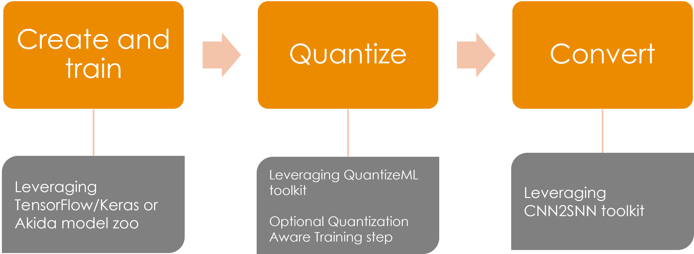
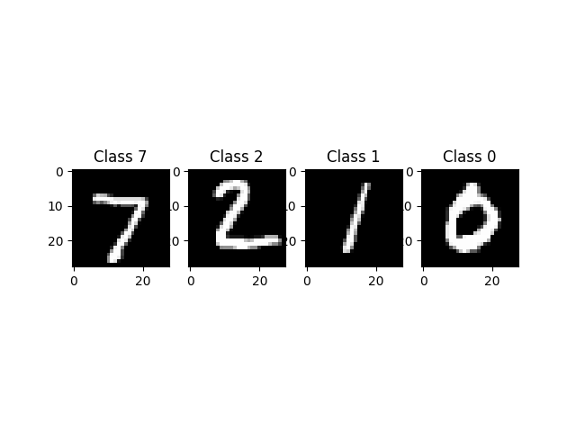
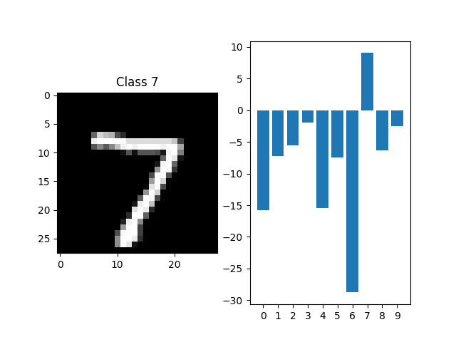

<!DOCTYPE html>
<html class="writer-html5" lang="en" >
<head>
  <meta charset="utf-8" /><meta name="generator" content="Docutils 0.17.1: http://docutils.sourceforge.net/" />

  <meta name="viewport" content="width=device-width, initial-scale=1.0" />
  <title>Global Akida workflow tutorial &mdash; Akida Examples  documentation</title>
      <link rel="stylesheet" href="../../_static/pygments.css" type="text/css" />
      <link rel="stylesheet" href="../../_static/css/theme.css" type="text/css" />
      <link rel="stylesheet" href="../../_static/sg_gallery.css" type="text/css" />
      <link rel="stylesheet" href="../../_static/sg_gallery-binder.css" type="text/css" />
      <link rel="stylesheet" href="../../_static/sg_gallery-dataframe.css" type="text/css" />
      <link rel="stylesheet" href="../../_static/sg_gallery-rendered-html.css" type="text/css" />
      <link rel="stylesheet" href="../../_static/custom.css" type="text/css" />
    <link rel="shortcut icon" href="../../_static/favicon.ico"/>
  <!--[if lt IE 9]>
    <script src="../../_static/js/html5shiv.min.js"></script>
  <![endif]-->
  
        <script data-url_root="../../" id="documentation_options" src="../../_static/documentation_options.js"></script>
        <script src="../../_static/jquery.js"></script>
        <script src="../../_static/underscore.js"></script>
        <script src="../../_static/doctools.js"></script>
    <script src="../../_static/js/theme.js"></script>
    <link rel="index" title="Index" href="../../genindex.html" />
    <link rel="search" title="Search" href="../../search.html" />
    <link rel="next" title="AkidaNet/ImageNet inference" href="plot_1_akidanet_imagenet.html" />
    <link rel="prev" title="Akida examples" href="../index.html" /> 
</head>

<body class="wy-body-for-nav"> 
  <div class="wy-grid-for-nav">
    <nav data-toggle="wy-nav-shift" class="wy-nav-side">
      <div class="wy-side-scroll">
        <div class="wy-side-nav-search"  style="background: #989898" >

          
          
          <a href="../../index.html">
            
              
          </a>
              <div class="version">
                Akida, 2nd Generation
              </div>
<div role="search">
  <form id="rtd-search-form" class="wy-form" action="../../search.html" method="get">
    <input type="text" name="q" placeholder="Search docs" aria-label="Search docs" />
    <input type="hidden" name="check_keywords" value="yes" />
    <input type="hidden" name="area" value="default" />
  </form>
</div>
        </div><div class="wy-menu wy-menu-vertical" data-spy="affix" role="navigation" aria-label="Navigation menu">
              <ul class="current">
<li class="toctree-l1"><a class="reference internal" href="../../index.html">Overview</a></li>
<li class="toctree-l1"><a class="reference internal" href="../../installation.html">Installation</a><ul>
<li class="toctree-l2"><a class="reference internal" href="../../installation.html#supported-configurations">Supported configurations</a></li>
<li class="toctree-l2"><a class="reference internal" href="../../installation.html#quick-installation">Quick installation</a></li>
<li class="toctree-l2"><a class="reference internal" href="../../installation.html#running-examples">Running examples</a></li>
</ul>
</li>
<li class="toctree-l1"><a class="reference internal" href="../../user_guide/user_guide.html">User guide</a><ul>
<li class="toctree-l2"><a class="reference internal" href="../../user_guide/akida.html">Akida user guide</a><ul>
<li class="toctree-l3"><a class="reference internal" href="../../user_guide/akida.html#overview">Overview</a></li>
<li class="toctree-l3"><a class="reference internal" href="../../user_guide/akida.html#programming-interface">Programming interface</a><ul>
<li class="toctree-l4"><a class="reference internal" href="../../user_guide/akida.html#the-akida-model">The Akida Model</a></li>
<li class="toctree-l4"><a class="reference internal" href="../../user_guide/akida.html#akida-layers">Akida layers</a></li>
</ul>
</li>
<li class="toctree-l3"><a class="reference internal" href="../../user_guide/akida.html#model-hardware-mapping">Model Hardware Mapping</a><ul>
<li class="toctree-l4"><a class="reference internal" href="../../user_guide/akida.html#devices">Devices</a></li>
<li class="toctree-l4"><a class="reference internal" href="../../user_guide/akida.html#model-mapping">Model mapping</a></li>
<li class="toctree-l4"><a class="reference internal" href="../../user_guide/akida.html#advanced-mapping-details-and-hardware-devices-usage">Advanced Mapping Details and Hardware Devices Usage</a></li>
<li class="toctree-l4"><a class="reference internal" href="../../user_guide/akida.html#performance-measurement">Performance measurement</a></li>
</ul>
</li>
<li class="toctree-l3"><a class="reference internal" href="../../user_guide/akida.html#using-akida-edge-learning">Using Akida Edge learning</a><ul>
<li class="toctree-l4"><a class="reference internal" href="../../user_guide/akida.html#learning-constraints">Learning constraints</a></li>
<li class="toctree-l4"><a class="reference internal" href="../../user_guide/akida.html#compiling-a-layer">Compiling a layer</a></li>
</ul>
</li>
</ul>
</li>
<li class="toctree-l2"><a class="reference internal" href="../../user_guide/quantizeml.html">QuantizeML toolkit</a><ul>
<li class="toctree-l3"><a class="reference internal" href="../../user_guide/quantizeml.html#overview">Overview</a></li>
<li class="toctree-l3"><a class="reference internal" href="../../user_guide/quantizeml.html#the-fixedpoint-representation">The FixedPoint representation</a></li>
<li class="toctree-l3"><a class="reference internal" href="../../user_guide/quantizeml.html#quantization-flow">Quantization flow</a><ul>
<li class="toctree-l4"><a class="reference internal" href="../../user_guide/quantizeml.html#compatibility-constraints">Compatibility constraints</a></li>
<li class="toctree-l4"><a class="reference internal" href="../../user_guide/quantizeml.html#model-loading">Model loading</a></li>
</ul>
</li>
<li class="toctree-l3"><a class="reference internal" href="../../user_guide/quantizeml.html#command-line-interface">Command line interface</a><ul>
<li class="toctree-l4"><a class="reference internal" href="../../user_guide/quantizeml.html#quantize-cli">quantize CLI</a></li>
<li class="toctree-l4"><a class="reference internal" href="../../user_guide/quantizeml.html#config-cli">config CLI</a></li>
<li class="toctree-l4"><a class="reference internal" href="../../user_guide/quantizeml.html#check-cli">check CLI</a></li>
<li class="toctree-l4"><a class="reference internal" href="../../user_guide/quantizeml.html#insert-rescaling-cli">insert_rescaling CLI</a></li>
</ul>
</li>
<li class="toctree-l3"><a class="reference internal" href="../../user_guide/quantizeml.html#supported-layer-types">Supported layer types</a></li>
</ul>
</li>
<li class="toctree-l2"><a class="reference internal" href="../../user_guide/cnn2snn.html">CNN2SNN toolkit</a><ul>
<li class="toctree-l3"><a class="reference internal" href="../../user_guide/cnn2snn.html#overview">Overview</a></li>
<li class="toctree-l3"><a class="reference internal" href="../../user_guide/cnn2snn.html#conversion-flow">Conversion flow</a><ul>
<li class="toctree-l4"><a class="reference internal" href="../../user_guide/cnn2snn.html#conversion-compatibility">Conversion compatibility</a></li>
<li class="toctree-l4"><a class="reference internal" href="../../user_guide/cnn2snn.html#command-line-interface">Command-line interface</a></li>
</ul>
</li>
<li class="toctree-l3"><a class="reference internal" href="../../user_guide/cnn2snn.html#handling-akida-1-0-and-akida-2-0-specificities">Handling Akida 1.0 and Akida 2.0 specificities</a></li>
<li class="toctree-l3"><a class="reference internal" href="../../user_guide/cnn2snn.html#legacy-quantization-api">Legacy quantization API</a><ul>
<li class="toctree-l4"><a class="reference internal" href="../../user_guide/cnn2snn.html#typical-quantization-scenario">Typical quantization scenario</a></li>
<li class="toctree-l4"><a class="reference internal" href="../../user_guide/cnn2snn.html#design-compatibility-constraints">Design compatibility constraints</a></li>
<li class="toctree-l4"><a class="reference internal" href="../../user_guide/cnn2snn.html#id3">Command-line interface</a></li>
<li class="toctree-l4"><a class="reference internal" href="../../user_guide/cnn2snn.html#layers-considerations">Layers Considerations</a></li>
<li class="toctree-l4"><a class="reference internal" href="../../user_guide/cnn2snn.html#tips-and-tricks">Tips and Tricks</a></li>
</ul>
</li>
</ul>
</li>
<li class="toctree-l2"><a class="reference internal" href="../../user_guide/akida_models.html">Akida models zoo</a><ul>
<li class="toctree-l3"><a class="reference internal" href="../../user_guide/akida_models.html#overview">Overview</a></li>
<li class="toctree-l3"><a class="reference internal" href="../../user_guide/akida_models.html#command-line-interface-for-model-creation">Command-line interface for model creation</a></li>
<li class="toctree-l3"><a class="reference internal" href="../../user_guide/akida_models.html#command-line-interface-for-model-training">Command-line interface for model training</a><ul>
<li class="toctree-l4"><a class="reference internal" href="../../user_guide/akida_models.html#kws-training">KWS training</a></li>
<li class="toctree-l4"><a class="reference internal" href="../../user_guide/akida_models.html#akidanet-training">AkidaNet training</a></li>
</ul>
</li>
<li class="toctree-l3"><a class="reference internal" href="../../user_guide/akida_models.html#command-line-interface-for-model-evaluation">Command-line interface for model evaluation</a></li>
<li class="toctree-l3"><a class="reference internal" href="../../user_guide/akida_models.html#command-line-interface-to-evaluate-model-macs">Command-line interface to evaluate model MACS</a></li>
<li class="toctree-l3"><a class="reference internal" href="../../user_guide/akida_models.html#id1">Layer Blocks</a></li>
<li class="toctree-l3"><a class="reference internal" href="../../user_guide/akida_models.html#handling-akida-1-0-and-akida-2-0-specificities">Handling Akida 1.0 and Akida 2.0 specificities</a></li>
</ul>
</li>
<li class="toctree-l2"><a class="reference internal" href="../../user_guide/hw_constraints.html">Hardware constraints</a><ul>
<li class="toctree-l3"><a class="reference internal" href="../../user_guide/hw_constraints.html#inputconvolutional">InputConvolutional</a></li>
<li class="toctree-l3"><a class="reference internal" href="../../user_guide/hw_constraints.html#convolutional">Convolutional</a></li>
<li class="toctree-l3"><a class="reference internal" href="../../user_guide/hw_constraints.html#separableconvolutional">SeparableConvolutional</a></li>
<li class="toctree-l3"><a class="reference internal" href="../../user_guide/hw_constraints.html#fullyconnected">FullyConnected</a></li>
</ul>
</li>
</ul>
</li>
<li class="toctree-l1"><a class="reference internal" href="../../api_reference/api_reference.html">API reference</a><ul>
<li class="toctree-l2"><a class="reference internal" href="../../api_reference/akida_apis.html">Akida runtime</a><ul>
<li class="toctree-l3"><a class="reference internal" href="../../api_reference/akida_apis.html#model">Model</a></li>
<li class="toctree-l3"><a class="reference internal" href="../../api_reference/akida_apis.html#layer">Layer</a><ul>
<li class="toctree-l4"><a class="reference internal" href="../../api_reference/akida_apis.html#id1">Layer</a></li>
<li class="toctree-l4"><a class="reference internal" href="../../api_reference/akida_apis.html#mapping">Mapping</a></li>
</ul>
</li>
<li class="toctree-l3"><a class="reference internal" href="../../api_reference/akida_apis.html#akida-v1-layers">Akida V1 layers</a></li>
<li class="toctree-l3"><a class="reference internal" href="../../api_reference/akida_apis.html#akida-v2-layers">Akida V2 layers</a></li>
<li class="toctree-l3"><a class="reference internal" href="../../api_reference/akida_apis.html#layer-parameters">Layer parameters</a><ul>
<li class="toctree-l4"><a class="reference internal" href="../../api_reference/akida_apis.html#layertype">LayerType</a></li>
<li class="toctree-l4"><a class="reference internal" href="../../api_reference/akida_apis.html#padding">Padding</a></li>
<li class="toctree-l4"><a class="reference internal" href="../../api_reference/akida_apis.html#pooltype">PoolType</a></li>
</ul>
</li>
<li class="toctree-l3"><a class="reference internal" href="../../api_reference/akida_apis.html#optimizers">Optimizers</a></li>
<li class="toctree-l3"><a class="reference internal" href="../../api_reference/akida_apis.html#sequence">Sequence</a><ul>
<li class="toctree-l4"><a class="reference internal" href="../../api_reference/akida_apis.html#id2">Sequence</a></li>
<li class="toctree-l4"><a class="reference internal" href="../../api_reference/akida_apis.html#backendtype">BackendType</a></li>
<li class="toctree-l4"><a class="reference internal" href="../../api_reference/akida_apis.html#pass">Pass</a></li>
</ul>
</li>
<li class="toctree-l3"><a class="reference internal" href="../../api_reference/akida_apis.html#device">Device</a><ul>
<li class="toctree-l4"><a class="reference internal" href="../../api_reference/akida_apis.html#id3">Device</a></li>
<li class="toctree-l4"><a class="reference internal" href="../../api_reference/akida_apis.html#hwversion">HwVersion</a></li>
</ul>
</li>
<li class="toctree-l3"><a class="reference internal" href="../../api_reference/akida_apis.html#hwdevice">HWDevice</a><ul>
<li class="toctree-l4"><a class="reference internal" href="../../api_reference/akida_apis.html#id4">HWDevice</a></li>
<li class="toctree-l4"><a class="reference internal" href="../../api_reference/akida_apis.html#socdriver">SocDriver</a></li>
<li class="toctree-l4"><a class="reference internal" href="../../api_reference/akida_apis.html#clockmode">ClockMode</a></li>
</ul>
</li>
<li class="toctree-l3"><a class="reference internal" href="../../api_reference/akida_apis.html#powermeter">PowerMeter</a></li>
<li class="toctree-l3"><a class="reference internal" href="../../api_reference/akida_apis.html#np">NP</a></li>
<li class="toctree-l3"><a class="reference internal" href="../../api_reference/akida_apis.html#tools">Tools</a><ul>
<li class="toctree-l4"><a class="reference internal" href="../../api_reference/akida_apis.html#sparsity">Sparsity</a></li>
<li class="toctree-l4"><a class="reference internal" href="../../api_reference/akida_apis.html#compatibility">Compatibility</a></li>
</ul>
</li>
</ul>
</li>
<li class="toctree-l2"><a class="reference internal" href="../../api_reference/cnn2snn_apis.html">CNN2SNN</a><ul>
<li class="toctree-l3"><a class="reference internal" href="../../api_reference/cnn2snn_apis.html#akida-version">Akida version</a></li>
<li class="toctree-l3"><a class="reference internal" href="../../api_reference/cnn2snn_apis.html#conversion">Conversion</a></li>
<li class="toctree-l3"><a class="reference internal" href="../../api_reference/cnn2snn_apis.html#legacy-quantization-api">Legacy quantization API</a><ul>
<li class="toctree-l4"><a class="reference internal" href="../../api_reference/cnn2snn_apis.html#utils">Utils</a></li>
<li class="toctree-l4"><a class="reference internal" href="../../api_reference/cnn2snn_apis.html#calibration">Calibration</a></li>
<li class="toctree-l4"><a class="reference internal" href="../../api_reference/cnn2snn_apis.html#transforms">Transforms</a></li>
<li class="toctree-l4"><a class="reference internal" href="../../api_reference/cnn2snn_apis.html#constraint">Constraint</a></li>
<li class="toctree-l4"><a class="reference internal" href="../../api_reference/cnn2snn_apis.html#quantization">Quantization</a></li>
<li class="toctree-l4"><a class="reference internal" href="../../api_reference/cnn2snn_apis.html#quantizers">Quantizers</a></li>
<li class="toctree-l4"><a class="reference internal" href="../../api_reference/cnn2snn_apis.html#quantized-layers">Quantized layers</a></li>
</ul>
</li>
</ul>
</li>
<li class="toctree-l2"><a class="reference internal" href="../../api_reference/quantizeml_apis.html">QuantizeML</a><ul>
<li class="toctree-l3"><a class="reference internal" href="../../api_reference/quantizeml_apis.html#layers">Layers</a><ul>
<li class="toctree-l4"><a class="reference internal" href="../../api_reference/quantizeml_apis.html#reshaping">Reshaping</a></li>
<li class="toctree-l4"><a class="reference internal" href="../../api_reference/quantizeml_apis.html#activations">Activations</a></li>
<li class="toctree-l4"><a class="reference internal" href="../../api_reference/quantizeml_apis.html#attention">Attention</a></li>
<li class="toctree-l4"><a class="reference internal" href="../../api_reference/quantizeml_apis.html#normalization">Normalization</a></li>
<li class="toctree-l4"><a class="reference internal" href="../../api_reference/quantizeml_apis.html#convolution">Convolution</a></li>
<li class="toctree-l4"><a class="reference internal" href="../../api_reference/quantizeml_apis.html#depthwise-convolution">Depthwise convolution</a></li>
<li class="toctree-l4"><a class="reference internal" href="../../api_reference/quantizeml_apis.html#separable-convolution">Separable convolution</a></li>
<li class="toctree-l4"><a class="reference internal" href="../../api_reference/quantizeml_apis.html#dense">Dense</a></li>
<li class="toctree-l4"><a class="reference internal" href="../../api_reference/quantizeml_apis.html#skip-connection">Skip connection</a></li>
<li class="toctree-l4"><a class="reference internal" href="../../api_reference/quantizeml_apis.html#pooling">Pooling</a></li>
<li class="toctree-l4"><a class="reference internal" href="../../api_reference/quantizeml_apis.html#shiftmax">Shiftmax</a></li>
<li class="toctree-l4"><a class="reference internal" href="../../api_reference/quantizeml_apis.html#transformers">Transformers</a></li>
<li class="toctree-l4"><a class="reference internal" href="../../api_reference/quantizeml_apis.html#rescaling">Rescaling</a></li>
<li class="toctree-l4"><a class="reference internal" href="../../api_reference/quantizeml_apis.html#dropout">Dropout</a></li>
<li class="toctree-l4"><a class="reference internal" href="../../api_reference/quantizeml_apis.html#quantizers">Quantizers</a></li>
<li class="toctree-l4"><a class="reference internal" href="../../api_reference/quantizeml_apis.html#quantization-parameters">Quantization parameters</a></li>
<li class="toctree-l4"><a class="reference internal" href="../../api_reference/quantizeml_apis.html#calibration">Calibration</a></li>
<li class="toctree-l4"><a class="reference internal" href="../../api_reference/quantizeml_apis.html#recording">Recording</a></li>
</ul>
</li>
<li class="toctree-l3"><a class="reference internal" href="../../api_reference/quantizeml_apis.html#models">Models</a><ul>
<li class="toctree-l4"><a class="reference internal" href="../../api_reference/quantizeml_apis.html#transforms">Transforms</a></li>
<li class="toctree-l4"><a class="reference internal" href="../../api_reference/quantizeml_apis.html#quantization">Quantization</a></li>
<li class="toctree-l4"><a class="reference internal" href="../../api_reference/quantizeml_apis.html#id1">Calibration</a></li>
<li class="toctree-l4"><a class="reference internal" href="../../api_reference/quantizeml_apis.html#utils">Utils</a></li>
</ul>
</li>
<li class="toctree-l3"><a class="reference internal" href="../../api_reference/quantizeml_apis.html#tensors">Tensors</a><ul>
<li class="toctree-l4"><a class="reference internal" href="../../api_reference/quantizeml_apis.html#qtensor">QTensor</a></li>
<li class="toctree-l4"><a class="reference internal" href="../../api_reference/quantizeml_apis.html#fixedpoint">FixedPoint</a></li>
<li class="toctree-l4"><a class="reference internal" href="../../api_reference/quantizeml_apis.html#qfloat">QFloat</a></li>
</ul>
</li>
</ul>
</li>
<li class="toctree-l2"><a class="reference internal" href="../../api_reference/akida_models_apis.html">Akida models</a><ul>
<li class="toctree-l3"><a class="reference internal" href="../../api_reference/akida_models_apis.html#layer-blocks">Layer blocks</a><ul>
<li class="toctree-l4"><a class="reference internal" href="../../api_reference/akida_models_apis.html#cnn-blocks">CNN blocks</a></li>
<li class="toctree-l4"><a class="reference internal" href="../../api_reference/akida_models_apis.html#transformers-blocks">Transformers blocks</a></li>
<li class="toctree-l4"><a class="reference internal" href="../../api_reference/akida_models_apis.html#transposed-blocks">Transposed blocks</a></li>
<li class="toctree-l4"><a class="reference internal" href="../../api_reference/akida_models_apis.html#detection-block">Detection block</a></li>
</ul>
</li>
<li class="toctree-l3"><a class="reference internal" href="../../api_reference/akida_models_apis.html#helpers">Helpers</a><ul>
<li class="toctree-l4"><a class="reference internal" href="../../api_reference/akida_models_apis.html#gamma-constraint">Gamma constraint</a></li>
<li class="toctree-l4"><a class="reference internal" href="../../api_reference/akida_models_apis.html#unfusing-separableconvolutional">Unfusing SeparableConvolutional</a></li>
<li class="toctree-l4"><a class="reference internal" href="../../api_reference/akida_models_apis.html#extract-samples">Extract samples</a></li>
</ul>
</li>
<li class="toctree-l3"><a class="reference internal" href="../../api_reference/akida_models_apis.html#knowledge-distillation">Knowledge distillation</a></li>
<li class="toctree-l3"><a class="reference internal" href="../../api_reference/akida_models_apis.html#training">Training</a></li>
<li class="toctree-l3"><a class="reference internal" href="../../api_reference/akida_models_apis.html#macs">MACS</a></li>
<li class="toctree-l3"><a class="reference internal" href="../../api_reference/akida_models_apis.html#model-i-o">Model I/O</a></li>
<li class="toctree-l3"><a class="reference internal" href="../../api_reference/akida_models_apis.html#utils">Utils</a></li>
<li class="toctree-l3"><a class="reference internal" href="../../api_reference/akida_models_apis.html#model-zoo">Model zoo</a><ul>
<li class="toctree-l4"><a class="reference internal" href="../../api_reference/akida_models_apis.html#akidanet">AkidaNet</a></li>
<li class="toctree-l4"><a class="reference internal" href="../../api_reference/akida_models_apis.html#mobilenet">Mobilenet</a></li>
<li class="toctree-l4"><a class="reference internal" href="../../api_reference/akida_models_apis.html#ds-cnn">DS-CNN</a></li>
<li class="toctree-l4"><a class="reference internal" href="../../api_reference/akida_models_apis.html#vgg">VGG</a></li>
<li class="toctree-l4"><a class="reference internal" href="../../api_reference/akida_models_apis.html#yolo">YOLO</a></li>
<li class="toctree-l4"><a class="reference internal" href="../../api_reference/akida_models_apis.html#pointnet">PointNet++</a></li>
<li class="toctree-l4"><a class="reference internal" href="../../api_reference/akida_models_apis.html#gxnor">GXNOR</a></li>
<li class="toctree-l4"><a class="reference internal" href="../../api_reference/akida_models_apis.html#centernet">CenterNet</a></li>
<li class="toctree-l4"><a class="reference internal" href="../../api_reference/akida_models_apis.html#akidaunet">AkidaUNet</a></li>
<li class="toctree-l4"><a class="reference internal" href="../../api_reference/akida_models_apis.html#transformers">Transformers</a></li>
</ul>
</li>
</ul>
</li>
</ul>
</li>
<li class="toctree-l1 current"><a class="reference internal" href="../index.html">Examples</a><ul class="current">
<li class="toctree-l2 current"><a class="reference internal" href="../index.html#general-examples">General examples</a><ul class="current">
<li class="toctree-l3 current"><a class="current reference internal" href="#">Global Akida workflow tutorial</a><ul>
<li class="toctree-l4"><a class="reference internal" href="#create-and-train">1. Create and train</a></li>
<li class="toctree-l4"><a class="reference internal" href="#quantize">2. Quantize</a></li>
<li class="toctree-l4"><a class="reference internal" href="#convert">3. Convert</a></li>
<li class="toctree-l4"><a class="reference internal" href="#gxnor-mnist">4. GXNOR/MNIST</a></li>
</ul>
</li>
<li class="toctree-l3"><a class="reference internal" href="plot_1_akidanet_imagenet.html">AkidaNet/ImageNet inference</a><ul>
<li class="toctree-l4"><a class="reference internal" href="plot_1_akidanet_imagenet.html#dataset-preparation">1. Dataset preparation</a></li>
<li class="toctree-l4"><a class="reference internal" href="plot_1_akidanet_imagenet.html#create-a-keras-akidanet-model">2. Create a Keras AkidaNet model</a></li>
<li class="toctree-l4"><a class="reference internal" href="plot_1_akidanet_imagenet.html#quantized-model">3. Quantized model</a></li>
<li class="toctree-l4"><a class="reference internal" href="plot_1_akidanet_imagenet.html#pretrained-quantized-model">4. Pretrained quantized model</a></li>
<li class="toctree-l4"><a class="reference internal" href="plot_1_akidanet_imagenet.html#conversion-to-akida">5. Conversion to Akida</a></li>
<li class="toctree-l4"><a class="reference internal" href="plot_1_akidanet_imagenet.html#hardware-mapping-and-performance">6. Hardware mapping and performance</a></li>
</ul>
</li>
<li class="toctree-l3"><a class="reference internal" href="plot_2_ds_cnn_kws.html">DS-CNN/KWS inference</a><ul>
<li class="toctree-l4"><a class="reference internal" href="plot_2_ds_cnn_kws.html#load-the-preprocessed-dataset">1. Load the preprocessed dataset</a></li>
<li class="toctree-l4"><a class="reference internal" href="plot_2_ds_cnn_kws.html#load-a-pre-trained-native-keras-model">2. Load a pre-trained native Keras model</a></li>
<li class="toctree-l4"><a class="reference internal" href="plot_2_ds_cnn_kws.html#load-a-pre-trained-quantized-keras-model">3. Load a pre-trained quantized Keras model</a></li>
<li class="toctree-l4"><a class="reference internal" href="plot_2_ds_cnn_kws.html#conversion-to-akida">4. Conversion to Akida</a></li>
<li class="toctree-l4"><a class="reference internal" href="plot_2_ds_cnn_kws.html#confusion-matrix">5. Confusion matrix</a></li>
</ul>
</li>
<li class="toctree-l3"><a class="reference internal" href="plot_3_regression.html">Regression tutorial</a><ul>
<li class="toctree-l4"><a class="reference internal" href="plot_3_regression.html#load-the-dataset">1. Load the dataset</a></li>
<li class="toctree-l4"><a class="reference internal" href="plot_3_regression.html#load-a-pre-trained-native-keras-model">2. Load a pre-trained native Keras model</a></li>
<li class="toctree-l4"><a class="reference internal" href="plot_3_regression.html#load-a-pre-trained-quantized-keras-model">3. Load a pre-trained quantized Keras model</a></li>
<li class="toctree-l4"><a class="reference internal" href="plot_3_regression.html#conversion-to-akida">4. Conversion to Akida</a></li>
<li class="toctree-l4"><a class="reference internal" href="plot_3_regression.html#estimate-age-on-a-single-image">5. Estimate age on a single image</a></li>
</ul>
</li>
<li class="toctree-l3"><a class="reference internal" href="plot_4_transfer_learning.html">Transfer learning with AkidaNet for PlantVillage</a><ul>
<li class="toctree-l4"><a class="reference internal" href="plot_4_transfer_learning.html#transfer-learning-process">Transfer learning process</a></li>
<li class="toctree-l4"><a class="reference internal" href="plot_4_transfer_learning.html#dataset-preparation">1. Dataset preparation</a></li>
<li class="toctree-l4"><a class="reference internal" href="plot_4_transfer_learning.html#get-a-trained-akidanet-base-model">2. Get a trained AkidaNet base model</a></li>
<li class="toctree-l4"><a class="reference internal" href="plot_4_transfer_learning.html#add-a-classification-head-to-the-model">3. Add a classification head to the model</a></li>
<li class="toctree-l4"><a class="reference internal" href="plot_4_transfer_learning.html#freeze-the-base-model">4. Freeze the base model</a></li>
<li class="toctree-l4"><a class="reference internal" href="plot_4_transfer_learning.html#train-for-a-few-epochs">5. Train for a few epochs</a></li>
<li class="toctree-l4"><a class="reference internal" href="plot_4_transfer_learning.html#quantize-the-model">6. Quantize the model</a></li>
<li class="toctree-l4"><a class="reference internal" href="plot_4_transfer_learning.html#compute-accuracy">7. Compute accuracy</a></li>
</ul>
</li>
<li class="toctree-l3"><a class="reference internal" href="plot_5_voc_yolo_detection.html">YOLO/PASCAL-VOC detection tutorial</a><ul>
<li class="toctree-l4"><a class="reference internal" href="plot_5_voc_yolo_detection.html#introduction">1. Introduction</a></li>
<li class="toctree-l4"><a class="reference internal" href="plot_5_voc_yolo_detection.html#preprocessing-tools">2. Preprocessing tools</a></li>
<li class="toctree-l4"><a class="reference internal" href="plot_5_voc_yolo_detection.html#model-architecture">3. Model architecture</a></li>
<li class="toctree-l4"><a class="reference internal" href="plot_5_voc_yolo_detection.html#training">4. Training</a></li>
<li class="toctree-l4"><a class="reference internal" href="plot_5_voc_yolo_detection.html#performance">5. Performance</a></li>
<li class="toctree-l4"><a class="reference internal" href="plot_5_voc_yolo_detection.html#conversion-to-akida">6. Conversion to Akida</a></li>
</ul>
</li>
<li class="toctree-l3"><a class="reference internal" href="plot_6_segmentation.html">Segmentation tutorial</a><ul>
<li class="toctree-l4"><a class="reference internal" href="plot_6_segmentation.html#load-the-dataset">1. Load the dataset</a></li>
<li class="toctree-l4"><a class="reference internal" href="plot_6_segmentation.html#load-a-pre-trained-native-keras-model">2. Load a pre-trained native Keras model</a></li>
<li class="toctree-l4"><a class="reference internal" href="plot_6_segmentation.html#load-a-pre-trained-quantized-keras-model">3. Load a pre-trained quantized Keras model</a></li>
<li class="toctree-l4"><a class="reference internal" href="plot_6_segmentation.html#conversion-to-akida">4. Conversion to Akida</a></li>
<li class="toctree-l4"><a class="reference internal" href="plot_6_segmentation.html#segment-a-single-image">5. Segment a single image</a></li>
</ul>
</li>
<li class="toctree-l3"><a class="reference internal" href="plot_7_vision_transformer.html">Vision transformers</a><ul>
<li class="toctree-l4"><a class="reference internal" href="plot_7_vision_transformer.html#dataset-preparation">1. Dataset preparation</a></li>
<li class="toctree-l4"><a class="reference internal" href="plot_7_vision_transformer.html#create-a-transformer-model">2. Create a transformer model</a></li>
<li class="toctree-l4"><a class="reference internal" href="plot_7_vision_transformer.html#quantization">3. Quantization</a></li>
<li class="toctree-l4"><a class="reference internal" href="plot_7_vision_transformer.html#conversion-to-akida">4. Conversion to Akida</a></li>
<li class="toctree-l4"><a class="reference internal" href="plot_7_vision_transformer.html#attention-maps">5.3 Attention maps</a></li>
</ul>
</li>
</ul>
</li>
<li class="toctree-l2"><a class="reference internal" href="../index.html#quantization">Quantization</a><ul>
<li class="toctree-l3"><a class="reference internal" href="../quantization/plot_0_advanced_quantizeml.html">Advanced QuantizeML tutorial</a><ul>
<li class="toctree-l4"><a class="reference internal" href="../quantization/plot_0_advanced_quantizeml.html#defining-a-quantization-scheme">1. Defining a quantization scheme</a></li>
<li class="toctree-l4"><a class="reference internal" href="../quantization/plot_0_advanced_quantizeml.html#calibration">2. Calibration</a></li>
</ul>
</li>
<li class="toctree-l3"><a class="reference internal" href="../quantization/plot_1_upgrading_to_2.0.html">Upgrading to Akida 2.0</a><ul>
<li class="toctree-l4"><a class="reference internal" href="../quantization/plot_1_upgrading_to_2.0.html#workflow-differences">1. Workflow differences</a></li>
<li class="toctree-l4"><a class="reference internal" href="../quantization/plot_1_upgrading_to_2.0.html#models-architecture-differences">2. Models architecture differences</a></li>
<li class="toctree-l4"><a class="reference internal" href="../quantization/plot_1_upgrading_to_2.0.html#using-akidaversion">3. Using <code class="docutils literal notranslate"><span class="pre">AkidaVersion</span></code></a></li>
</ul>
</li>
</ul>
</li>
<li class="toctree-l2"><a class="reference internal" href="../index.html#edge-examples">Edge examples</a><ul>
<li class="toctree-l3"><a class="reference internal" href="../edge/plot_0_edge_learning_vision.html">Akida vision edge learning</a><ul>
<li class="toctree-l4"><a class="reference internal" href="../edge/plot_0_edge_learning_vision.html#dataset-preparation">1. Dataset preparation</a></li>
<li class="toctree-l4"><a class="reference internal" href="../edge/plot_0_edge_learning_vision.html#prepare-akida-model-for-learning">2. Prepare Akida model for learning</a></li>
<li class="toctree-l4"><a class="reference internal" href="../edge/plot_0_edge_learning_vision.html#edge-learning-with-akida">3. Edge learning with Akida</a></li>
</ul>
</li>
<li class="toctree-l3"><a class="reference internal" href="../edge/plot_1_edge_learning_kws.html">Akida edge learning for keyword spotting</a><ul>
<li class="toctree-l4"><a class="reference internal" href="../edge/plot_1_edge_learning_kws.html#edge-learning-process">1. Edge learning process</a></li>
<li class="toctree-l4"><a class="reference internal" href="../edge/plot_1_edge_learning_kws.html#dataset-preparation">2. Dataset preparation</a></li>
<li class="toctree-l4"><a class="reference internal" href="../edge/plot_1_edge_learning_kws.html#prepare-akida-model-for-learning">3. Prepare Akida model for learning</a></li>
<li class="toctree-l4"><a class="reference internal" href="../edge/plot_1_edge_learning_kws.html#learn-with-akida-using-the-training-set">4. Learn with Akida using the training set</a></li>
<li class="toctree-l4"><a class="reference internal" href="../edge/plot_1_edge_learning_kws.html#edge-learning">5. Edge learning</a></li>
</ul>
</li>
<li class="toctree-l3"><a class="reference internal" href="../edge/plot_2_edge_learning_parameters.html">Tips to set Akida learning parameters</a><ul>
<li class="toctree-l4"><a class="reference internal" href="../edge/plot_2_edge_learning_parameters.html#akida-learning-parameters">1. Akida learning parameters</a></li>
<li class="toctree-l4"><a class="reference internal" href="../edge/plot_2_edge_learning_parameters.html#create-akida-model">2. Create Akida model</a></li>
<li class="toctree-l4"><a class="reference internal" href="../edge/plot_2_edge_learning_parameters.html#estimate-the-required-number-of-weights-of-the-trainable-layer">3. Estimate the required number of weights of the trainable layer</a></li>
<li class="toctree-l4"><a class="reference internal" href="../edge/plot_2_edge_learning_parameters.html#estimate-the-number-of-neurons-per-class">4. Estimate the number of neurons per class</a></li>
</ul>
</li>
</ul>
</li>
<li class="toctree-l2"><a class="reference internal" href="../index.html#deprecated-cnn2snn-tutorials">[Deprecated] CNN2SNN tutorials</a><ul>
<li class="toctree-l3"><a class="reference internal" href="../cnn2snn/plot_1_advanced_cnn2snn.html">Advanced CNN2SNN tutorial</a><ul>
<li class="toctree-l4"><a class="reference internal" href="../cnn2snn/plot_1_advanced_cnn2snn.html#design-a-cnn2snn-quantized-model">1. Design a CNN2SNN quantized model</a></li>
<li class="toctree-l4"><a class="reference internal" href="../cnn2snn/plot_1_advanced_cnn2snn.html#weight-quantizer-details">2. Weight Quantizer Details</a></li>
<li class="toctree-l4"><a class="reference internal" href="../cnn2snn/plot_1_advanced_cnn2snn.html#understanding-quantized-activation">3. Understanding quantized activation</a></li>
<li class="toctree-l4"><a class="reference internal" href="../cnn2snn/plot_1_advanced_cnn2snn.html#how-to-deal-with-too-high-scale-factors">4. How to deal with too high scale factors</a></li>
</ul>
</li>
</ul>
</li>
</ul>
</li>
<li class="toctree-l1"><a class="reference internal" href="../../zoo_performances.html">Model zoo performances</a><ul>
<li class="toctree-l2"><a class="reference internal" href="../../zoo_performances.html#akida-1-0-models">Akida 1.0 models</a><ul>
<li class="toctree-l3"><a class="reference internal" href="../../zoo_performances.html#image-icon-ref-image-domain"> Image domain</a><ul>
<li class="toctree-l4"><a class="reference internal" href="../../zoo_performances.html#classification">Classification</a></li>
<li class="toctree-l4"><a class="reference internal" href="../../zoo_performances.html#object-detection">Object detection</a></li>
<li class="toctree-l4"><a class="reference internal" href="../../zoo_performances.html#regression">Regression</a></li>
<li class="toctree-l4"><a class="reference internal" href="../../zoo_performances.html#face-recognition">Face recognition</a></li>
</ul>
</li>
<li class="toctree-l3"><a class="reference internal" href="../../zoo_performances.html#audio-icon-ref-audio-domain"> Audio domain</a><ul>
<li class="toctree-l4"><a class="reference internal" href="../../zoo_performances.html#keyword-spotting">Keyword spotting</a></li>
</ul>
</li>
<li class="toctree-l3"><a class="reference internal" href="../../zoo_performances.html#pointcloud-icon-ref-point-cloud"> Point cloud</a><ul>
<li class="toctree-l4"><a class="reference internal" href="../../zoo_performances.html#id1">Classification</a></li>
</ul>
</li>
</ul>
</li>
<li class="toctree-l2"><a class="reference internal" href="../../zoo_performances.html#akida-2-0-models">Akida 2.0 models</a><ul>
<li class="toctree-l3"><a class="reference internal" href="../../zoo_performances.html#id2"> Image domain</a><ul>
<li class="toctree-l4"><a class="reference internal" href="../../zoo_performances.html#id3">Classification</a></li>
<li class="toctree-l4"><a class="reference internal" href="../../zoo_performances.html#id6">Object detection</a></li>
<li class="toctree-l4"><a class="reference internal" href="../../zoo_performances.html#id7">Regression</a></li>
<li class="toctree-l4"><a class="reference internal" href="../../zoo_performances.html#id8">Face recognition</a></li>
<li class="toctree-l4"><a class="reference internal" href="../../zoo_performances.html#segmentation">Segmentation</a></li>
</ul>
</li>
<li class="toctree-l3"><a class="reference internal" href="../../zoo_performances.html#id10"> Audio domain</a><ul>
<li class="toctree-l4"><a class="reference internal" href="../../zoo_performances.html#id11">Keyword spotting</a></li>
</ul>
</li>
<li class="toctree-l3"><a class="reference internal" href="../../zoo_performances.html#id12"> Point cloud</a><ul>
<li class="toctree-l4"><a class="reference internal" href="../../zoo_performances.html#id13">Classification</a></li>
</ul>
</li>
</ul>
</li>
</ul>
</li>
<li class="toctree-l1"><a class="reference external" href="https://github.com/Brainchip-Inc/akida_examples/releases">Changelog</a></li>
<li class="toctree-l1"><a class="reference external" href="https://support.brainchip.com/portal/home">Support</a></li>
<li class="toctree-l1"><a class="reference internal" href="../../license.html">License</a></li>
</ul>

        </div>
      </div>
    </nav>

    <section data-toggle="wy-nav-shift" class="wy-nav-content-wrap"><nav class="wy-nav-top" aria-label="Mobile navigation menu"  style="background: #989898" >
          <i data-toggle="wy-nav-top" class="fa fa-bars"></i>
          <a href="../../index.html">Akida Examples</a>
      </nav>

      <div class="wy-nav-content">
        <div class="rst-content">
          <div role="navigation" aria-label="Page navigation">
  <ul class="wy-breadcrumbs">
      <li><a href="../../index.html" class="icon icon-home" aria-label="Home"></a></li>
          <li class="breadcrumb-item"><a href="../index.html">Akida examples</a></li>
      <li class="breadcrumb-item active">Global Akida workflow tutorial</li>
      <li class="wy-breadcrumbs-aside">
      </li>
  </ul>
  <hr/>
</div>
          <div role="main" class="document" itemscope="itemscope" itemtype="http://schema.org/Article">
           <div itemprop="articleBody">
             
  <div class="sphx-glr-download-link-note admonition note">
<p class="admonition-title">Note</p>
<p><a class="reference internal" href="#sphx-glr-download-examples-general-plot-0-global-workflow-py"><span class="std std-ref">Go to the end</span></a>
to download the full example code</p>
</div>
<section class="sphx-glr-example-title" id="global-akida-workflow-tutorial">
<span id="sphx-glr-examples-general-plot-0-global-workflow-py"></span><h1>Global Akida workflow tutorial<a class="headerlink" href="#global-akida-workflow-tutorial" title="Permalink to this headline"></a></h1>
<p>This tutorial illustrates how to use the QuantizeML and CNN2SNN toolkits to produce a model that can
be used with Akida accelerator. You can refer to our <a class="reference external" href="../../user_guide/akida.html">Akida user guide</a> for further explanation.</p>
<div class="admonition note">
<p class="admonition-title">Note</p>
<p>Please refer to TensorFlow  <a class="reference external" href="https://www.tensorflow.org/api_docs/python/tf/keras/models">tf.keras.models</a>
module for model creation/import details and <a class="reference external" href="https://www.tensorflow.org/guide">TensorFlow Guide</a> for details of how TensorFlow works.</p>
<p>MNIST example below is light enough so you do not need a <a class="reference external" href="https://www.tensorflow.org/install/gpu">GPU</a> to run the training steps.</p>
</div>
<figure class="align-center" id="id2">
<a class="reference external image-reference" href="../../_images/overall_flow.png"></a>
<figcaption>
<p><span class="caption-text">Akida workflow</span><a class="headerlink" href="#id2" title="Permalink to this image"></a></p>
</figcaption>
</figure>
<section id="create-and-train">
<h2>1. Create and train<a class="headerlink" href="#create-and-train" title="Permalink to this headline"></a></h2>
<section id="load-and-reshape-mnist-dataset">
<h3>1.1. Load and reshape MNIST dataset<a class="headerlink" href="#load-and-reshape-mnist-dataset" title="Permalink to this headline"></a></h3>
<div class="highlight-default notranslate"><div class="highlight"><pre><span></span><span class="kn">import</span> <span class="nn">numpy</span> <span class="k">as</span> <span class="nn">np</span>

<span class="kn">import</span> <span class="nn">matplotlib.cm</span> <span class="k">as</span> <span class="nn">cm</span>
<span class="kn">import</span> <span class="nn">matplotlib.pyplot</span> <span class="k">as</span> <span class="nn">plt</span>

<span class="kn">from</span> <span class="nn">keras.datasets</span> <span class="kn">import</span> <span class="n">mnist</span>

<span class="c1"># Load MNIST dataset</span>
<span class="p">(</span><span class="n">x_train</span><span class="p">,</span> <span class="n">y_train</span><span class="p">),</span> <span class="p">(</span><span class="n">x_test</span><span class="p">,</span> <span class="n">y_test</span><span class="p">)</span> <span class="o">=</span> <span class="n">mnist</span><span class="o">.</span><span class="n">load_data</span><span class="p">()</span>

<span class="c1"># Add a channels dimension to the image sets as Akida expects 4-D inputs (corresponding to</span>
<span class="c1"># (num_samples, width, height, channels). Note: MNIST is unusual in this respect - most image data</span>
<span class="c1"># already includes a channel dimension, and this step will not be necessary.</span>
<span class="n">x_train</span> <span class="o">=</span> <span class="n">np</span><span class="o">.</span><span class="n">expand_dims</span><span class="p">(</span><span class="n">x_train</span><span class="p">,</span> <span class="o">-</span><span class="mi">1</span><span class="p">)</span>
<span class="n">x_test</span> <span class="o">=</span> <span class="n">np</span><span class="o">.</span><span class="n">expand_dims</span><span class="p">(</span><span class="n">x_test</span><span class="p">,</span> <span class="o">-</span><span class="mi">1</span><span class="p">)</span>

<span class="c1"># Display a few images from the test set</span>
<span class="n">f</span><span class="p">,</span> <span class="n">axarr</span> <span class="o">=</span> <span class="n">plt</span><span class="o">.</span><span class="n">subplots</span><span class="p">(</span><span class="mi">1</span><span class="p">,</span> <span class="mi">4</span><span class="p">)</span>
<span class="k">for</span> <span class="n">i</span> <span class="ow">in</span> <span class="nb">range</span><span class="p">(</span><span class="mi">0</span><span class="p">,</span> <span class="mi">4</span><span class="p">):</span>
    <span class="n">axarr</span><span class="p">[</span><span class="n">i</span><span class="p">]</span><span class="o">.</span><span class="n">imshow</span><span class="p">(</span><span class="n">x_test</span><span class="p">[</span><span class="n">i</span><span class="p">]</span><span class="o">.</span><span class="n">reshape</span><span class="p">((</span><span class="mi">28</span><span class="p">,</span> <span class="mi">28</span><span class="p">)),</span> <span class="n">cmap</span><span class="o">=</span><span class="n">cm</span><span class="o">.</span><span class="n">Greys_r</span><span class="p">)</span>
    <span class="n">axarr</span><span class="p">[</span><span class="n">i</span><span class="p">]</span><span class="o">.</span><span class="n">set_title</span><span class="p">(</span><span class="s1">&#39;Class </span><span class="si">%d</span><span class="s1">&#39;</span> <span class="o">%</span> <span class="n">y_test</span><span class="p">[</span><span class="n">i</span><span class="p">])</span>
<span class="n">plt</span><span class="o">.</span><span class="n">show</span><span class="p">()</span>
</pre></div>
</div>
<div class="sphx-glr-script-out highlight-none notranslate"><div class="highlight"><pre><span></span>Downloading data from https://storage.googleapis.com/tensorflow/tf-keras-datasets/mnist.npz

    8192/11490434 [..............................] - ETA: 0s
   24576/11490434 [..............................] - ETA: 1:15
   40960/11490434 [..............................] - ETA: 1:03
   57344/11490434 [..............................] - ETA: 1:01
   81920/11490434 [..............................] - ETA: 51s 
  106496/11490434 [..............................] - ETA: 46s
  139264/11490434 [..............................] - ETA: 40s
  180224/11490434 [..............................] - ETA: 34s
  229376/11490434 [..............................] - ETA: 29s
  286720/11490434 [..............................] - ETA: 25s
  360448/11490434 [..............................] - ETA: 21s
  458752/11490434 [&gt;.............................] - ETA: 18s
  573440/11490434 [&gt;.............................] - ETA: 15s
  720896/11490434 [&gt;.............................] - ETA: 12s
  901120/11490434 [=&gt;............................] - ETA: 10s
 1114112/11490434 [=&gt;............................] - ETA: 8s 
 1409024/11490434 [==&gt;...........................] - ETA: 7s
 1785856/11490434 [===&gt;..........................] - ETA: 5s
 2252800/11490434 [====&gt;.........................] - ETA: 4s
 2818048/11490434 [======&gt;.......................] - ETA: 3s
 3211264/11490434 [=======&gt;......................] - ETA: 3s
 4079616/11490434 [=========&gt;....................] - ETA: 2s
 5095424/11490434 [============&gt;.................] - ETA: 1s
 6242304/11490434 [===============&gt;..............] - ETA: 1s
 6381568/11490434 [===============&gt;..............] - ETA: 1s
 6963200/11490434 [=================&gt;............] - ETA: 1s
 7553024/11490434 [==================&gt;...........] - ETA: 0s
 7929856/11490434 [===================&gt;..........] - ETA: 0s
 8519680/11490434 [=====================&gt;........] - ETA: 0s
 9109504/11490434 [======================&gt;.......] - ETA: 0s
 9502720/11490434 [=======================&gt;......] - ETA: 0s
10092544/11490434 [=========================&gt;....] - ETA: 0s
10682368/11490434 [==========================&gt;...] - ETA: 0s
11075584/11490434 [===========================&gt;..] - ETA: 0s
11490434/11490434 [==============================] - 2s 0us/step
</pre></div>
</div>
</section>
<section id="model-definition">
<h3>1.2. Model definition<a class="headerlink" href="#model-definition" title="Permalink to this headline"></a></h3>
<p>Note that at this stage, there is nothing specific to the Akida IP.
This start point is very much a completely standard CNN as defined
within <a class="reference external" href="https://www.tensorflow.org/api_docs/python/tf/keras">Keras</a>.</p>
<p>An appropriate model for MNIST (inspired by <a class="reference external" href="https://www.tensorflow.org/model_optimization/guide/quantization/training_example#train_a_model_for_mnist_without_quantization_aware_training">this example</a>)
might look something like the following:</p>
<div class="highlight-default notranslate"><div class="highlight"><pre><span></span><span class="kn">import</span> <span class="nn">keras</span>

<span class="n">model_keras</span> <span class="o">=</span> <span class="n">keras</span><span class="o">.</span><span class="n">models</span><span class="o">.</span><span class="n">Sequential</span><span class="p">([</span>
    <span class="n">keras</span><span class="o">.</span><span class="n">layers</span><span class="o">.</span><span class="n">Rescaling</span><span class="p">(</span><span class="mf">1.</span> <span class="o">/</span> <span class="mi">255</span><span class="p">,</span> <span class="n">input_shape</span><span class="o">=</span><span class="p">(</span><span class="mi">28</span><span class="p">,</span> <span class="mi">28</span><span class="p">,</span> <span class="mi">1</span><span class="p">)),</span>
    <span class="n">keras</span><span class="o">.</span><span class="n">layers</span><span class="o">.</span><span class="n">Conv2D</span><span class="p">(</span><span class="n">filters</span><span class="o">=</span><span class="mi">32</span><span class="p">,</span> <span class="n">kernel_size</span><span class="o">=</span><span class="mi">3</span><span class="p">,</span> <span class="n">strides</span><span class="o">=</span><span class="mi">2</span><span class="p">),</span>
    <span class="n">keras</span><span class="o">.</span><span class="n">layers</span><span class="o">.</span><span class="n">BatchNormalization</span><span class="p">(),</span>
    <span class="n">keras</span><span class="o">.</span><span class="n">layers</span><span class="o">.</span><span class="n">ReLU</span><span class="p">(),</span>
    <span class="c1"># Separable layer</span>
    <span class="n">keras</span><span class="o">.</span><span class="n">layers</span><span class="o">.</span><span class="n">DepthwiseConv2D</span><span class="p">(</span><span class="n">kernel_size</span><span class="o">=</span><span class="mi">3</span><span class="p">,</span> <span class="n">padding</span><span class="o">=</span><span class="s1">&#39;same&#39;</span><span class="p">,</span> <span class="n">strides</span><span class="o">=</span><span class="mi">2</span><span class="p">),</span>
    <span class="n">keras</span><span class="o">.</span><span class="n">layers</span><span class="o">.</span><span class="n">Conv2D</span><span class="p">(</span><span class="n">filters</span><span class="o">=</span><span class="mi">64</span><span class="p">,</span> <span class="n">kernel_size</span><span class="o">=</span><span class="mi">1</span><span class="p">,</span> <span class="n">padding</span><span class="o">=</span><span class="s1">&#39;same&#39;</span><span class="p">),</span>
    <span class="n">keras</span><span class="o">.</span><span class="n">layers</span><span class="o">.</span><span class="n">BatchNormalization</span><span class="p">(),</span>
    <span class="n">keras</span><span class="o">.</span><span class="n">layers</span><span class="o">.</span><span class="n">ReLU</span><span class="p">(),</span>
    <span class="n">keras</span><span class="o">.</span><span class="n">layers</span><span class="o">.</span><span class="n">Flatten</span><span class="p">(),</span>
    <span class="n">keras</span><span class="o">.</span><span class="n">layers</span><span class="o">.</span><span class="n">Dense</span><span class="p">(</span><span class="mi">10</span><span class="p">)</span>
<span class="p">],</span> <span class="s1">&#39;mnistnet&#39;</span><span class="p">)</span>

<span class="n">model_keras</span><span class="o">.</span><span class="n">summary</span><span class="p">()</span>
</pre></div>
</div>
<div class="sphx-glr-script-out highlight-none notranslate"><div class="highlight"><pre><span></span>Model: &quot;mnistnet&quot;
_________________________________________________________________
 Layer (type)                Output Shape              Param #
=================================================================
 rescaling (Rescaling)       (None, 28, 28, 1)         0

 conv2d (Conv2D)             (None, 13, 13, 32)        320

 batch_normalization (BatchN  (None, 13, 13, 32)       128
 ormalization)

 re_lu (ReLU)                (None, 13, 13, 32)        0

 depthwise_conv2d (Depthwise  (None, 7, 7, 32)         320
 Conv2D)

 conv2d_1 (Conv2D)           (None, 7, 7, 64)          2112

 batch_normalization_1 (Batc  (None, 7, 7, 64)         256
 hNormalization)

 re_lu_1 (ReLU)              (None, 7, 7, 64)          0

 flatten (Flatten)           (None, 3136)              0

 dense (Dense)               (None, 10)                31370

=================================================================
Total params: 34,506
Trainable params: 34,314
Non-trainable params: 192
_________________________________________________________________
</pre></div>
</div>
</section>
<section id="model-training">
<h3>1.3. Model training<a class="headerlink" href="#model-training" title="Permalink to this headline"></a></h3>
<p>Before going any further, train the model and get its performance. The created model should
achieve a test accuracy over 98% after 10 epochs.</p>
<div class="highlight-default notranslate"><div class="highlight"><pre><span></span><span class="kn">from</span> <span class="nn">keras.optimizers</span> <span class="kn">import</span> <span class="n">Adam</span>

<span class="n">model_keras</span><span class="o">.</span><span class="n">compile</span><span class="p">(</span>
    <span class="n">loss</span><span class="o">=</span><span class="n">keras</span><span class="o">.</span><span class="n">losses</span><span class="o">.</span><span class="n">SparseCategoricalCrossentropy</span><span class="p">(</span><span class="n">from_logits</span><span class="o">=</span><span class="kc">True</span><span class="p">),</span>
    <span class="n">optimizer</span><span class="o">=</span><span class="n">Adam</span><span class="p">(</span><span class="n">learning_rate</span><span class="o">=</span><span class="mf">1e-3</span><span class="p">),</span>
    <span class="n">metrics</span><span class="o">=</span><span class="p">[</span><span class="s1">&#39;accuracy&#39;</span><span class="p">])</span>

<span class="n">_</span> <span class="o">=</span> <span class="n">model_keras</span><span class="o">.</span><span class="n">fit</span><span class="p">(</span><span class="n">x_train</span><span class="p">,</span> <span class="n">y_train</span><span class="p">,</span> <span class="n">epochs</span><span class="o">=</span><span class="mi">10</span><span class="p">,</span> <span class="n">validation_split</span><span class="o">=</span><span class="mf">0.1</span><span class="p">)</span>
</pre></div>
</div>
<div class="sphx-glr-script-out highlight-none notranslate"><div class="highlight"><pre><span></span>Epoch 1/10

   1/1688 [..............................] - ETA: 41:19 - loss: 2.7256 - accuracy: 0.0312
  30/1688 [..............................] - ETA: 2s - loss: 1.3463 - accuracy: 0.5760   
  59/1688 [&gt;.............................] - ETA: 2s - loss: 0.9575 - accuracy: 0.7018
  88/1688 [&gt;.............................] - ETA: 2s - loss: 0.7737 - accuracy: 0.7603
 116/1688 [=&gt;............................] - ETA: 2s - loss: 0.6657 - accuracy: 0.7955
 146/1688 [=&gt;............................] - ETA: 2s - loss: 0.5822 - accuracy: 0.8200
 176/1688 [==&gt;...........................] - ETA: 2s - loss: 0.5357 - accuracy: 0.8350
 205/1688 [==&gt;...........................] - ETA: 2s - loss: 0.4922 - accuracy: 0.8495
 235/1688 [===&gt;..........................] - ETA: 2s - loss: 0.4581 - accuracy: 0.8602
 264/1688 [===&gt;..........................] - ETA: 2s - loss: 0.4322 - accuracy: 0.8684
 293/1688 [====&gt;.........................] - ETA: 2s - loss: 0.4083 - accuracy: 0.8762
 322/1688 [====&gt;.........................] - ETA: 2s - loss: 0.3871 - accuracy: 0.8824
 352/1688 [=====&gt;........................] - ETA: 2s - loss: 0.3728 - accuracy: 0.8870
 381/1688 [=====&gt;........................] - ETA: 2s - loss: 0.3580 - accuracy: 0.8917
 411/1688 [======&gt;.......................] - ETA: 2s - loss: 0.3438 - accuracy: 0.8954
 441/1688 [======&gt;.......................] - ETA: 2s - loss: 0.3325 - accuracy: 0.8986
 470/1688 [=======&gt;......................] - ETA: 2s - loss: 0.3234 - accuracy: 0.9007
 499/1688 [=======&gt;......................] - ETA: 2s - loss: 0.3129 - accuracy: 0.9040
 529/1688 [========&gt;.....................] - ETA: 2s - loss: 0.3036 - accuracy: 0.9073
 558/1688 [========&gt;.....................] - ETA: 1s - loss: 0.2962 - accuracy: 0.9096
 588/1688 [=========&gt;....................] - ETA: 1s - loss: 0.2889 - accuracy: 0.9119
 617/1688 [=========&gt;....................] - ETA: 1s - loss: 0.2814 - accuracy: 0.9138
 647/1688 [==========&gt;...................] - ETA: 1s - loss: 0.2749 - accuracy: 0.9158
 677/1688 [===========&gt;..................] - ETA: 1s - loss: 0.2682 - accuracy: 0.9180
 707/1688 [===========&gt;..................] - ETA: 1s - loss: 0.2627 - accuracy: 0.9197
 736/1688 [============&gt;.................] - ETA: 1s - loss: 0.2584 - accuracy: 0.9212
 766/1688 [============&gt;.................] - ETA: 1s - loss: 0.2520 - accuracy: 0.9230
 795/1688 [=============&gt;................] - ETA: 1s - loss: 0.2475 - accuracy: 0.9246
 825/1688 [=============&gt;................] - ETA: 1s - loss: 0.2428 - accuracy: 0.9260
 854/1688 [==============&gt;...............] - ETA: 1s - loss: 0.2391 - accuracy: 0.9272
 884/1688 [==============&gt;...............] - ETA: 1s - loss: 0.2343 - accuracy: 0.9284
 913/1688 [===============&gt;..............] - ETA: 1s - loss: 0.2321 - accuracy: 0.9293
 942/1688 [===============&gt;..............] - ETA: 1s - loss: 0.2276 - accuracy: 0.9305
 972/1688 [================&gt;.............] - ETA: 1s - loss: 0.2238 - accuracy: 0.9318
1002/1688 [================&gt;.............] - ETA: 1s - loss: 0.2213 - accuracy: 0.9325
1031/1688 [=================&gt;............] - ETA: 1s - loss: 0.2178 - accuracy: 0.9335
1061/1688 [=================&gt;............] - ETA: 1s - loss: 0.2150 - accuracy: 0.9343
1090/1688 [==================&gt;...........] - ETA: 1s - loss: 0.2124 - accuracy: 0.9352
1120/1688 [==================&gt;...........] - ETA: 0s - loss: 0.2095 - accuracy: 0.9361
1149/1688 [===================&gt;..........] - ETA: 0s - loss: 0.2070 - accuracy: 0.9369
1180/1688 [===================&gt;..........] - ETA: 0s - loss: 0.2037 - accuracy: 0.9378
1210/1688 [====================&gt;.........] - ETA: 0s - loss: 0.2006 - accuracy: 0.9388
1240/1688 [=====================&gt;........] - ETA: 0s - loss: 0.1986 - accuracy: 0.9395
1269/1688 [=====================&gt;........] - ETA: 0s - loss: 0.1963 - accuracy: 0.9403
1299/1688 [======================&gt;.......] - ETA: 0s - loss: 0.1941 - accuracy: 0.9410
1328/1688 [======================&gt;.......] - ETA: 0s - loss: 0.1918 - accuracy: 0.9417
1358/1688 [=======================&gt;......] - ETA: 0s - loss: 0.1904 - accuracy: 0.9421
1388/1688 [=======================&gt;......] - ETA: 0s - loss: 0.1884 - accuracy: 0.9427
1418/1688 [========================&gt;.....] - ETA: 0s - loss: 0.1865 - accuracy: 0.9433
1448/1688 [========================&gt;.....] - ETA: 0s - loss: 0.1842 - accuracy: 0.9439
1478/1688 [=========================&gt;....] - ETA: 0s - loss: 0.1822 - accuracy: 0.9444
1508/1688 [=========================&gt;....] - ETA: 0s - loss: 0.1807 - accuracy: 0.9450
1538/1688 [==========================&gt;...] - ETA: 0s - loss: 0.1791 - accuracy: 0.9455
1568/1688 [==========================&gt;...] - ETA: 0s - loss: 0.1779 - accuracy: 0.9459
1599/1688 [===========================&gt;..] - ETA: 0s - loss: 0.1760 - accuracy: 0.9464
1629/1688 [===========================&gt;..] - ETA: 0s - loss: 0.1743 - accuracy: 0.9469
1659/1688 [============================&gt;.] - ETA: 0s - loss: 0.1730 - accuracy: 0.9475
1688/1688 [==============================] - ETA: 0s - loss: 0.1717 - accuracy: 0.9478
1688/1688 [==============================] - 5s 2ms/step - loss: 0.1717 - accuracy: 0.9478 - val_loss: 0.0975 - val_accuracy: 0.9747
Epoch 2/10

   1/1688 [..............................] - ETA: 2s - loss: 0.0068 - accuracy: 1.0000
  33/1688 [..............................] - ETA: 2s - loss: 0.0839 - accuracy: 0.9744
  63/1688 [&gt;.............................] - ETA: 2s - loss: 0.0808 - accuracy: 0.9762
  93/1688 [&gt;.............................] - ETA: 2s - loss: 0.0808 - accuracy: 0.9755
 122/1688 [=&gt;............................] - ETA: 2s - loss: 0.0777 - accuracy: 0.9754
 152/1688 [=&gt;............................] - ETA: 2s - loss: 0.0840 - accuracy: 0.9745
 181/1688 [==&gt;...........................] - ETA: 2s - loss: 0.0816 - accuracy: 0.9751
 210/1688 [==&gt;...........................] - ETA: 2s - loss: 0.0832 - accuracy: 0.9741
 240/1688 [===&gt;..........................] - ETA: 2s - loss: 0.0853 - accuracy: 0.9725
 270/1688 [===&gt;..........................] - ETA: 2s - loss: 0.0824 - accuracy: 0.9730
 300/1688 [====&gt;.........................] - ETA: 2s - loss: 0.0842 - accuracy: 0.9727
 330/1688 [====&gt;.........................] - ETA: 2s - loss: 0.0864 - accuracy: 0.9725
 360/1688 [=====&gt;........................] - ETA: 2s - loss: 0.0875 - accuracy: 0.9721
 390/1688 [=====&gt;........................] - ETA: 2s - loss: 0.0872 - accuracy: 0.9724
 419/1688 [======&gt;.......................] - ETA: 2s - loss: 0.0844 - accuracy: 0.9732
 449/1688 [======&gt;.......................] - ETA: 2s - loss: 0.0845 - accuracy: 0.9738
 478/1688 [=======&gt;......................] - ETA: 2s - loss: 0.0853 - accuracy: 0.9737
 508/1688 [========&gt;.....................] - ETA: 2s - loss: 0.0845 - accuracy: 0.9737
 537/1688 [========&gt;.....................] - ETA: 1s - loss: 0.0830 - accuracy: 0.9739
 566/1688 [=========&gt;....................] - ETA: 1s - loss: 0.0815 - accuracy: 0.9743
 596/1688 [=========&gt;....................] - ETA: 1s - loss: 0.0805 - accuracy: 0.9747
 626/1688 [==========&gt;...................] - ETA: 1s - loss: 0.0798 - accuracy: 0.9750
 655/1688 [==========&gt;...................] - ETA: 1s - loss: 0.0801 - accuracy: 0.9749
 685/1688 [===========&gt;..................] - ETA: 1s - loss: 0.0796 - accuracy: 0.9750
 715/1688 [===========&gt;..................] - ETA: 1s - loss: 0.0790 - accuracy: 0.9750
 745/1688 [============&gt;.................] - ETA: 1s - loss: 0.0789 - accuracy: 0.9750
 775/1688 [============&gt;.................] - ETA: 1s - loss: 0.0791 - accuracy: 0.9750
 805/1688 [=============&gt;................] - ETA: 1s - loss: 0.0790 - accuracy: 0.9748
 835/1688 [=============&gt;................] - ETA: 1s - loss: 0.0787 - accuracy: 0.9748
 865/1688 [==============&gt;...............] - ETA: 1s - loss: 0.0777 - accuracy: 0.9750
 894/1688 [==============&gt;...............] - ETA: 1s - loss: 0.0770 - accuracy: 0.9752
 924/1688 [===============&gt;..............] - ETA: 1s - loss: 0.0770 - accuracy: 0.9752
 954/1688 [===============&gt;..............] - ETA: 1s - loss: 0.0768 - accuracy: 0.9754
 985/1688 [================&gt;.............] - ETA: 1s - loss: 0.0768 - accuracy: 0.9755
1014/1688 [=================&gt;............] - ETA: 1s - loss: 0.0764 - accuracy: 0.9756
1044/1688 [=================&gt;............] - ETA: 1s - loss: 0.0767 - accuracy: 0.9756
1073/1688 [==================&gt;...........] - ETA: 1s - loss: 0.0766 - accuracy: 0.9756
1103/1688 [==================&gt;...........] - ETA: 1s - loss: 0.0766 - accuracy: 0.9757
1132/1688 [===================&gt;..........] - ETA: 0s - loss: 0.0763 - accuracy: 0.9757
1162/1688 [===================&gt;..........] - ETA: 0s - loss: 0.0758 - accuracy: 0.9758
1191/1688 [====================&gt;.........] - ETA: 0s - loss: 0.0752 - accuracy: 0.9760
1221/1688 [====================&gt;.........] - ETA: 0s - loss: 0.0750 - accuracy: 0.9761
1251/1688 [=====================&gt;........] - ETA: 0s - loss: 0.0748 - accuracy: 0.9762
1281/1688 [=====================&gt;........] - ETA: 0s - loss: 0.0747 - accuracy: 0.9764
1310/1688 [======================&gt;.......] - ETA: 0s - loss: 0.0748 - accuracy: 0.9764
1340/1688 [======================&gt;.......] - ETA: 0s - loss: 0.0741 - accuracy: 0.9766
1370/1688 [=======================&gt;......] - ETA: 0s - loss: 0.0737 - accuracy: 0.9768
1399/1688 [=======================&gt;......] - ETA: 0s - loss: 0.0731 - accuracy: 0.9769
1429/1688 [========================&gt;.....] - ETA: 0s - loss: 0.0732 - accuracy: 0.9770
1459/1688 [========================&gt;.....] - ETA: 0s - loss: 0.0737 - accuracy: 0.9768
1489/1688 [=========================&gt;....] - ETA: 0s - loss: 0.0737 - accuracy: 0.9768
1519/1688 [=========================&gt;....] - ETA: 0s - loss: 0.0733 - accuracy: 0.9769
1549/1688 [==========================&gt;...] - ETA: 0s - loss: 0.0733 - accuracy: 0.9769
1579/1688 [===========================&gt;..] - ETA: 0s - loss: 0.0737 - accuracy: 0.9768
1609/1688 [===========================&gt;..] - ETA: 0s - loss: 0.0736 - accuracy: 0.9768
1639/1688 [============================&gt;.] - ETA: 0s - loss: 0.0734 - accuracy: 0.9768
1668/1688 [============================&gt;.] - ETA: 0s - loss: 0.0730 - accuracy: 0.9770
1688/1688 [==============================] - 3s 2ms/step - loss: 0.0728 - accuracy: 0.9770 - val_loss: 0.0911 - val_accuracy: 0.9732
Epoch 3/10

   1/1688 [..............................] - ETA: 3s - loss: 9.7193e-04 - accuracy: 1.0000
  31/1688 [..............................] - ETA: 2s - loss: 0.0389 - accuracy: 0.9859    
  61/1688 [&gt;.............................] - ETA: 2s - loss: 0.0396 - accuracy: 0.9867
  91/1688 [&gt;.............................] - ETA: 2s - loss: 0.0417 - accuracy: 0.9863
 121/1688 [=&gt;............................] - ETA: 2s - loss: 0.0386 - accuracy: 0.9873
 151/1688 [=&gt;............................] - ETA: 2s - loss: 0.0441 - accuracy: 0.9863
 180/1688 [==&gt;...........................] - ETA: 2s - loss: 0.0416 - accuracy: 0.9872
 210/1688 [==&gt;...........................] - ETA: 2s - loss: 0.0412 - accuracy: 0.9872
 240/1688 [===&gt;..........................] - ETA: 2s - loss: 0.0422 - accuracy: 0.9861
 269/1688 [===&gt;..........................] - ETA: 2s - loss: 0.0462 - accuracy: 0.9855
 299/1688 [====&gt;.........................] - ETA: 2s - loss: 0.0482 - accuracy: 0.9851
 329/1688 [====&gt;.........................] - ETA: 2s - loss: 0.0484 - accuracy: 0.9845
 359/1688 [=====&gt;........................] - ETA: 2s - loss: 0.0500 - accuracy: 0.9841
 388/1688 [=====&gt;........................] - ETA: 2s - loss: 0.0503 - accuracy: 0.9841
 417/1688 [======&gt;.......................] - ETA: 2s - loss: 0.0500 - accuracy: 0.9838
 446/1688 [======&gt;.......................] - ETA: 2s - loss: 0.0505 - accuracy: 0.9838
 476/1688 [=======&gt;......................] - ETA: 2s - loss: 0.0509 - accuracy: 0.9837
 506/1688 [=======&gt;......................] - ETA: 2s - loss: 0.0509 - accuracy: 0.9836
 536/1688 [========&gt;.....................] - ETA: 1s - loss: 0.0502 - accuracy: 0.9838
 566/1688 [=========&gt;....................] - ETA: 1s - loss: 0.0511 - accuracy: 0.9834
 595/1688 [=========&gt;....................] - ETA: 1s - loss: 0.0515 - accuracy: 0.9831
 625/1688 [==========&gt;...................] - ETA: 1s - loss: 0.0518 - accuracy: 0.9830
 654/1688 [==========&gt;...................] - ETA: 1s - loss: 0.0517 - accuracy: 0.9831
 684/1688 [===========&gt;..................] - ETA: 1s - loss: 0.0517 - accuracy: 0.9830
 714/1688 [===========&gt;..................] - ETA: 1s - loss: 0.0514 - accuracy: 0.9833
 744/1688 [============&gt;.................] - ETA: 1s - loss: 0.0517 - accuracy: 0.9832
 773/1688 [============&gt;.................] - ETA: 1s - loss: 0.0511 - accuracy: 0.9833
 803/1688 [=============&gt;................] - ETA: 1s - loss: 0.0513 - accuracy: 0.9833
 833/1688 [=============&gt;................] - ETA: 1s - loss: 0.0513 - accuracy: 0.9834
 863/1688 [==============&gt;...............] - ETA: 1s - loss: 0.0519 - accuracy: 0.9832
 892/1688 [==============&gt;...............] - ETA: 1s - loss: 0.0516 - accuracy: 0.9833
 922/1688 [===============&gt;..............] - ETA: 1s - loss: 0.0519 - accuracy: 0.9833
 952/1688 [===============&gt;..............] - ETA: 1s - loss: 0.0519 - accuracy: 0.9834
 981/1688 [================&gt;.............] - ETA: 1s - loss: 0.0518 - accuracy: 0.9835
1011/1688 [================&gt;.............] - ETA: 1s - loss: 0.0525 - accuracy: 0.9833
1040/1688 [=================&gt;............] - ETA: 1s - loss: 0.0530 - accuracy: 0.9831
1069/1688 [=================&gt;............] - ETA: 1s - loss: 0.0532 - accuracy: 0.9830
1098/1688 [==================&gt;...........] - ETA: 1s - loss: 0.0529 - accuracy: 0.9832
1128/1688 [===================&gt;..........] - ETA: 0s - loss: 0.0533 - accuracy: 0.9832
1157/1688 [===================&gt;..........] - ETA: 0s - loss: 0.0532 - accuracy: 0.9832
1187/1688 [====================&gt;.........] - ETA: 0s - loss: 0.0531 - accuracy: 0.9833
1216/1688 [====================&gt;.........] - ETA: 0s - loss: 0.0533 - accuracy: 0.9833
1245/1688 [=====================&gt;........] - ETA: 0s - loss: 0.0534 - accuracy: 0.9832
1275/1688 [=====================&gt;........] - ETA: 0s - loss: 0.0531 - accuracy: 0.9833
1304/1688 [======================&gt;.......] - ETA: 0s - loss: 0.0532 - accuracy: 0.9832
1334/1688 [======================&gt;.......] - ETA: 0s - loss: 0.0529 - accuracy: 0.9832
1363/1688 [=======================&gt;......] - ETA: 0s - loss: 0.0531 - accuracy: 0.9832
1392/1688 [=======================&gt;......] - ETA: 0s - loss: 0.0533 - accuracy: 0.9832
1421/1688 [========================&gt;.....] - ETA: 0s - loss: 0.0531 - accuracy: 0.9833
1451/1688 [========================&gt;.....] - ETA: 0s - loss: 0.0534 - accuracy: 0.9833
1481/1688 [=========================&gt;....] - ETA: 0s - loss: 0.0533 - accuracy: 0.9833
1511/1688 [=========================&gt;....] - ETA: 0s - loss: 0.0531 - accuracy: 0.9833
1540/1688 [==========================&gt;...] - ETA: 0s - loss: 0.0534 - accuracy: 0.9834
1570/1688 [==========================&gt;...] - ETA: 0s - loss: 0.0532 - accuracy: 0.9833
1600/1688 [===========================&gt;..] - ETA: 0s - loss: 0.0534 - accuracy: 0.9833
1630/1688 [===========================&gt;..] - ETA: 0s - loss: 0.0533 - accuracy: 0.9832
1659/1688 [============================&gt;.] - ETA: 0s - loss: 0.0537 - accuracy: 0.9831
1688/1688 [==============================] - 3s 2ms/step - loss: 0.0535 - accuracy: 0.9831 - val_loss: 0.0559 - val_accuracy: 0.9863
Epoch 4/10

   1/1688 [..............................] - ETA: 3s - loss: 0.0125 - accuracy: 1.0000
  32/1688 [..............................] - ETA: 2s - loss: 0.0429 - accuracy: 0.9922
  62/1688 [&gt;.............................] - ETA: 2s - loss: 0.0441 - accuracy: 0.9884
  92/1688 [&gt;.............................] - ETA: 2s - loss: 0.0380 - accuracy: 0.9901
 122/1688 [=&gt;............................] - ETA: 2s - loss: 0.0382 - accuracy: 0.9887
 152/1688 [=&gt;............................] - ETA: 2s - loss: 0.0412 - accuracy: 0.9879
 183/1688 [==&gt;...........................] - ETA: 2s - loss: 0.0425 - accuracy: 0.9877
 212/1688 [==&gt;...........................] - ETA: 2s - loss: 0.0427 - accuracy: 0.9876
 242/1688 [===&gt;..........................] - ETA: 2s - loss: 0.0433 - accuracy: 0.9872
 272/1688 [===&gt;..........................] - ETA: 2s - loss: 0.0444 - accuracy: 0.9872
 302/1688 [====&gt;.........................] - ETA: 2s - loss: 0.0431 - accuracy: 0.9875
 332/1688 [====&gt;.........................] - ETA: 2s - loss: 0.0416 - accuracy: 0.9880
 361/1688 [=====&gt;........................] - ETA: 2s - loss: 0.0414 - accuracy: 0.9881
 391/1688 [=====&gt;........................] - ETA: 2s - loss: 0.0413 - accuracy: 0.9879
 420/1688 [======&gt;.......................] - ETA: 2s - loss: 0.0421 - accuracy: 0.9873
 450/1688 [======&gt;.......................] - ETA: 2s - loss: 0.0418 - accuracy: 0.9873
 480/1688 [=======&gt;......................] - ETA: 2s - loss: 0.0422 - accuracy: 0.9871
 509/1688 [========&gt;.....................] - ETA: 2s - loss: 0.0424 - accuracy: 0.9869
 539/1688 [========&gt;.....................] - ETA: 1s - loss: 0.0438 - accuracy: 0.9860
 568/1688 [=========&gt;....................] - ETA: 1s - loss: 0.0431 - accuracy: 0.9864
 598/1688 [=========&gt;....................] - ETA: 1s - loss: 0.0440 - accuracy: 0.9861
 629/1688 [==========&gt;...................] - ETA: 1s - loss: 0.0445 - accuracy: 0.9859
 659/1688 [==========&gt;...................] - ETA: 1s - loss: 0.0450 - accuracy: 0.9858
 689/1688 [===========&gt;..................] - ETA: 1s - loss: 0.0455 - accuracy: 0.9855
 719/1688 [===========&gt;..................] - ETA: 1s - loss: 0.0466 - accuracy: 0.9852
 749/1688 [============&gt;.................] - ETA: 1s - loss: 0.0461 - accuracy: 0.9854
 779/1688 [============&gt;.................] - ETA: 1s - loss: 0.0454 - accuracy: 0.9855
 810/1688 [=============&gt;................] - ETA: 1s - loss: 0.0449 - accuracy: 0.9857
 840/1688 [=============&gt;................] - ETA: 1s - loss: 0.0454 - accuracy: 0.9856
 870/1688 [==============&gt;...............] - ETA: 1s - loss: 0.0453 - accuracy: 0.9855
 900/1688 [==============&gt;...............] - ETA: 1s - loss: 0.0450 - accuracy: 0.9856
 929/1688 [===============&gt;..............] - ETA: 1s - loss: 0.0447 - accuracy: 0.9857
 959/1688 [================&gt;.............] - ETA: 1s - loss: 0.0447 - accuracy: 0.9857
 989/1688 [================&gt;.............] - ETA: 1s - loss: 0.0446 - accuracy: 0.9857
1020/1688 [=================&gt;............] - ETA: 1s - loss: 0.0451 - accuracy: 0.9855
1050/1688 [=================&gt;............] - ETA: 1s - loss: 0.0449 - accuracy: 0.9857
1080/1688 [==================&gt;...........] - ETA: 1s - loss: 0.0450 - accuracy: 0.9857
1110/1688 [==================&gt;...........] - ETA: 0s - loss: 0.0446 - accuracy: 0.9859
1140/1688 [===================&gt;..........] - ETA: 0s - loss: 0.0444 - accuracy: 0.9859
1169/1688 [===================&gt;..........] - ETA: 0s - loss: 0.0446 - accuracy: 0.9859
1199/1688 [====================&gt;.........] - ETA: 0s - loss: 0.0453 - accuracy: 0.9857
1229/1688 [====================&gt;.........] - ETA: 0s - loss: 0.0452 - accuracy: 0.9858
1259/1688 [=====================&gt;........] - ETA: 0s - loss: 0.0453 - accuracy: 0.9856
1288/1688 [=====================&gt;........] - ETA: 0s - loss: 0.0451 - accuracy: 0.9856
1317/1688 [======================&gt;.......] - ETA: 0s - loss: 0.0451 - accuracy: 0.9857
1346/1688 [======================&gt;.......] - ETA: 0s - loss: 0.0447 - accuracy: 0.9857
1375/1688 [=======================&gt;......] - ETA: 0s - loss: 0.0446 - accuracy: 0.9857
1404/1688 [=======================&gt;......] - ETA: 0s - loss: 0.0441 - accuracy: 0.9858
1434/1688 [========================&gt;.....] - ETA: 0s - loss: 0.0443 - accuracy: 0.9859
1464/1688 [=========================&gt;....] - ETA: 0s - loss: 0.0443 - accuracy: 0.9858
1494/1688 [=========================&gt;....] - ETA: 0s - loss: 0.0442 - accuracy: 0.9858
1524/1688 [==========================&gt;...] - ETA: 0s - loss: 0.0439 - accuracy: 0.9860
1554/1688 [==========================&gt;...] - ETA: 0s - loss: 0.0442 - accuracy: 0.9858
1584/1688 [===========================&gt;..] - ETA: 0s - loss: 0.0441 - accuracy: 0.9858
1614/1688 [===========================&gt;..] - ETA: 0s - loss: 0.0439 - accuracy: 0.9859
1644/1688 [============================&gt;.] - ETA: 0s - loss: 0.0437 - accuracy: 0.9859
1674/1688 [============================&gt;.] - ETA: 0s - loss: 0.0438 - accuracy: 0.9859
1688/1688 [==============================] - 3s 2ms/step - loss: 0.0436 - accuracy: 0.9860 - val_loss: 0.0548 - val_accuracy: 0.9860
Epoch 5/10

   1/1688 [..............................] - ETA: 3s - loss: 0.0226 - accuracy: 1.0000
  32/1688 [..............................] - ETA: 2s - loss: 0.0306 - accuracy: 0.9893
  62/1688 [&gt;.............................] - ETA: 2s - loss: 0.0315 - accuracy: 0.9884
  91/1688 [&gt;.............................] - ETA: 2s - loss: 0.0288 - accuracy: 0.9911
 121/1688 [=&gt;............................] - ETA: 2s - loss: 0.0271 - accuracy: 0.9910
 151/1688 [=&gt;............................] - ETA: 2s - loss: 0.0263 - accuracy: 0.9915
 181/1688 [==&gt;...........................] - ETA: 2s - loss: 0.0278 - accuracy: 0.9908
 211/1688 [==&gt;...........................] - ETA: 2s - loss: 0.0273 - accuracy: 0.9911
 241/1688 [===&gt;..........................] - ETA: 2s - loss: 0.0296 - accuracy: 0.9907
 271/1688 [===&gt;..........................] - ETA: 2s - loss: 0.0301 - accuracy: 0.9907
 301/1688 [====&gt;.........................] - ETA: 2s - loss: 0.0301 - accuracy: 0.9908
 330/1688 [====&gt;.........................] - ETA: 2s - loss: 0.0298 - accuracy: 0.9907
 359/1688 [=====&gt;........................] - ETA: 2s - loss: 0.0298 - accuracy: 0.9907
 388/1688 [=====&gt;........................] - ETA: 2s - loss: 0.0298 - accuracy: 0.9905
 418/1688 [======&gt;.......................] - ETA: 2s - loss: 0.0311 - accuracy: 0.9901
 448/1688 [======&gt;.......................] - ETA: 2s - loss: 0.0323 - accuracy: 0.9898
 477/1688 [=======&gt;......................] - ETA: 2s - loss: 0.0345 - accuracy: 0.9893
 507/1688 [========&gt;.....................] - ETA: 2s - loss: 0.0339 - accuracy: 0.9893
 536/1688 [========&gt;.....................] - ETA: 1s - loss: 0.0344 - accuracy: 0.9893
 566/1688 [=========&gt;....................] - ETA: 1s - loss: 0.0355 - accuracy: 0.9890
 596/1688 [=========&gt;....................] - ETA: 1s - loss: 0.0355 - accuracy: 0.9890
 625/1688 [==========&gt;...................] - ETA: 1s - loss: 0.0353 - accuracy: 0.9888
 654/1688 [==========&gt;...................] - ETA: 1s - loss: 0.0353 - accuracy: 0.9889
 684/1688 [===========&gt;..................] - ETA: 1s - loss: 0.0358 - accuracy: 0.9887
 713/1688 [===========&gt;..................] - ETA: 1s - loss: 0.0356 - accuracy: 0.9886
 742/1688 [============&gt;.................] - ETA: 1s - loss: 0.0357 - accuracy: 0.9886
 771/1688 [============&gt;.................] - ETA: 1s - loss: 0.0353 - accuracy: 0.9887
 800/1688 [=============&gt;................] - ETA: 1s - loss: 0.0347 - accuracy: 0.9888
 830/1688 [=============&gt;................] - ETA: 1s - loss: 0.0342 - accuracy: 0.9889
 860/1688 [==============&gt;...............] - ETA: 1s - loss: 0.0342 - accuracy: 0.9890
 891/1688 [==============&gt;...............] - ETA: 1s - loss: 0.0342 - accuracy: 0.9890
 921/1688 [===============&gt;..............] - ETA: 1s - loss: 0.0347 - accuracy: 0.9889
 950/1688 [===============&gt;..............] - ETA: 1s - loss: 0.0348 - accuracy: 0.9889
 980/1688 [================&gt;.............] - ETA: 1s - loss: 0.0347 - accuracy: 0.9889
1009/1688 [================&gt;.............] - ETA: 1s - loss: 0.0345 - accuracy: 0.9888
1038/1688 [=================&gt;............] - ETA: 1s - loss: 0.0348 - accuracy: 0.9887
1068/1688 [=================&gt;............] - ETA: 1s - loss: 0.0344 - accuracy: 0.9888
1098/1688 [==================&gt;...........] - ETA: 1s - loss: 0.0347 - accuracy: 0.9888
1127/1688 [===================&gt;..........] - ETA: 0s - loss: 0.0346 - accuracy: 0.9888
1157/1688 [===================&gt;..........] - ETA: 0s - loss: 0.0347 - accuracy: 0.9887
1188/1688 [====================&gt;.........] - ETA: 0s - loss: 0.0348 - accuracy: 0.9888
1218/1688 [====================&gt;.........] - ETA: 0s - loss: 0.0343 - accuracy: 0.9889
1247/1688 [=====================&gt;........] - ETA: 0s - loss: 0.0341 - accuracy: 0.9890
1277/1688 [=====================&gt;........] - ETA: 0s - loss: 0.0340 - accuracy: 0.9890
1306/1688 [======================&gt;.......] - ETA: 0s - loss: 0.0345 - accuracy: 0.9888
1336/1688 [======================&gt;.......] - ETA: 0s - loss: 0.0345 - accuracy: 0.9888
1366/1688 [=======================&gt;......] - ETA: 0s - loss: 0.0346 - accuracy: 0.9887
1396/1688 [=======================&gt;......] - ETA: 0s - loss: 0.0352 - accuracy: 0.9886
1426/1688 [========================&gt;.....] - ETA: 0s - loss: 0.0355 - accuracy: 0.9885
1456/1688 [========================&gt;.....] - ETA: 0s - loss: 0.0356 - accuracy: 0.9883
1485/1688 [=========================&gt;....] - ETA: 0s - loss: 0.0354 - accuracy: 0.9884
1514/1688 [=========================&gt;....] - ETA: 0s - loss: 0.0352 - accuracy: 0.9884
1544/1688 [==========================&gt;...] - ETA: 0s - loss: 0.0353 - accuracy: 0.9884
1574/1688 [==========================&gt;...] - ETA: 0s - loss: 0.0353 - accuracy: 0.9884
1603/1688 [===========================&gt;..] - ETA: 0s - loss: 0.0353 - accuracy: 0.9885
1633/1688 [============================&gt;.] - ETA: 0s - loss: 0.0352 - accuracy: 0.9885
1663/1688 [============================&gt;.] - ETA: 0s - loss: 0.0356 - accuracy: 0.9883
1688/1688 [==============================] - 3s 2ms/step - loss: 0.0356 - accuracy: 0.9884 - val_loss: 0.0605 - val_accuracy: 0.9818
Epoch 6/10

   1/1688 [..............................] - ETA: 3s - loss: 0.0470 - accuracy: 0.9688
  34/1688 [..............................] - ETA: 2s - loss: 0.0305 - accuracy: 0.9862
  65/1688 [&gt;.............................] - ETA: 2s - loss: 0.0285 - accuracy: 0.9880
  94/1688 [&gt;.............................] - ETA: 2s - loss: 0.0262 - accuracy: 0.9890
 123/1688 [=&gt;............................] - ETA: 2s - loss: 0.0324 - accuracy: 0.9883
 153/1688 [=&gt;............................] - ETA: 2s - loss: 0.0301 - accuracy: 0.9890
 183/1688 [==&gt;...........................] - ETA: 2s - loss: 0.0280 - accuracy: 0.9898
 213/1688 [==&gt;...........................] - ETA: 2s - loss: 0.0263 - accuracy: 0.9905
 243/1688 [===&gt;..........................] - ETA: 2s - loss: 0.0265 - accuracy: 0.9901
 273/1688 [===&gt;..........................] - ETA: 2s - loss: 0.0274 - accuracy: 0.9896
 303/1688 [====&gt;.........................] - ETA: 2s - loss: 0.0294 - accuracy: 0.9892
 333/1688 [====&gt;.........................] - ETA: 2s - loss: 0.0287 - accuracy: 0.9896
 363/1688 [=====&gt;........................] - ETA: 2s - loss: 0.0271 - accuracy: 0.9903
 393/1688 [=====&gt;........................] - ETA: 2s - loss: 0.0276 - accuracy: 0.9901
 423/1688 [======&gt;.......................] - ETA: 2s - loss: 0.0278 - accuracy: 0.9903
 453/1688 [=======&gt;......................] - ETA: 2s - loss: 0.0276 - accuracy: 0.9905
 483/1688 [=======&gt;......................] - ETA: 2s - loss: 0.0281 - accuracy: 0.9906
 513/1688 [========&gt;.....................] - ETA: 1s - loss: 0.0272 - accuracy: 0.9909
 542/1688 [========&gt;.....................] - ETA: 1s - loss: 0.0267 - accuracy: 0.9911
 572/1688 [=========&gt;....................] - ETA: 1s - loss: 0.0264 - accuracy: 0.9912
 602/1688 [=========&gt;....................] - ETA: 1s - loss: 0.0268 - accuracy: 0.9912
 631/1688 [==========&gt;...................] - ETA: 1s - loss: 0.0274 - accuracy: 0.9911
 661/1688 [==========&gt;...................] - ETA: 1s - loss: 0.0271 - accuracy: 0.9912
 690/1688 [===========&gt;..................] - ETA: 1s - loss: 0.0270 - accuracy: 0.9912
 719/1688 [===========&gt;..................] - ETA: 1s - loss: 0.0276 - accuracy: 0.9911
 748/1688 [============&gt;.................] - ETA: 1s - loss: 0.0280 - accuracy: 0.9911
 778/1688 [============&gt;.................] - ETA: 1s - loss: 0.0281 - accuracy: 0.9909
 808/1688 [=============&gt;................] - ETA: 1s - loss: 0.0285 - accuracy: 0.9907
 838/1688 [=============&gt;................] - ETA: 1s - loss: 0.0278 - accuracy: 0.9909
 868/1688 [==============&gt;...............] - ETA: 1s - loss: 0.0283 - accuracy: 0.9907
 897/1688 [==============&gt;...............] - ETA: 1s - loss: 0.0280 - accuracy: 0.9908
 926/1688 [===============&gt;..............] - ETA: 1s - loss: 0.0276 - accuracy: 0.9909
 955/1688 [===============&gt;..............] - ETA: 1s - loss: 0.0275 - accuracy: 0.9910
 985/1688 [================&gt;.............] - ETA: 1s - loss: 0.0278 - accuracy: 0.9911
1014/1688 [=================&gt;............] - ETA: 1s - loss: 0.0282 - accuracy: 0.9908
1045/1688 [=================&gt;............] - ETA: 1s - loss: 0.0282 - accuracy: 0.9908
1075/1688 [==================&gt;...........] - ETA: 1s - loss: 0.0278 - accuracy: 0.9909
1105/1688 [==================&gt;...........] - ETA: 0s - loss: 0.0281 - accuracy: 0.9908
1134/1688 [===================&gt;..........] - ETA: 0s - loss: 0.0278 - accuracy: 0.9909
1164/1688 [===================&gt;..........] - ETA: 0s - loss: 0.0282 - accuracy: 0.9909
1194/1688 [====================&gt;.........] - ETA: 0s - loss: 0.0281 - accuracy: 0.9908
1223/1688 [====================&gt;.........] - ETA: 0s - loss: 0.0288 - accuracy: 0.9906
1253/1688 [=====================&gt;........] - ETA: 0s - loss: 0.0292 - accuracy: 0.9905
1283/1688 [=====================&gt;........] - ETA: 0s - loss: 0.0296 - accuracy: 0.9904
1313/1688 [======================&gt;.......] - ETA: 0s - loss: 0.0297 - accuracy: 0.9903
1344/1688 [======================&gt;.......] - ETA: 0s - loss: 0.0298 - accuracy: 0.9904
1374/1688 [=======================&gt;......] - ETA: 0s - loss: 0.0299 - accuracy: 0.9903
1403/1688 [=======================&gt;......] - ETA: 0s - loss: 0.0299 - accuracy: 0.9903
1433/1688 [========================&gt;.....] - ETA: 0s - loss: 0.0297 - accuracy: 0.9904
1463/1688 [=========================&gt;....] - ETA: 0s - loss: 0.0306 - accuracy: 0.9901
1493/1688 [=========================&gt;....] - ETA: 0s - loss: 0.0308 - accuracy: 0.9900
1523/1688 [==========================&gt;...] - ETA: 0s - loss: 0.0311 - accuracy: 0.9899
1553/1688 [==========================&gt;...] - ETA: 0s - loss: 0.0313 - accuracy: 0.9899
1583/1688 [===========================&gt;..] - ETA: 0s - loss: 0.0312 - accuracy: 0.9899
1613/1688 [===========================&gt;..] - ETA: 0s - loss: 0.0313 - accuracy: 0.9900
1643/1688 [============================&gt;.] - ETA: 0s - loss: 0.0312 - accuracy: 0.9900
1672/1688 [============================&gt;.] - ETA: 0s - loss: 0.0312 - accuracy: 0.9901
1688/1688 [==============================] - 3s 2ms/step - loss: 0.0313 - accuracy: 0.9900 - val_loss: 0.0634 - val_accuracy: 0.9837
Epoch 7/10

   1/1688 [..............................] - ETA: 2s - loss: 0.0533 - accuracy: 0.9688
  31/1688 [..............................] - ETA: 2s - loss: 0.0139 - accuracy: 0.9960
  61/1688 [&gt;.............................] - ETA: 2s - loss: 0.0205 - accuracy: 0.9928
  91/1688 [&gt;.............................] - ETA: 2s - loss: 0.0198 - accuracy: 0.9928
 121/1688 [=&gt;............................] - ETA: 2s - loss: 0.0201 - accuracy: 0.9925
 151/1688 [=&gt;............................] - ETA: 2s - loss: 0.0218 - accuracy: 0.9921
 180/1688 [==&gt;...........................] - ETA: 2s - loss: 0.0216 - accuracy: 0.9920
 210/1688 [==&gt;...........................] - ETA: 2s - loss: 0.0224 - accuracy: 0.9918
 239/1688 [===&gt;..........................] - ETA: 2s - loss: 0.0227 - accuracy: 0.9915
 268/1688 [===&gt;..........................] - ETA: 2s - loss: 0.0226 - accuracy: 0.9915
 298/1688 [====&gt;.........................] - ETA: 2s - loss: 0.0224 - accuracy: 0.9914
 328/1688 [====&gt;.........................] - ETA: 2s - loss: 0.0226 - accuracy: 0.9914
 358/1688 [=====&gt;........................] - ETA: 2s - loss: 0.0228 - accuracy: 0.9916
 389/1688 [=====&gt;........................] - ETA: 2s - loss: 0.0234 - accuracy: 0.9914
 419/1688 [======&gt;.......................] - ETA: 2s - loss: 0.0242 - accuracy: 0.9913
 449/1688 [======&gt;.......................] - ETA: 2s - loss: 0.0242 - accuracy: 0.9912
 478/1688 [=======&gt;......................] - ETA: 2s - loss: 0.0243 - accuracy: 0.9913
 507/1688 [========&gt;.....................] - ETA: 2s - loss: 0.0253 - accuracy: 0.9912
 538/1688 [========&gt;.....................] - ETA: 1s - loss: 0.0247 - accuracy: 0.9913
 567/1688 [=========&gt;....................] - ETA: 1s - loss: 0.0244 - accuracy: 0.9915
 597/1688 [=========&gt;....................] - ETA: 1s - loss: 0.0242 - accuracy: 0.9914
 627/1688 [==========&gt;...................] - ETA: 1s - loss: 0.0241 - accuracy: 0.9914
 657/1688 [==========&gt;...................] - ETA: 1s - loss: 0.0241 - accuracy: 0.9913
 686/1688 [===========&gt;..................] - ETA: 1s - loss: 0.0242 - accuracy: 0.9914
 715/1688 [===========&gt;..................] - ETA: 1s - loss: 0.0242 - accuracy: 0.9914
 745/1688 [============&gt;.................] - ETA: 1s - loss: 0.0243 - accuracy: 0.9914
 775/1688 [============&gt;.................] - ETA: 1s - loss: 0.0244 - accuracy: 0.9913
 805/1688 [=============&gt;................] - ETA: 1s - loss: 0.0242 - accuracy: 0.9914
 835/1688 [=============&gt;................] - ETA: 1s - loss: 0.0245 - accuracy: 0.9914
 864/1688 [==============&gt;...............] - ETA: 1s - loss: 0.0246 - accuracy: 0.9913
 893/1688 [==============&gt;...............] - ETA: 1s - loss: 0.0243 - accuracy: 0.9914
 922/1688 [===============&gt;..............] - ETA: 1s - loss: 0.0243 - accuracy: 0.9914
 952/1688 [===============&gt;..............] - ETA: 1s - loss: 0.0243 - accuracy: 0.9915
 982/1688 [================&gt;.............] - ETA: 1s - loss: 0.0247 - accuracy: 0.9913
1011/1688 [================&gt;.............] - ETA: 1s - loss: 0.0248 - accuracy: 0.9913
1040/1688 [=================&gt;............] - ETA: 1s - loss: 0.0247 - accuracy: 0.9913
1070/1688 [==================&gt;...........] - ETA: 1s - loss: 0.0250 - accuracy: 0.9911
1100/1688 [==================&gt;...........] - ETA: 1s - loss: 0.0251 - accuracy: 0.9911
1129/1688 [===================&gt;..........] - ETA: 0s - loss: 0.0251 - accuracy: 0.9911
1158/1688 [===================&gt;..........] - ETA: 0s - loss: 0.0249 - accuracy: 0.9912
1188/1688 [====================&gt;.........] - ETA: 0s - loss: 0.0251 - accuracy: 0.9911
1218/1688 [====================&gt;.........] - ETA: 0s - loss: 0.0250 - accuracy: 0.9911
1248/1688 [=====================&gt;........] - ETA: 0s - loss: 0.0249 - accuracy: 0.9912
1278/1688 [=====================&gt;........] - ETA: 0s - loss: 0.0249 - accuracy: 0.9912
1308/1688 [======================&gt;.......] - ETA: 0s - loss: 0.0247 - accuracy: 0.9912
1339/1688 [======================&gt;.......] - ETA: 0s - loss: 0.0248 - accuracy: 0.9912
1368/1688 [=======================&gt;......] - ETA: 0s - loss: 0.0249 - accuracy: 0.9912
1398/1688 [=======================&gt;......] - ETA: 0s - loss: 0.0253 - accuracy: 0.9911
1427/1688 [========================&gt;.....] - ETA: 0s - loss: 0.0251 - accuracy: 0.9912
1456/1688 [========================&gt;.....] - ETA: 0s - loss: 0.0251 - accuracy: 0.9912
1486/1688 [=========================&gt;....] - ETA: 0s - loss: 0.0254 - accuracy: 0.9910
1516/1688 [=========================&gt;....] - ETA: 0s - loss: 0.0256 - accuracy: 0.9909
1546/1688 [==========================&gt;...] - ETA: 0s - loss: 0.0256 - accuracy: 0.9909
1576/1688 [===========================&gt;..] - ETA: 0s - loss: 0.0254 - accuracy: 0.9910
1606/1688 [===========================&gt;..] - ETA: 0s - loss: 0.0255 - accuracy: 0.9910
1636/1688 [============================&gt;.] - ETA: 0s - loss: 0.0257 - accuracy: 0.9910
1666/1688 [============================&gt;.] - ETA: 0s - loss: 0.0257 - accuracy: 0.9911
1688/1688 [==============================] - 3s 2ms/step - loss: 0.0257 - accuracy: 0.9910 - val_loss: 0.0732 - val_accuracy: 0.9838
Epoch 8/10

   1/1688 [..............................] - ETA: 2s - loss: 6.9934e-04 - accuracy: 1.0000
  32/1688 [..............................] - ETA: 2s - loss: 0.0262 - accuracy: 0.9893    
  62/1688 [&gt;.............................] - ETA: 2s - loss: 0.0219 - accuracy: 0.9914
  92/1688 [&gt;.............................] - ETA: 2s - loss: 0.0219 - accuracy: 0.9915
 122/1688 [=&gt;............................] - ETA: 2s - loss: 0.0216 - accuracy: 0.9915
 152/1688 [=&gt;............................] - ETA: 2s - loss: 0.0219 - accuracy: 0.9912
 182/1688 [==&gt;...........................] - ETA: 2s - loss: 0.0211 - accuracy: 0.9916
 212/1688 [==&gt;...........................] - ETA: 2s - loss: 0.0209 - accuracy: 0.9916
 242/1688 [===&gt;..........................] - ETA: 2s - loss: 0.0201 - accuracy: 0.9920
 272/1688 [===&gt;..........................] - ETA: 2s - loss: 0.0189 - accuracy: 0.9925
 302/1688 [====&gt;.........................] - ETA: 2s - loss: 0.0186 - accuracy: 0.9927
 332/1688 [====&gt;.........................] - ETA: 2s - loss: 0.0191 - accuracy: 0.9922
 362/1688 [=====&gt;........................] - ETA: 2s - loss: 0.0190 - accuracy: 0.9921
 391/1688 [=====&gt;........................] - ETA: 2s - loss: 0.0192 - accuracy: 0.9923
 420/1688 [======&gt;.......................] - ETA: 2s - loss: 0.0190 - accuracy: 0.9923
 449/1688 [======&gt;.......................] - ETA: 2s - loss: 0.0193 - accuracy: 0.9923
 478/1688 [=======&gt;......................] - ETA: 2s - loss: 0.0196 - accuracy: 0.9922
 509/1688 [========&gt;.....................] - ETA: 2s - loss: 0.0196 - accuracy: 0.9924
 539/1688 [========&gt;.....................] - ETA: 1s - loss: 0.0201 - accuracy: 0.9922
 568/1688 [=========&gt;....................] - ETA: 1s - loss: 0.0203 - accuracy: 0.9922
 598/1688 [=========&gt;....................] - ETA: 1s - loss: 0.0201 - accuracy: 0.9924
 628/1688 [==========&gt;...................] - ETA: 1s - loss: 0.0209 - accuracy: 0.9921
 658/1688 [==========&gt;...................] - ETA: 1s - loss: 0.0211 - accuracy: 0.9921
 688/1688 [===========&gt;..................] - ETA: 1s - loss: 0.0209 - accuracy: 0.9921
 718/1688 [===========&gt;..................] - ETA: 1s - loss: 0.0219 - accuracy: 0.9919
 748/1688 [============&gt;.................] - ETA: 1s - loss: 0.0220 - accuracy: 0.9919
 777/1688 [============&gt;.................] - ETA: 1s - loss: 0.0221 - accuracy: 0.9919
 807/1688 [=============&gt;................] - ETA: 1s - loss: 0.0224 - accuracy: 0.9920
 836/1688 [=============&gt;................] - ETA: 1s - loss: 0.0224 - accuracy: 0.9920
 865/1688 [==============&gt;...............] - ETA: 1s - loss: 0.0225 - accuracy: 0.9919
 895/1688 [==============&gt;...............] - ETA: 1s - loss: 0.0222 - accuracy: 0.9921
 925/1688 [===============&gt;..............] - ETA: 1s - loss: 0.0223 - accuracy: 0.9921
 955/1688 [===============&gt;..............] - ETA: 1s - loss: 0.0223 - accuracy: 0.9921
 985/1688 [================&gt;.............] - ETA: 1s - loss: 0.0224 - accuracy: 0.9921
1014/1688 [=================&gt;............] - ETA: 1s - loss: 0.0222 - accuracy: 0.9922
1044/1688 [=================&gt;............] - ETA: 1s - loss: 0.0220 - accuracy: 0.9923
1074/1688 [==================&gt;...........] - ETA: 1s - loss: 0.0220 - accuracy: 0.9924
1104/1688 [==================&gt;...........] - ETA: 0s - loss: 0.0218 - accuracy: 0.9924
1133/1688 [===================&gt;..........] - ETA: 0s - loss: 0.0217 - accuracy: 0.9925
1162/1688 [===================&gt;..........] - ETA: 0s - loss: 0.0221 - accuracy: 0.9924
1192/1688 [====================&gt;.........] - ETA: 0s - loss: 0.0225 - accuracy: 0.9924
1222/1688 [====================&gt;.........] - ETA: 0s - loss: 0.0228 - accuracy: 0.9924
1252/1688 [=====================&gt;........] - ETA: 0s - loss: 0.0228 - accuracy: 0.9923
1282/1688 [=====================&gt;........] - ETA: 0s - loss: 0.0228 - accuracy: 0.9922
1312/1688 [======================&gt;.......] - ETA: 0s - loss: 0.0230 - accuracy: 0.9922
1342/1688 [======================&gt;.......] - ETA: 0s - loss: 0.0229 - accuracy: 0.9922
1372/1688 [=======================&gt;......] - ETA: 0s - loss: 0.0229 - accuracy: 0.9922
1402/1688 [=======================&gt;......] - ETA: 0s - loss: 0.0228 - accuracy: 0.9922
1432/1688 [========================&gt;.....] - ETA: 0s - loss: 0.0227 - accuracy: 0.9922
1462/1688 [========================&gt;.....] - ETA: 0s - loss: 0.0230 - accuracy: 0.9921
1491/1688 [=========================&gt;....] - ETA: 0s - loss: 0.0230 - accuracy: 0.9921
1521/1688 [==========================&gt;...] - ETA: 0s - loss: 0.0230 - accuracy: 0.9920
1550/1688 [==========================&gt;...] - ETA: 0s - loss: 0.0231 - accuracy: 0.9920
1580/1688 [===========================&gt;..] - ETA: 0s - loss: 0.0229 - accuracy: 0.9920
1609/1688 [===========================&gt;..] - ETA: 0s - loss: 0.0234 - accuracy: 0.9920
1639/1688 [============================&gt;.] - ETA: 0s - loss: 0.0233 - accuracy: 0.9920
1669/1688 [============================&gt;.] - ETA: 0s - loss: 0.0232 - accuracy: 0.9920
1688/1688 [==============================] - 3s 2ms/step - loss: 0.0231 - accuracy: 0.9920 - val_loss: 0.0518 - val_accuracy: 0.9880
Epoch 9/10

   1/1688 [..............................] - ETA: 2s - loss: 0.0027 - accuracy: 1.0000
  32/1688 [..............................] - ETA: 2s - loss: 0.0089 - accuracy: 0.9990
  62/1688 [&gt;.............................] - ETA: 2s - loss: 0.0103 - accuracy: 0.9975
  92/1688 [&gt;.............................] - ETA: 2s - loss: 0.0116 - accuracy: 0.9966
 122/1688 [=&gt;............................] - ETA: 2s - loss: 0.0117 - accuracy: 0.9962
 152/1688 [=&gt;............................] - ETA: 2s - loss: 0.0116 - accuracy: 0.9959
 181/1688 [==&gt;...........................] - ETA: 2s - loss: 0.0112 - accuracy: 0.9960
 211/1688 [==&gt;...........................] - ETA: 2s - loss: 0.0117 - accuracy: 0.9963
 241/1688 [===&gt;..........................] - ETA: 2s - loss: 0.0109 - accuracy: 0.9968
 270/1688 [===&gt;..........................] - ETA: 2s - loss: 0.0107 - accuracy: 0.9969
 300/1688 [====&gt;.........................] - ETA: 2s - loss: 0.0113 - accuracy: 0.9968
 330/1688 [====&gt;.........................] - ETA: 2s - loss: 0.0111 - accuracy: 0.9967
 360/1688 [=====&gt;........................] - ETA: 2s - loss: 0.0106 - accuracy: 0.9970
 390/1688 [=====&gt;........................] - ETA: 2s - loss: 0.0106 - accuracy: 0.9970
 420/1688 [======&gt;.......................] - ETA: 2s - loss: 0.0108 - accuracy: 0.9968
 450/1688 [======&gt;.......................] - ETA: 2s - loss: 0.0114 - accuracy: 0.9966
 479/1688 [=======&gt;......................] - ETA: 2s - loss: 0.0113 - accuracy: 0.9967
 509/1688 [========&gt;.....................] - ETA: 2s - loss: 0.0120 - accuracy: 0.9963
 538/1688 [========&gt;.....................] - ETA: 1s - loss: 0.0121 - accuracy: 0.9962
 568/1688 [=========&gt;....................] - ETA: 1s - loss: 0.0121 - accuracy: 0.9963
 598/1688 [=========&gt;....................] - ETA: 1s - loss: 0.0125 - accuracy: 0.9961
 627/1688 [==========&gt;...................] - ETA: 1s - loss: 0.0132 - accuracy: 0.9959
 657/1688 [==========&gt;...................] - ETA: 1s - loss: 0.0131 - accuracy: 0.9959
 687/1688 [===========&gt;..................] - ETA: 1s - loss: 0.0132 - accuracy: 0.9960
 717/1688 [===========&gt;..................] - ETA: 1s - loss: 0.0134 - accuracy: 0.9960
 747/1688 [============&gt;.................] - ETA: 1s - loss: 0.0137 - accuracy: 0.9959
 776/1688 [============&gt;.................] - ETA: 1s - loss: 0.0140 - accuracy: 0.9957
 806/1688 [=============&gt;................] - ETA: 1s - loss: 0.0149 - accuracy: 0.9953
 835/1688 [=============&gt;................] - ETA: 1s - loss: 0.0153 - accuracy: 0.9951
 864/1688 [==============&gt;...............] - ETA: 1s - loss: 0.0152 - accuracy: 0.9952
 893/1688 [==============&gt;...............] - ETA: 1s - loss: 0.0163 - accuracy: 0.9949
 923/1688 [===============&gt;..............] - ETA: 1s - loss: 0.0166 - accuracy: 0.9948
 953/1688 [===============&gt;..............] - ETA: 1s - loss: 0.0169 - accuracy: 0.9946
 983/1688 [================&gt;.............] - ETA: 1s - loss: 0.0169 - accuracy: 0.9945
1012/1688 [================&gt;.............] - ETA: 1s - loss: 0.0173 - accuracy: 0.9944
1041/1688 [=================&gt;............] - ETA: 1s - loss: 0.0175 - accuracy: 0.9944
1071/1688 [==================&gt;...........] - ETA: 1s - loss: 0.0181 - accuracy: 0.9941
1101/1688 [==================&gt;...........] - ETA: 1s - loss: 0.0184 - accuracy: 0.9941
1131/1688 [===================&gt;..........] - ETA: 0s - loss: 0.0185 - accuracy: 0.9940
1161/1688 [===================&gt;..........] - ETA: 0s - loss: 0.0185 - accuracy: 0.9940
1191/1688 [====================&gt;.........] - ETA: 0s - loss: 0.0187 - accuracy: 0.9940
1221/1688 [====================&gt;.........] - ETA: 0s - loss: 0.0189 - accuracy: 0.9938
1251/1688 [=====================&gt;........] - ETA: 0s - loss: 0.0190 - accuracy: 0.9937
1281/1688 [=====================&gt;........] - ETA: 0s - loss: 0.0190 - accuracy: 0.9937
1312/1688 [======================&gt;.......] - ETA: 0s - loss: 0.0191 - accuracy: 0.9936
1342/1688 [======================&gt;.......] - ETA: 0s - loss: 0.0190 - accuracy: 0.9937
1372/1688 [=======================&gt;......] - ETA: 0s - loss: 0.0194 - accuracy: 0.9936
1402/1688 [=======================&gt;......] - ETA: 0s - loss: 0.0193 - accuracy: 0.9936
1431/1688 [========================&gt;.....] - ETA: 0s - loss: 0.0191 - accuracy: 0.9936
1460/1688 [========================&gt;.....] - ETA: 0s - loss: 0.0190 - accuracy: 0.9937
1489/1688 [=========================&gt;....] - ETA: 0s - loss: 0.0191 - accuracy: 0.9936
1519/1688 [=========================&gt;....] - ETA: 0s - loss: 0.0192 - accuracy: 0.9936
1548/1688 [==========================&gt;...] - ETA: 0s - loss: 0.0193 - accuracy: 0.9936
1579/1688 [===========================&gt;..] - ETA: 0s - loss: 0.0192 - accuracy: 0.9936
1609/1688 [===========================&gt;..] - ETA: 0s - loss: 0.0196 - accuracy: 0.9935
1638/1688 [============================&gt;.] - ETA: 0s - loss: 0.0196 - accuracy: 0.9935
1667/1688 [============================&gt;.] - ETA: 0s - loss: 0.0199 - accuracy: 0.9934
1688/1688 [==============================] - 3s 2ms/step - loss: 0.0198 - accuracy: 0.9934 - val_loss: 0.0671 - val_accuracy: 0.9837
Epoch 10/10

   1/1688 [..............................] - ETA: 3s - loss: 0.0067 - accuracy: 1.0000
  32/1688 [..............................] - ETA: 2s - loss: 0.0099 - accuracy: 0.9971
  62/1688 [&gt;.............................] - ETA: 2s - loss: 0.0101 - accuracy: 0.9965
  92/1688 [&gt;.............................] - ETA: 2s - loss: 0.0111 - accuracy: 0.9959
 121/1688 [=&gt;............................] - ETA: 2s - loss: 0.0100 - accuracy: 0.9966
 151/1688 [=&gt;............................] - ETA: 2s - loss: 0.0095 - accuracy: 0.9969
 181/1688 [==&gt;...........................] - ETA: 2s - loss: 0.0105 - accuracy: 0.9965
 210/1688 [==&gt;...........................] - ETA: 2s - loss: 0.0104 - accuracy: 0.9967
 240/1688 [===&gt;..........................] - ETA: 2s - loss: 0.0118 - accuracy: 0.9964
 270/1688 [===&gt;..........................] - ETA: 2s - loss: 0.0114 - accuracy: 0.9965
 300/1688 [====&gt;.........................] - ETA: 2s - loss: 0.0115 - accuracy: 0.9966
 330/1688 [====&gt;.........................] - ETA: 2s - loss: 0.0118 - accuracy: 0.9963
 360/1688 [=====&gt;........................] - ETA: 2s - loss: 0.0115 - accuracy: 0.9965
 390/1688 [=====&gt;........................] - ETA: 2s - loss: 0.0114 - accuracy: 0.9966
 420/1688 [======&gt;.......................] - ETA: 2s - loss: 0.0115 - accuracy: 0.9966
 451/1688 [=======&gt;......................] - ETA: 2s - loss: 0.0112 - accuracy: 0.9966
 482/1688 [=======&gt;......................] - ETA: 2s - loss: 0.0118 - accuracy: 0.9964
 512/1688 [========&gt;.....................] - ETA: 1s - loss: 0.0119 - accuracy: 0.9963
 542/1688 [========&gt;.....................] - ETA: 1s - loss: 0.0123 - accuracy: 0.9962
 571/1688 [=========&gt;....................] - ETA: 1s - loss: 0.0126 - accuracy: 0.9961
 600/1688 [=========&gt;....................] - ETA: 1s - loss: 0.0130 - accuracy: 0.9959
 630/1688 [==========&gt;...................] - ETA: 1s - loss: 0.0134 - accuracy: 0.9957
 660/1688 [==========&gt;...................] - ETA: 1s - loss: 0.0133 - accuracy: 0.9957
 690/1688 [===========&gt;..................] - ETA: 1s - loss: 0.0135 - accuracy: 0.9957
 720/1688 [===========&gt;..................] - ETA: 1s - loss: 0.0137 - accuracy: 0.9955
 750/1688 [============&gt;.................] - ETA: 1s - loss: 0.0143 - accuracy: 0.9952
 780/1688 [============&gt;.................] - ETA: 1s - loss: 0.0144 - accuracy: 0.9952
 809/1688 [=============&gt;................] - ETA: 1s - loss: 0.0148 - accuracy: 0.9951
 838/1688 [=============&gt;................] - ETA: 1s - loss: 0.0151 - accuracy: 0.9950
 868/1688 [==============&gt;...............] - ETA: 1s - loss: 0.0150 - accuracy: 0.9950
 897/1688 [==============&gt;...............] - ETA: 1s - loss: 0.0152 - accuracy: 0.9949
 926/1688 [===============&gt;..............] - ETA: 1s - loss: 0.0150 - accuracy: 0.9949
 956/1688 [===============&gt;..............] - ETA: 1s - loss: 0.0149 - accuracy: 0.9950
 986/1688 [================&gt;.............] - ETA: 1s - loss: 0.0148 - accuracy: 0.9950
1016/1688 [=================&gt;............] - ETA: 1s - loss: 0.0148 - accuracy: 0.9949
1046/1688 [=================&gt;............] - ETA: 1s - loss: 0.0149 - accuracy: 0.9949
1075/1688 [==================&gt;...........] - ETA: 1s - loss: 0.0149 - accuracy: 0.9948
1104/1688 [==================&gt;...........] - ETA: 0s - loss: 0.0154 - accuracy: 0.9947
1134/1688 [===================&gt;..........] - ETA: 0s - loss: 0.0157 - accuracy: 0.9946
1163/1688 [===================&gt;..........] - ETA: 0s - loss: 0.0157 - accuracy: 0.9945
1193/1688 [====================&gt;.........] - ETA: 0s - loss: 0.0161 - accuracy: 0.9944
1223/1688 [====================&gt;.........] - ETA: 0s - loss: 0.0164 - accuracy: 0.9943
1253/1688 [=====================&gt;........] - ETA: 0s - loss: 0.0166 - accuracy: 0.9942
1282/1688 [=====================&gt;........] - ETA: 0s - loss: 0.0165 - accuracy: 0.9942
1312/1688 [======================&gt;.......] - ETA: 0s - loss: 0.0166 - accuracy: 0.9942
1341/1688 [======================&gt;.......] - ETA: 0s - loss: 0.0167 - accuracy: 0.9941
1371/1688 [=======================&gt;......] - ETA: 0s - loss: 0.0170 - accuracy: 0.9940
1401/1688 [=======================&gt;......] - ETA: 0s - loss: 0.0169 - accuracy: 0.9941
1432/1688 [========================&gt;.....] - ETA: 0s - loss: 0.0169 - accuracy: 0.9941
1461/1688 [========================&gt;.....] - ETA: 0s - loss: 0.0170 - accuracy: 0.9940
1490/1688 [=========================&gt;....] - ETA: 0s - loss: 0.0170 - accuracy: 0.9940
1520/1688 [==========================&gt;...] - ETA: 0s - loss: 0.0168 - accuracy: 0.9940
1550/1688 [==========================&gt;...] - ETA: 0s - loss: 0.0167 - accuracy: 0.9940
1579/1688 [===========================&gt;..] - ETA: 0s - loss: 0.0168 - accuracy: 0.9940
1608/1688 [===========================&gt;..] - ETA: 0s - loss: 0.0170 - accuracy: 0.9940
1638/1688 [============================&gt;.] - ETA: 0s - loss: 0.0171 - accuracy: 0.9940
1668/1688 [============================&gt;.] - ETA: 0s - loss: 0.0170 - accuracy: 0.9940
1688/1688 [==============================] - 3s 2ms/step - loss: 0.0169 - accuracy: 0.9941 - val_loss: 0.0568 - val_accuracy: 0.9862
</pre></div>
</div>
<div class="highlight-default notranslate"><div class="highlight"><pre><span></span><span class="n">score</span> <span class="o">=</span> <span class="n">model_keras</span><span class="o">.</span><span class="n">evaluate</span><span class="p">(</span><span class="n">x_test</span><span class="p">,</span> <span class="n">y_test</span><span class="p">,</span> <span class="n">verbose</span><span class="o">=</span><span class="mi">0</span><span class="p">)</span>
<span class="nb">print</span><span class="p">(</span><span class="s1">&#39;Test accuracy:&#39;</span><span class="p">,</span> <span class="n">score</span><span class="p">[</span><span class="mi">1</span><span class="p">])</span>
</pre></div>
</div>
<div class="sphx-glr-script-out highlight-none notranslate"><div class="highlight"><pre><span></span>Test accuracy: 0.9861999750137329
</pre></div>
</div>
</section>
</section>
<section id="quantize">
<h2>2. Quantize<a class="headerlink" href="#quantize" title="Permalink to this headline"></a></h2>
<section id="bit-quantization">
<h3>2.1. 8-bit quantization<a class="headerlink" href="#bit-quantization" title="Permalink to this headline"></a></h3>
<p>We can now turn to quantization to get a discretized version of the model, where the weights and
activations are quantized so as to be suitable for conversion towards an Akida accelerator.</p>
<p>For this, we just have to quantize the Keras model using the QuantizeML
<a class="reference external" href="../../api_reference/quantizeml_apis.html#quantizeml.models.quantize">quantize</a>
function. The selected quantization scheme is 8/8/8 which stands for 8-bit weights in the first
layer, 8-bit weights in other layers and 8-bit activations respectively.</p>
<p>The quantized model is a Keras model where the layers are replaced with custom <a class="reference external" href="../../api_reference/quantizeml_apis.html#layers">QuantizeML
quantized layers</a>. All Keras API functions
can be applied on this new model: <code class="docutils literal notranslate"><span class="pre">summary()</span></code>, <code class="docutils literal notranslate"><span class="pre">compile()</span></code>, <code class="docutils literal notranslate"><span class="pre">fit()</span></code>. etc.</p>
<div class="admonition note">
<p class="admonition-title">Note</p>
<p>The <code class="docutils literal notranslate"><span class="pre">quantize</span></code> function applies <a class="reference external" href="../../api_reference/quantizeml_apis.html#transforms">several transformations</a> to
the original model. For example, it folds the batch normalization layers into the
corresponding neural layers. The new weights are computed according to this folding
operation.</p>
</div>
<div class="highlight-default notranslate"><div class="highlight"><pre><span></span><span class="kn">from</span> <span class="nn">quantizeml.models</span> <span class="kn">import</span> <span class="n">quantize</span>
<span class="kn">from</span> <span class="nn">quantizeml.layers</span> <span class="kn">import</span> <span class="n">QuantizationParams</span>

<span class="n">qparams</span> <span class="o">=</span> <span class="n">QuantizationParams</span><span class="p">(</span><span class="n">input_weight_bits</span><span class="o">=</span><span class="mi">8</span><span class="p">,</span> <span class="n">weight_bits</span><span class="o">=</span><span class="mi">8</span><span class="p">,</span> <span class="n">activation_bits</span><span class="o">=</span><span class="mi">8</span><span class="p">)</span>
<span class="n">model_quantized</span> <span class="o">=</span> <span class="n">quantize</span><span class="p">(</span><span class="n">model_keras</span><span class="p">,</span> <span class="n">qparams</span><span class="o">=</span><span class="n">qparams</span><span class="p">)</span>
<span class="n">model_quantized</span><span class="o">.</span><span class="n">summary</span><span class="p">()</span>
</pre></div>
</div>
<div class="sphx-glr-script-out highlight-none notranslate"><div class="highlight"><pre><span></span>   1/1024 [..............................] - ETA: 2:23
  58/1024 [&gt;.............................] - ETA: 0s  
 115/1024 [==&gt;...........................] - ETA: 0s
 174/1024 [====&gt;.........................] - ETA: 0s
 231/1024 [=====&gt;........................] - ETA: 0s
 288/1024 [=======&gt;......................] - ETA: 0s
 346/1024 [=========&gt;....................] - ETA: 0s
 404/1024 [==========&gt;...................] - ETA: 0s
 461/1024 [============&gt;.................] - ETA: 0s
 517/1024 [==============&gt;...............] - ETA: 0s
 575/1024 [===============&gt;..............] - ETA: 0s
 632/1024 [=================&gt;............] - ETA: 0s
 689/1024 [===================&gt;..........] - ETA: 0s
 747/1024 [====================&gt;.........] - ETA: 0s
 804/1024 [======================&gt;.......] - ETA: 0s
 861/1024 [========================&gt;.....] - ETA: 0s
 919/1024 [=========================&gt;....] - ETA: 0s
 977/1024 [===========================&gt;..] - ETA: 0s
1024/1024 [==============================] - 1s 879us/step
Model: &quot;mnistnet&quot;
_________________________________________________________________
 Layer (type)                Output Shape              Param #
=================================================================
 rescaling_input (InputLayer  [(None, 28, 28, 1)]      0
 )

 rescaling (QuantizedRescali  (None, 28, 28, 1)        0
 ng)

 conv2d (QuantizedConv2D)    (None, 13, 13, 32)        320

 re_lu (QuantizedReLU)       (None, 13, 13, 32)        64

 depthwise_conv2d (Quantized  (None, 7, 7, 32)         384
 DepthwiseConv2D)

 conv2d_1 (QuantizedConv2D)  (None, 7, 7, 64)          2112

 re_lu_1 (QuantizedReLU)     (None, 7, 7, 64)          128

 flatten (QuantizedFlatten)  (None, 3136)              0

 dense (QuantizedDense)      (None, 10)                31370

 dequantizer (Dequantizer)   [(None, 10)]              0

=================================================================
Total params: 34,378
Trainable params: 34,122
Non-trainable params: 256
_________________________________________________________________
</pre></div>
</div>
<p>Check the quantized model accuracy.</p>
<div class="highlight-default notranslate"><div class="highlight"><pre><span></span><span class="k">def</span> <span class="nf">compile_evaluate</span><span class="p">(</span><span class="n">model</span><span class="p">):</span>
<span class="w">    </span><span class="sd">&quot;&quot;&quot; Compiles and evaluates the model, then return accuracy score. &quot;&quot;&quot;</span>
    <span class="n">model</span><span class="o">.</span><span class="n">compile</span><span class="p">(</span><span class="n">metrics</span><span class="o">=</span><span class="p">[</span><span class="s1">&#39;accuracy&#39;</span><span class="p">])</span>
    <span class="k">return</span> <span class="n">model</span><span class="o">.</span><span class="n">evaluate</span><span class="p">(</span><span class="n">x_test</span><span class="p">,</span> <span class="n">y_test</span><span class="p">,</span> <span class="n">verbose</span><span class="o">=</span><span class="mi">0</span><span class="p">)[</span><span class="mi">1</span><span class="p">]</span>


<span class="nb">print</span><span class="p">(</span><span class="s1">&#39;Test accuracy after 8-bit quantization:&#39;</span><span class="p">,</span> <span class="n">compile_evaluate</span><span class="p">(</span><span class="n">model_quantized</span><span class="p">))</span>
</pre></div>
</div>
<div class="sphx-glr-script-out highlight-none notranslate"><div class="highlight"><pre><span></span>Test accuracy after 8-bit quantization: 0.9732999801635742
</pre></div>
</div>
</section>
<section id="effect-of-calibration">
<h3>2.2. Effect of calibration<a class="headerlink" href="#effect-of-calibration" title="Permalink to this headline"></a></h3>
<p>The previous call to <code class="docutils literal notranslate"><span class="pre">quantize</span></code> was made with random samples for calibration (default
parameters). While the observed accuracy drop is minimal, that is around 1%, it can be higher on
more complex models and it is advised to use a set of real samples from the training set. Note
that this remains a calibration rather than a training step: any relevant data could be used, and
crucially, no labels are required.
The recommended configuration for calibration that is widely used to obtain
<a class="reference external" href="../../zoo_performances.html#akida-2-0-models">zoo performances</a> is:</p>
<ul class="simple">
<li><p>1024 samples</p></li>
<li><p>a batch size of 100</p></li>
<li><p>2 epochs</p></li>
</ul>
<div class="highlight-default notranslate"><div class="highlight"><pre><span></span><span class="n">model_quantized</span> <span class="o">=</span> <span class="n">quantize</span><span class="p">(</span><span class="n">model_keras</span><span class="p">,</span> <span class="n">qparams</span><span class="o">=</span><span class="n">qparams</span><span class="p">,</span>
                           <span class="n">samples</span><span class="o">=</span><span class="n">x_train</span><span class="p">,</span> <span class="n">num_samples</span><span class="o">=</span><span class="mi">1024</span><span class="p">,</span> <span class="n">batch_size</span><span class="o">=</span><span class="mi">100</span><span class="p">,</span> <span class="n">epochs</span><span class="o">=</span><span class="mi">2</span><span class="p">)</span>
</pre></div>
</div>
<div class="sphx-glr-script-out highlight-none notranslate"><div class="highlight"><pre><span></span> 1/11 [=&gt;............................] - ETA: 1s
11/11 [==============================] - 0s 1ms/step

 1/11 [=&gt;............................] - ETA: 0s
11/11 [==============================] - 0s 937us/step
</pre></div>
</div>
<p>Check the quantized and calibrated with real samples accuracy.</p>
<div class="highlight-default notranslate"><div class="highlight"><pre><span></span><span class="nb">print</span><span class="p">(</span><span class="s1">&#39;Test accuracy after calibration:&#39;</span><span class="p">,</span> <span class="n">compile_evaluate</span><span class="p">(</span><span class="n">model_quantized</span><span class="p">))</span>
</pre></div>
</div>
<div class="sphx-glr-script-out highlight-none notranslate"><div class="highlight"><pre><span></span>Test accuracy after calibration: 0.977400004863739
</pre></div>
</div>
<p>Calibrating with real samples on this model allows to recover the initial float accuracy.</p>
</section>
<section id="id1">
<h3>2.3. 4-bit quantization<a class="headerlink" href="#id1" title="Permalink to this headline"></a></h3>
<p>The accuracy of the 8-bit quantized model is equivalent to the one of the base model. In this
section, a lower bitwidth quantization scheme that is still compatible with Akida accelerator is
adopted.
The accuracy of the 8-bit quantized model is equal to that of the base model. That quantized model
is already compatible with the Akida accelerator (following “conversion”, see below), and for most
users, no further quantization is required. In a few cases, it may be attractive to bring the
model down to an even lower bitwidth quantization scheme, and here we show how to do that.</p>
<p>The model will now be quantized to 8/4/4, that is 8-bit weights in the first layer and 4-bit
weights and activations everywhere else. Such a quantization scheme will usually introduce a
performance drop.</p>
<div class="highlight-default notranslate"><div class="highlight"><pre><span></span><span class="n">qparams</span> <span class="o">=</span> <span class="n">QuantizationParams</span><span class="p">(</span><span class="n">input_weight_bits</span><span class="o">=</span><span class="mi">8</span><span class="p">,</span> <span class="n">weight_bits</span><span class="o">=</span><span class="mi">4</span><span class="p">,</span> <span class="n">activation_bits</span><span class="o">=</span><span class="mi">4</span><span class="p">)</span>
<span class="n">model_quantized</span> <span class="o">=</span> <span class="n">quantize</span><span class="p">(</span><span class="n">model_keras</span><span class="p">,</span> <span class="n">qparams</span><span class="o">=</span><span class="n">qparams</span><span class="p">,</span>
                           <span class="n">samples</span><span class="o">=</span><span class="n">x_train</span><span class="p">,</span> <span class="n">num_samples</span><span class="o">=</span><span class="mi">1024</span><span class="p">,</span> <span class="n">batch_size</span><span class="o">=</span><span class="mi">100</span><span class="p">,</span> <span class="n">epochs</span><span class="o">=</span><span class="mi">2</span><span class="p">)</span>
</pre></div>
</div>
<div class="sphx-glr-script-out highlight-none notranslate"><div class="highlight"><pre><span></span> 1/11 [=&gt;............................] - ETA: 0s
11/11 [==============================] - 0s 993us/step

 1/11 [=&gt;............................] - ETA: 0s
11/11 [==============================] - 0s 959us/step
</pre></div>
</div>
<p>Check the 4-bit quantized accuracy.</p>
<div class="highlight-default notranslate"><div class="highlight"><pre><span></span><span class="nb">print</span><span class="p">(</span><span class="s1">&#39;Test accuracy after 4-bit quantization:&#39;</span><span class="p">,</span> <span class="n">compile_evaluate</span><span class="p">(</span><span class="n">model_quantized</span><span class="p">))</span>
</pre></div>
</div>
<div class="sphx-glr-script-out highlight-none notranslate"><div class="highlight"><pre><span></span>Test accuracy after 4-bit quantization: 0.9749000072479248
</pre></div>
</div>
</section>
<section id="model-fine-tuning-quantization-aware-training">
<h3>2.4. Model fine tuning (quantization-aware training)<a class="headerlink" href="#model-fine-tuning-quantization-aware-training" title="Permalink to this headline"></a></h3>
<p>When a model suffers from a large accuracy drop after quantization, fine tuning or “quantization
aware training” (QAT) allows to recover some or all performance.</p>
<p>Note that since this is a fine tuning step, both the number of epochs and learning rate are
expected to be lower than during the initial float training.</p>
<div class="highlight-default notranslate"><div class="highlight"><pre><span></span><span class="n">model_quantized</span><span class="o">.</span><span class="n">compile</span><span class="p">(</span>
    <span class="n">loss</span><span class="o">=</span><span class="n">keras</span><span class="o">.</span><span class="n">losses</span><span class="o">.</span><span class="n">SparseCategoricalCrossentropy</span><span class="p">(</span><span class="n">from_logits</span><span class="o">=</span><span class="kc">True</span><span class="p">),</span>
    <span class="n">optimizer</span><span class="o">=</span><span class="n">Adam</span><span class="p">(</span><span class="n">learning_rate</span><span class="o">=</span><span class="mf">1e-4</span><span class="p">),</span>
    <span class="n">metrics</span><span class="o">=</span><span class="p">[</span><span class="s1">&#39;accuracy&#39;</span><span class="p">])</span>

<span class="n">model_quantized</span><span class="o">.</span><span class="n">fit</span><span class="p">(</span><span class="n">x_train</span><span class="p">,</span> <span class="n">y_train</span><span class="p">,</span> <span class="n">epochs</span><span class="o">=</span><span class="mi">5</span><span class="p">,</span> <span class="n">validation_split</span><span class="o">=</span><span class="mf">0.1</span><span class="p">)</span>
</pre></div>
</div>
<div class="sphx-glr-script-out highlight-none notranslate"><div class="highlight"><pre><span></span>Epoch 1/5

   1/1688 [..............................] - ETA: 55:27 - loss: 0.0126 - accuracy: 1.0000
  12/1688 [..............................] - ETA: 7s - loss: 0.0390 - accuracy: 0.9870   
  24/1688 [..............................] - ETA: 7s - loss: 0.0335 - accuracy: 0.9896
  36/1688 [..............................] - ETA: 7s - loss: 0.0396 - accuracy: 0.9887
  48/1688 [..............................] - ETA: 7s - loss: 0.0425 - accuracy: 0.9876
  60/1688 [&gt;.............................] - ETA: 7s - loss: 0.0452 - accuracy: 0.9870
  72/1688 [&gt;.............................] - ETA: 7s - loss: 0.0436 - accuracy: 0.9874
  84/1688 [&gt;.............................] - ETA: 7s - loss: 0.0410 - accuracy: 0.9881
  96/1688 [&gt;.............................] - ETA: 7s - loss: 0.0400 - accuracy: 0.9880
 108/1688 [&gt;.............................] - ETA: 7s - loss: 0.0389 - accuracy: 0.9884
 120/1688 [=&gt;............................] - ETA: 7s - loss: 0.0381 - accuracy: 0.9885
 132/1688 [=&gt;............................] - ETA: 6s - loss: 0.0363 - accuracy: 0.9889
 144/1688 [=&gt;............................] - ETA: 6s - loss: 0.0356 - accuracy: 0.9887
 156/1688 [=&gt;............................] - ETA: 6s - loss: 0.0357 - accuracy: 0.9888
 168/1688 [=&gt;............................] - ETA: 6s - loss: 0.0345 - accuracy: 0.9890
 180/1688 [==&gt;...........................] - ETA: 6s - loss: 0.0331 - accuracy: 0.9896
 192/1688 [==&gt;...........................] - ETA: 6s - loss: 0.0339 - accuracy: 0.9889
 204/1688 [==&gt;...........................] - ETA: 6s - loss: 0.0335 - accuracy: 0.9890
 216/1688 [==&gt;...........................] - ETA: 6s - loss: 0.0328 - accuracy: 0.9893
 228/1688 [===&gt;..........................] - ETA: 6s - loss: 0.0321 - accuracy: 0.9896
 240/1688 [===&gt;..........................] - ETA: 6s - loss: 0.0323 - accuracy: 0.9896
 252/1688 [===&gt;..........................] - ETA: 6s - loss: 0.0330 - accuracy: 0.9890
 264/1688 [===&gt;..........................] - ETA: 6s - loss: 0.0324 - accuracy: 0.9893
 276/1688 [===&gt;..........................] - ETA: 6s - loss: 0.0321 - accuracy: 0.9894
 288/1688 [====&gt;.........................] - ETA: 6s - loss: 0.0314 - accuracy: 0.9898
 300/1688 [====&gt;.........................] - ETA: 6s - loss: 0.0317 - accuracy: 0.9898
 312/1688 [====&gt;.........................] - ETA: 6s - loss: 0.0313 - accuracy: 0.9898
 324/1688 [====&gt;.........................] - ETA: 6s - loss: 0.0312 - accuracy: 0.9898
 336/1688 [====&gt;.........................] - ETA: 6s - loss: 0.0313 - accuracy: 0.9898
 348/1688 [=====&gt;........................] - ETA: 5s - loss: 0.0306 - accuracy: 0.9901
 360/1688 [=====&gt;........................] - ETA: 5s - loss: 0.0302 - accuracy: 0.9902
 372/1688 [=====&gt;........................] - ETA: 5s - loss: 0.0303 - accuracy: 0.9901
 384/1688 [=====&gt;........................] - ETA: 5s - loss: 0.0298 - accuracy: 0.9903
 395/1688 [======&gt;.......................] - ETA: 5s - loss: 0.0296 - accuracy: 0.9903
 407/1688 [======&gt;.......................] - ETA: 5s - loss: 0.0294 - accuracy: 0.9905
 419/1688 [======&gt;.......................] - ETA: 5s - loss: 0.0293 - accuracy: 0.9905
 431/1688 [======&gt;.......................] - ETA: 5s - loss: 0.0289 - accuracy: 0.9906
 443/1688 [======&gt;.......................] - ETA: 5s - loss: 0.0288 - accuracy: 0.9908
 455/1688 [=======&gt;......................] - ETA: 5s - loss: 0.0289 - accuracy: 0.9907
 466/1688 [=======&gt;......................] - ETA: 5s - loss: 0.0285 - accuracy: 0.9907
 478/1688 [=======&gt;......................] - ETA: 5s - loss: 0.0281 - accuracy: 0.9910
 490/1688 [=======&gt;......................] - ETA: 5s - loss: 0.0279 - accuracy: 0.9909
 502/1688 [=======&gt;......................] - ETA: 5s - loss: 0.0279 - accuracy: 0.9910
 514/1688 [========&gt;.....................] - ETA: 5s - loss: 0.0276 - accuracy: 0.9911
 526/1688 [========&gt;.....................] - ETA: 5s - loss: 0.0274 - accuracy: 0.9911
 538/1688 [========&gt;.....................] - ETA: 5s - loss: 0.0274 - accuracy: 0.9912
 550/1688 [========&gt;.....................] - ETA: 5s - loss: 0.0273 - accuracy: 0.9912
 562/1688 [========&gt;.....................] - ETA: 5s - loss: 0.0273 - accuracy: 0.9912
 574/1688 [=========&gt;....................] - ETA: 4s - loss: 0.0271 - accuracy: 0.9912
 586/1688 [=========&gt;....................] - ETA: 4s - loss: 0.0277 - accuracy: 0.9910
 598/1688 [=========&gt;....................] - ETA: 4s - loss: 0.0278 - accuracy: 0.9910
 610/1688 [=========&gt;....................] - ETA: 4s - loss: 0.0277 - accuracy: 0.9910
 622/1688 [==========&gt;...................] - ETA: 4s - loss: 0.0275 - accuracy: 0.9912
 634/1688 [==========&gt;...................] - ETA: 4s - loss: 0.0274 - accuracy: 0.9911
 646/1688 [==========&gt;...................] - ETA: 4s - loss: 0.0272 - accuracy: 0.9912
 658/1688 [==========&gt;...................] - ETA: 4s - loss: 0.0269 - accuracy: 0.9914
 670/1688 [==========&gt;...................] - ETA: 4s - loss: 0.0270 - accuracy: 0.9913
 682/1688 [===========&gt;..................] - ETA: 4s - loss: 0.0269 - accuracy: 0.9913
 694/1688 [===========&gt;..................] - ETA: 4s - loss: 0.0268 - accuracy: 0.9914
 706/1688 [===========&gt;..................] - ETA: 4s - loss: 0.0267 - accuracy: 0.9914
 718/1688 [===========&gt;..................] - ETA: 4s - loss: 0.0265 - accuracy: 0.9914
 730/1688 [===========&gt;..................] - ETA: 4s - loss: 0.0265 - accuracy: 0.9914
 741/1688 [============&gt;.................] - ETA: 4s - loss: 0.0266 - accuracy: 0.9913
 753/1688 [============&gt;.................] - ETA: 4s - loss: 0.0265 - accuracy: 0.9914
 765/1688 [============&gt;.................] - ETA: 4s - loss: 0.0265 - accuracy: 0.9913
 777/1688 [============&gt;.................] - ETA: 4s - loss: 0.0263 - accuracy: 0.9915
 789/1688 [=============&gt;................] - ETA: 4s - loss: 0.0262 - accuracy: 0.9916
 801/1688 [=============&gt;................] - ETA: 3s - loss: 0.0261 - accuracy: 0.9916
 813/1688 [=============&gt;................] - ETA: 3s - loss: 0.0261 - accuracy: 0.9916
 825/1688 [=============&gt;................] - ETA: 3s - loss: 0.0260 - accuracy: 0.9916
 837/1688 [=============&gt;................] - ETA: 3s - loss: 0.0261 - accuracy: 0.9915
 849/1688 [==============&gt;...............] - ETA: 3s - loss: 0.0259 - accuracy: 0.9916
 861/1688 [==============&gt;...............] - ETA: 3s - loss: 0.0259 - accuracy: 0.9915
 873/1688 [==============&gt;...............] - ETA: 3s - loss: 0.0258 - accuracy: 0.9916
 885/1688 [==============&gt;...............] - ETA: 3s - loss: 0.0258 - accuracy: 0.9917
 897/1688 [==============&gt;...............] - ETA: 3s - loss: 0.0258 - accuracy: 0.9916
 909/1688 [===============&gt;..............] - ETA: 3s - loss: 0.0258 - accuracy: 0.9916
 921/1688 [===============&gt;..............] - ETA: 3s - loss: 0.0257 - accuracy: 0.9917
 933/1688 [===============&gt;..............] - ETA: 3s - loss: 0.0259 - accuracy: 0.9916
 945/1688 [===============&gt;..............] - ETA: 3s - loss: 0.0258 - accuracy: 0.9916
 957/1688 [================&gt;.............] - ETA: 3s - loss: 0.0257 - accuracy: 0.9916
 968/1688 [================&gt;.............] - ETA: 3s - loss: 0.0256 - accuracy: 0.9917
 980/1688 [================&gt;.............] - ETA: 3s - loss: 0.0254 - accuracy: 0.9918
 992/1688 [================&gt;.............] - ETA: 3s - loss: 0.0253 - accuracy: 0.9918
1004/1688 [================&gt;.............] - ETA: 3s - loss: 0.0254 - accuracy: 0.9918
1016/1688 [=================&gt;............] - ETA: 2s - loss: 0.0252 - accuracy: 0.9918
1028/1688 [=================&gt;............] - ETA: 2s - loss: 0.0252 - accuracy: 0.9919
1040/1688 [=================&gt;............] - ETA: 2s - loss: 0.0251 - accuracy: 0.9920
1052/1688 [=================&gt;............] - ETA: 2s - loss: 0.0249 - accuracy: 0.9920
1064/1688 [=================&gt;............] - ETA: 2s - loss: 0.0249 - accuracy: 0.9920
1076/1688 [==================&gt;...........] - ETA: 2s - loss: 0.0249 - accuracy: 0.9920
1088/1688 [==================&gt;...........] - ETA: 2s - loss: 0.0248 - accuracy: 0.9920
1100/1688 [==================&gt;...........] - ETA: 2s - loss: 0.0247 - accuracy: 0.9921
1112/1688 [==================&gt;...........] - ETA: 2s - loss: 0.0245 - accuracy: 0.9922
1124/1688 [==================&gt;...........] - ETA: 2s - loss: 0.0245 - accuracy: 0.9922
1136/1688 [===================&gt;..........] - ETA: 2s - loss: 0.0246 - accuracy: 0.9922
1148/1688 [===================&gt;..........] - ETA: 2s - loss: 0.0245 - accuracy: 0.9922
1160/1688 [===================&gt;..........] - ETA: 2s - loss: 0.0245 - accuracy: 0.9922
1172/1688 [===================&gt;..........] - ETA: 2s - loss: 0.0243 - accuracy: 0.9923
1184/1688 [====================&gt;.........] - ETA: 2s - loss: 0.0243 - accuracy: 0.9923
1196/1688 [====================&gt;.........] - ETA: 2s - loss: 0.0243 - accuracy: 0.9923
1207/1688 [====================&gt;.........] - ETA: 2s - loss: 0.0242 - accuracy: 0.9923
1219/1688 [====================&gt;.........] - ETA: 2s - loss: 0.0241 - accuracy: 0.9924
1231/1688 [====================&gt;.........] - ETA: 2s - loss: 0.0240 - accuracy: 0.9924
1243/1688 [=====================&gt;........] - ETA: 1s - loss: 0.0240 - accuracy: 0.9924
1255/1688 [=====================&gt;........] - ETA: 1s - loss: 0.0239 - accuracy: 0.9925
1267/1688 [=====================&gt;........] - ETA: 1s - loss: 0.0238 - accuracy: 0.9925
1279/1688 [=====================&gt;........] - ETA: 1s - loss: 0.0238 - accuracy: 0.9925
1291/1688 [=====================&gt;........] - ETA: 1s - loss: 0.0238 - accuracy: 0.9925
1303/1688 [======================&gt;.......] - ETA: 1s - loss: 0.0237 - accuracy: 0.9925
1315/1688 [======================&gt;.......] - ETA: 1s - loss: 0.0238 - accuracy: 0.9925
1327/1688 [======================&gt;.......] - ETA: 1s - loss: 0.0238 - accuracy: 0.9924
1339/1688 [======================&gt;.......] - ETA: 1s - loss: 0.0237 - accuracy: 0.9925
1351/1688 [=======================&gt;......] - ETA: 1s - loss: 0.0237 - accuracy: 0.9925
1363/1688 [=======================&gt;......] - ETA: 1s - loss: 0.0236 - accuracy: 0.9925
1375/1688 [=======================&gt;......] - ETA: 1s - loss: 0.0237 - accuracy: 0.9924
1387/1688 [=======================&gt;......] - ETA: 1s - loss: 0.0236 - accuracy: 0.9925
1399/1688 [=======================&gt;......] - ETA: 1s - loss: 0.0236 - accuracy: 0.9925
1411/1688 [========================&gt;.....] - ETA: 1s - loss: 0.0236 - accuracy: 0.9924
1423/1688 [========================&gt;.....] - ETA: 1s - loss: 0.0236 - accuracy: 0.9924
1435/1688 [========================&gt;.....] - ETA: 1s - loss: 0.0236 - accuracy: 0.9925
1447/1688 [========================&gt;.....] - ETA: 1s - loss: 0.0237 - accuracy: 0.9925
1458/1688 [========================&gt;.....] - ETA: 1s - loss: 0.0237 - accuracy: 0.9925
1469/1688 [=========================&gt;....] - ETA: 0s - loss: 0.0237 - accuracy: 0.9924
1481/1688 [=========================&gt;....] - ETA: 0s - loss: 0.0236 - accuracy: 0.9925
1493/1688 [=========================&gt;....] - ETA: 0s - loss: 0.0235 - accuracy: 0.9925
1505/1688 [=========================&gt;....] - ETA: 0s - loss: 0.0233 - accuracy: 0.9926
1517/1688 [=========================&gt;....] - ETA: 0s - loss: 0.0233 - accuracy: 0.9926
1529/1688 [==========================&gt;...] - ETA: 0s - loss: 0.0233 - accuracy: 0.9926
1540/1688 [==========================&gt;...] - ETA: 0s - loss: 0.0232 - accuracy: 0.9927
1552/1688 [==========================&gt;...] - ETA: 0s - loss: 0.0232 - accuracy: 0.9927
1563/1688 [==========================&gt;...] - ETA: 0s - loss: 0.0231 - accuracy: 0.9927
1575/1688 [==========================&gt;...] - ETA: 0s - loss: 0.0231 - accuracy: 0.9927
1586/1688 [===========================&gt;..] - ETA: 0s - loss: 0.0230 - accuracy: 0.9927
1598/1688 [===========================&gt;..] - ETA: 0s - loss: 0.0229 - accuracy: 0.9928
1610/1688 [===========================&gt;..] - ETA: 0s - loss: 0.0228 - accuracy: 0.9928
1622/1688 [===========================&gt;..] - ETA: 0s - loss: 0.0228 - accuracy: 0.9929
1634/1688 [============================&gt;.] - ETA: 0s - loss: 0.0227 - accuracy: 0.9929
1645/1688 [============================&gt;.] - ETA: 0s - loss: 0.0227 - accuracy: 0.9929
1656/1688 [============================&gt;.] - ETA: 0s - loss: 0.0226 - accuracy: 0.9929
1668/1688 [============================&gt;.] - ETA: 0s - loss: 0.0226 - accuracy: 0.9929
1680/1688 [============================&gt;.] - ETA: 0s - loss: 0.0226 - accuracy: 0.9929
1688/1688 [==============================] - 11s 5ms/step - loss: 0.0226 - accuracy: 0.9929 - val_loss: 0.0534 - val_accuracy: 0.9858
Epoch 2/5

   1/1688 [..............................] - ETA: 7s - loss: 0.0274 - accuracy: 1.0000
  13/1688 [..............................] - ETA: 7s - loss: 0.0161 - accuracy: 0.9952
  25/1688 [..............................] - ETA: 7s - loss: 0.0156 - accuracy: 0.9950
  37/1688 [..............................] - ETA: 7s - loss: 0.0155 - accuracy: 0.9949
  49/1688 [..............................] - ETA: 7s - loss: 0.0162 - accuracy: 0.9949
  61/1688 [&gt;.............................] - ETA: 7s - loss: 0.0171 - accuracy: 0.9944
  73/1688 [&gt;.............................] - ETA: 7s - loss: 0.0172 - accuracy: 0.9949
  85/1688 [&gt;.............................] - ETA: 7s - loss: 0.0188 - accuracy: 0.9941
  96/1688 [&gt;.............................] - ETA: 7s - loss: 0.0183 - accuracy: 0.9945
 107/1688 [&gt;.............................] - ETA: 7s - loss: 0.0197 - accuracy: 0.9945
 119/1688 [=&gt;............................] - ETA: 7s - loss: 0.0189 - accuracy: 0.9947
 131/1688 [=&gt;............................] - ETA: 6s - loss: 0.0184 - accuracy: 0.9950
 143/1688 [=&gt;............................] - ETA: 6s - loss: 0.0178 - accuracy: 0.9952
 155/1688 [=&gt;............................] - ETA: 6s - loss: 0.0185 - accuracy: 0.9950
 167/1688 [=&gt;............................] - ETA: 6s - loss: 0.0181 - accuracy: 0.9949
 178/1688 [==&gt;...........................] - ETA: 6s - loss: 0.0183 - accuracy: 0.9947
 190/1688 [==&gt;...........................] - ETA: 6s - loss: 0.0190 - accuracy: 0.9949
 201/1688 [==&gt;...........................] - ETA: 6s - loss: 0.0185 - accuracy: 0.9950
 213/1688 [==&gt;...........................] - ETA: 6s - loss: 0.0190 - accuracy: 0.9947
 225/1688 [==&gt;...........................] - ETA: 6s - loss: 0.0188 - accuracy: 0.9946
 236/1688 [===&gt;..........................] - ETA: 6s - loss: 0.0191 - accuracy: 0.9943
 248/1688 [===&gt;..........................] - ETA: 6s - loss: 0.0195 - accuracy: 0.9942
 260/1688 [===&gt;..........................] - ETA: 6s - loss: 0.0193 - accuracy: 0.9942
 272/1688 [===&gt;..........................] - ETA: 6s - loss: 0.0194 - accuracy: 0.9944
 284/1688 [====&gt;.........................] - ETA: 6s - loss: 0.0195 - accuracy: 0.9943
 296/1688 [====&gt;.........................] - ETA: 6s - loss: 0.0195 - accuracy: 0.9943
 308/1688 [====&gt;.........................] - ETA: 6s - loss: 0.0192 - accuracy: 0.9945
 320/1688 [====&gt;.........................] - ETA: 6s - loss: 0.0195 - accuracy: 0.9943
 332/1688 [====&gt;.........................] - ETA: 6s - loss: 0.0196 - accuracy: 0.9943
 344/1688 [=====&gt;........................] - ETA: 6s - loss: 0.0199 - accuracy: 0.9942
 356/1688 [=====&gt;........................] - ETA: 5s - loss: 0.0203 - accuracy: 0.9940
 368/1688 [=====&gt;........................] - ETA: 5s - loss: 0.0200 - accuracy: 0.9942
 380/1688 [=====&gt;........................] - ETA: 5s - loss: 0.0199 - accuracy: 0.9942
 392/1688 [=====&gt;........................] - ETA: 5s - loss: 0.0197 - accuracy: 0.9943
 404/1688 [======&gt;.......................] - ETA: 5s - loss: 0.0195 - accuracy: 0.9944
 416/1688 [======&gt;.......................] - ETA: 5s - loss: 0.0193 - accuracy: 0.9945
 428/1688 [======&gt;.......................] - ETA: 5s - loss: 0.0190 - accuracy: 0.9947
 440/1688 [======&gt;.......................] - ETA: 5s - loss: 0.0190 - accuracy: 0.9947
 452/1688 [=======&gt;......................] - ETA: 5s - loss: 0.0195 - accuracy: 0.9943
 464/1688 [=======&gt;......................] - ETA: 5s - loss: 0.0195 - accuracy: 0.9943
 476/1688 [=======&gt;......................] - ETA: 5s - loss: 0.0194 - accuracy: 0.9944
 488/1688 [=======&gt;......................] - ETA: 5s - loss: 0.0191 - accuracy: 0.9944
 500/1688 [=======&gt;......................] - ETA: 5s - loss: 0.0190 - accuracy: 0.9944
 511/1688 [========&gt;.....................] - ETA: 5s - loss: 0.0189 - accuracy: 0.9944
 523/1688 [========&gt;.....................] - ETA: 5s - loss: 0.0186 - accuracy: 0.9946
 535/1688 [========&gt;.....................] - ETA: 5s - loss: 0.0186 - accuracy: 0.9945
 547/1688 [========&gt;.....................] - ETA: 5s - loss: 0.0185 - accuracy: 0.9945
 559/1688 [========&gt;.....................] - ETA: 5s - loss: 0.0183 - accuracy: 0.9945
 571/1688 [=========&gt;....................] - ETA: 5s - loss: 0.0184 - accuracy: 0.9945
 583/1688 [=========&gt;....................] - ETA: 4s - loss: 0.0184 - accuracy: 0.9945
 595/1688 [=========&gt;....................] - ETA: 4s - loss: 0.0187 - accuracy: 0.9944
 607/1688 [=========&gt;....................] - ETA: 4s - loss: 0.0186 - accuracy: 0.9944
 619/1688 [==========&gt;...................] - ETA: 4s - loss: 0.0185 - accuracy: 0.9944
 631/1688 [==========&gt;...................] - ETA: 4s - loss: 0.0186 - accuracy: 0.9944
 643/1688 [==========&gt;...................] - ETA: 4s - loss: 0.0186 - accuracy: 0.9944
 654/1688 [==========&gt;...................] - ETA: 4s - loss: 0.0185 - accuracy: 0.9945
 666/1688 [==========&gt;...................] - ETA: 4s - loss: 0.0183 - accuracy: 0.9945
 678/1688 [===========&gt;..................] - ETA: 4s - loss: 0.0182 - accuracy: 0.9946
 690/1688 [===========&gt;..................] - ETA: 4s - loss: 0.0181 - accuracy: 0.9947
 702/1688 [===========&gt;..................] - ETA: 4s - loss: 0.0182 - accuracy: 0.9946
 714/1688 [===========&gt;..................] - ETA: 4s - loss: 0.0181 - accuracy: 0.9946
 725/1688 [===========&gt;..................] - ETA: 4s - loss: 0.0180 - accuracy: 0.9946
 737/1688 [============&gt;.................] - ETA: 4s - loss: 0.0180 - accuracy: 0.9946
 749/1688 [============&gt;.................] - ETA: 4s - loss: 0.0179 - accuracy: 0.9945
 761/1688 [============&gt;.................] - ETA: 4s - loss: 0.0181 - accuracy: 0.9945
 773/1688 [============&gt;.................] - ETA: 4s - loss: 0.0180 - accuracy: 0.9945
 785/1688 [============&gt;.................] - ETA: 4s - loss: 0.0179 - accuracy: 0.9945
 797/1688 [=============&gt;................] - ETA: 3s - loss: 0.0178 - accuracy: 0.9946
 808/1688 [=============&gt;................] - ETA: 3s - loss: 0.0177 - accuracy: 0.9947
 820/1688 [=============&gt;................] - ETA: 3s - loss: 0.0178 - accuracy: 0.9946
 832/1688 [=============&gt;................] - ETA: 3s - loss: 0.0178 - accuracy: 0.9946
 843/1688 [=============&gt;................] - ETA: 3s - loss: 0.0177 - accuracy: 0.9947
 855/1688 [==============&gt;...............] - ETA: 3s - loss: 0.0176 - accuracy: 0.9947
 867/1688 [==============&gt;...............] - ETA: 3s - loss: 0.0175 - accuracy: 0.9947
 879/1688 [==============&gt;...............] - ETA: 3s - loss: 0.0175 - accuracy: 0.9946
 891/1688 [==============&gt;...............] - ETA: 3s - loss: 0.0175 - accuracy: 0.9946
 902/1688 [===============&gt;..............] - ETA: 3s - loss: 0.0174 - accuracy: 0.9947
 914/1688 [===============&gt;..............] - ETA: 3s - loss: 0.0175 - accuracy: 0.9947
 926/1688 [===============&gt;..............] - ETA: 3s - loss: 0.0175 - accuracy: 0.9947
 938/1688 [===============&gt;..............] - ETA: 3s - loss: 0.0174 - accuracy: 0.9947
 950/1688 [===============&gt;..............] - ETA: 3s - loss: 0.0174 - accuracy: 0.9947
 962/1688 [================&gt;.............] - ETA: 3s - loss: 0.0173 - accuracy: 0.9947
 974/1688 [================&gt;.............] - ETA: 3s - loss: 0.0173 - accuracy: 0.9947
 986/1688 [================&gt;.............] - ETA: 3s - loss: 0.0172 - accuracy: 0.9948
 998/1688 [================&gt;.............] - ETA: 3s - loss: 0.0172 - accuracy: 0.9948
1010/1688 [================&gt;.............] - ETA: 3s - loss: 0.0172 - accuracy: 0.9948
1022/1688 [=================&gt;............] - ETA: 2s - loss: 0.0172 - accuracy: 0.9948
1034/1688 [=================&gt;............] - ETA: 2s - loss: 0.0170 - accuracy: 0.9948
1046/1688 [=================&gt;............] - ETA: 2s - loss: 0.0171 - accuracy: 0.9949
1058/1688 [=================&gt;............] - ETA: 2s - loss: 0.0170 - accuracy: 0.9948
1069/1688 [=================&gt;............] - ETA: 2s - loss: 0.0170 - accuracy: 0.9949
1081/1688 [==================&gt;...........] - ETA: 2s - loss: 0.0169 - accuracy: 0.9949
1093/1688 [==================&gt;...........] - ETA: 2s - loss: 0.0169 - accuracy: 0.9949
1105/1688 [==================&gt;...........] - ETA: 2s - loss: 0.0170 - accuracy: 0.9948
1117/1688 [==================&gt;...........] - ETA: 2s - loss: 0.0170 - accuracy: 0.9948
1129/1688 [===================&gt;..........] - ETA: 2s - loss: 0.0169 - accuracy: 0.9949
1141/1688 [===================&gt;..........] - ETA: 2s - loss: 0.0169 - accuracy: 0.9948
1153/1688 [===================&gt;..........] - ETA: 2s - loss: 0.0170 - accuracy: 0.9948
1165/1688 [===================&gt;..........] - ETA: 2s - loss: 0.0169 - accuracy: 0.9948
1177/1688 [===================&gt;..........] - ETA: 2s - loss: 0.0169 - accuracy: 0.9948
1189/1688 [====================&gt;.........] - ETA: 2s - loss: 0.0169 - accuracy: 0.9948
1201/1688 [====================&gt;.........] - ETA: 2s - loss: 0.0169 - accuracy: 0.9948
1212/1688 [====================&gt;.........] - ETA: 2s - loss: 0.0168 - accuracy: 0.9949
1224/1688 [====================&gt;.........] - ETA: 2s - loss: 0.0168 - accuracy: 0.9948
1236/1688 [====================&gt;.........] - ETA: 2s - loss: 0.0168 - accuracy: 0.9949
1247/1688 [=====================&gt;........] - ETA: 1s - loss: 0.0168 - accuracy: 0.9948
1259/1688 [=====================&gt;........] - ETA: 1s - loss: 0.0168 - accuracy: 0.9949
1271/1688 [=====================&gt;........] - ETA: 1s - loss: 0.0167 - accuracy: 0.9949
1283/1688 [=====================&gt;........] - ETA: 1s - loss: 0.0167 - accuracy: 0.9949
1295/1688 [======================&gt;.......] - ETA: 1s - loss: 0.0168 - accuracy: 0.9949
1307/1688 [======================&gt;.......] - ETA: 1s - loss: 0.0168 - accuracy: 0.9949
1318/1688 [======================&gt;.......] - ETA: 1s - loss: 0.0167 - accuracy: 0.9949
1330/1688 [======================&gt;.......] - ETA: 1s - loss: 0.0167 - accuracy: 0.9949
1342/1688 [======================&gt;.......] - ETA: 1s - loss: 0.0167 - accuracy: 0.9949
1354/1688 [=======================&gt;......] - ETA: 1s - loss: 0.0166 - accuracy: 0.9950
1366/1688 [=======================&gt;......] - ETA: 1s - loss: 0.0167 - accuracy: 0.9950
1378/1688 [=======================&gt;......] - ETA: 1s - loss: 0.0169 - accuracy: 0.9950
1390/1688 [=======================&gt;......] - ETA: 1s - loss: 0.0169 - accuracy: 0.9949
1402/1688 [=======================&gt;......] - ETA: 1s - loss: 0.0168 - accuracy: 0.9950
1414/1688 [========================&gt;.....] - ETA: 1s - loss: 0.0168 - accuracy: 0.9950
1425/1688 [========================&gt;.....] - ETA: 1s - loss: 0.0168 - accuracy: 0.9949
1437/1688 [========================&gt;.....] - ETA: 1s - loss: 0.0168 - accuracy: 0.9949
1448/1688 [========================&gt;.....] - ETA: 1s - loss: 0.0168 - accuracy: 0.9949
1460/1688 [========================&gt;.....] - ETA: 1s - loss: 0.0167 - accuracy: 0.9949
1472/1688 [=========================&gt;....] - ETA: 0s - loss: 0.0167 - accuracy: 0.9949
1484/1688 [=========================&gt;....] - ETA: 0s - loss: 0.0166 - accuracy: 0.9950
1496/1688 [=========================&gt;....] - ETA: 0s - loss: 0.0166 - accuracy: 0.9950
1508/1688 [=========================&gt;....] - ETA: 0s - loss: 0.0166 - accuracy: 0.9949
1520/1688 [==========================&gt;...] - ETA: 0s - loss: 0.0166 - accuracy: 0.9950
1532/1688 [==========================&gt;...] - ETA: 0s - loss: 0.0166 - accuracy: 0.9950
1544/1688 [==========================&gt;...] - ETA: 0s - loss: 0.0166 - accuracy: 0.9949
1556/1688 [==========================&gt;...] - ETA: 0s - loss: 0.0169 - accuracy: 0.9948
1568/1688 [==========================&gt;...] - ETA: 0s - loss: 0.0168 - accuracy: 0.9949
1580/1688 [===========================&gt;..] - ETA: 0s - loss: 0.0168 - accuracy: 0.9949
1592/1688 [===========================&gt;..] - ETA: 0s - loss: 0.0168 - accuracy: 0.9949
1604/1688 [===========================&gt;..] - ETA: 0s - loss: 0.0168 - accuracy: 0.9949
1616/1688 [===========================&gt;..] - ETA: 0s - loss: 0.0168 - accuracy: 0.9949
1628/1688 [===========================&gt;..] - ETA: 0s - loss: 0.0168 - accuracy: 0.9949
1640/1688 [============================&gt;.] - ETA: 0s - loss: 0.0167 - accuracy: 0.9949
1652/1688 [============================&gt;.] - ETA: 0s - loss: 0.0167 - accuracy: 0.9949
1664/1688 [============================&gt;.] - ETA: 0s - loss: 0.0167 - accuracy: 0.9949
1676/1688 [============================&gt;.] - ETA: 0s - loss: 0.0167 - accuracy: 0.9949
1688/1688 [==============================] - ETA: 0s - loss: 0.0166 - accuracy: 0.9950
1688/1688 [==============================] - 8s 5ms/step - loss: 0.0166 - accuracy: 0.9950 - val_loss: 0.0538 - val_accuracy: 0.9870
Epoch 3/5

   1/1688 [..............................] - ETA: 8s - loss: 0.0253 - accuracy: 1.0000
  13/1688 [..............................] - ETA: 7s - loss: 0.0406 - accuracy: 0.9904
  25/1688 [..............................] - ETA: 7s - loss: 0.0254 - accuracy: 0.9950
  37/1688 [..............................] - ETA: 7s - loss: 0.0191 - accuracy: 0.9966
  49/1688 [..............................] - ETA: 7s - loss: 0.0201 - accuracy: 0.9955
  61/1688 [&gt;.............................] - ETA: 7s - loss: 0.0194 - accuracy: 0.9959
  73/1688 [&gt;.............................] - ETA: 7s - loss: 0.0173 - accuracy: 0.9966
  85/1688 [&gt;.............................] - ETA: 7s - loss: 0.0169 - accuracy: 0.9967
  97/1688 [&gt;.............................] - ETA: 7s - loss: 0.0174 - accuracy: 0.9958
 109/1688 [&gt;.............................] - ETA: 7s - loss: 0.0170 - accuracy: 0.9957
 121/1688 [=&gt;............................] - ETA: 7s - loss: 0.0179 - accuracy: 0.9956
 132/1688 [=&gt;............................] - ETA: 6s - loss: 0.0180 - accuracy: 0.9955
 144/1688 [=&gt;............................] - ETA: 6s - loss: 0.0175 - accuracy: 0.9957
 156/1688 [=&gt;............................] - ETA: 6s - loss: 0.0167 - accuracy: 0.9960
 168/1688 [=&gt;............................] - ETA: 6s - loss: 0.0171 - accuracy: 0.9957
 180/1688 [==&gt;...........................] - ETA: 6s - loss: 0.0172 - accuracy: 0.9957
 192/1688 [==&gt;...........................] - ETA: 6s - loss: 0.0173 - accuracy: 0.9953
 204/1688 [==&gt;...........................] - ETA: 6s - loss: 0.0167 - accuracy: 0.9956
 216/1688 [==&gt;...........................] - ETA: 6s - loss: 0.0163 - accuracy: 0.9958
 228/1688 [===&gt;..........................] - ETA: 6s - loss: 0.0162 - accuracy: 0.9958
 240/1688 [===&gt;..........................] - ETA: 6s - loss: 0.0159 - accuracy: 0.9960
 252/1688 [===&gt;..........................] - ETA: 6s - loss: 0.0162 - accuracy: 0.9959
 264/1688 [===&gt;..........................] - ETA: 6s - loss: 0.0161 - accuracy: 0.9960
 276/1688 [===&gt;..........................] - ETA: 6s - loss: 0.0158 - accuracy: 0.9962
 288/1688 [====&gt;.........................] - ETA: 6s - loss: 0.0156 - accuracy: 0.9962
 300/1688 [====&gt;.........................] - ETA: 6s - loss: 0.0155 - accuracy: 0.9961
 312/1688 [====&gt;.........................] - ETA: 6s - loss: 0.0153 - accuracy: 0.9961
 324/1688 [====&gt;.........................] - ETA: 6s - loss: 0.0152 - accuracy: 0.9961
 336/1688 [====&gt;.........................] - ETA: 6s - loss: 0.0153 - accuracy: 0.9962
 348/1688 [=====&gt;........................] - ETA: 5s - loss: 0.0152 - accuracy: 0.9963
 360/1688 [=====&gt;........................] - ETA: 5s - loss: 0.0153 - accuracy: 0.9963
 372/1688 [=====&gt;........................] - ETA: 5s - loss: 0.0156 - accuracy: 0.9960
 384/1688 [=====&gt;........................] - ETA: 5s - loss: 0.0159 - accuracy: 0.9958
 396/1688 [======&gt;.......................] - ETA: 5s - loss: 0.0156 - accuracy: 0.9959
 408/1688 [======&gt;.......................] - ETA: 5s - loss: 0.0154 - accuracy: 0.9960
 420/1688 [======&gt;.......................] - ETA: 5s - loss: 0.0156 - accuracy: 0.9959
 432/1688 [======&gt;.......................] - ETA: 5s - loss: 0.0154 - accuracy: 0.9959
 444/1688 [======&gt;.......................] - ETA: 5s - loss: 0.0154 - accuracy: 0.9960
 456/1688 [=======&gt;......................] - ETA: 5s - loss: 0.0156 - accuracy: 0.9960
 467/1688 [=======&gt;......................] - ETA: 5s - loss: 0.0156 - accuracy: 0.9959
 479/1688 [=======&gt;......................] - ETA: 5s - loss: 0.0155 - accuracy: 0.9960
 491/1688 [=======&gt;......................] - ETA: 5s - loss: 0.0154 - accuracy: 0.9960
 503/1688 [=======&gt;......................] - ETA: 5s - loss: 0.0153 - accuracy: 0.9961
 515/1688 [========&gt;.....................] - ETA: 5s - loss: 0.0151 - accuracy: 0.9961
 527/1688 [========&gt;.....................] - ETA: 5s - loss: 0.0151 - accuracy: 0.9961
 539/1688 [========&gt;.....................] - ETA: 5s - loss: 0.0151 - accuracy: 0.9961
 551/1688 [========&gt;.....................] - ETA: 5s - loss: 0.0150 - accuracy: 0.9961
 563/1688 [=========&gt;....................] - ETA: 5s - loss: 0.0151 - accuracy: 0.9962
 575/1688 [=========&gt;....................] - ETA: 4s - loss: 0.0152 - accuracy: 0.9962
 587/1688 [=========&gt;....................] - ETA: 4s - loss: 0.0151 - accuracy: 0.9962
 599/1688 [=========&gt;....................] - ETA: 4s - loss: 0.0152 - accuracy: 0.9961
 611/1688 [=========&gt;....................] - ETA: 4s - loss: 0.0150 - accuracy: 0.9962
 623/1688 [==========&gt;...................] - ETA: 4s - loss: 0.0149 - accuracy: 0.9963
 635/1688 [==========&gt;...................] - ETA: 4s - loss: 0.0147 - accuracy: 0.9964
 647/1688 [==========&gt;...................] - ETA: 4s - loss: 0.0147 - accuracy: 0.9964
 659/1688 [==========&gt;...................] - ETA: 4s - loss: 0.0150 - accuracy: 0.9963
 671/1688 [==========&gt;...................] - ETA: 4s - loss: 0.0150 - accuracy: 0.9962
 683/1688 [===========&gt;..................] - ETA: 4s - loss: 0.0151 - accuracy: 0.9962
 695/1688 [===========&gt;..................] - ETA: 4s - loss: 0.0151 - accuracy: 0.9961
 707/1688 [===========&gt;..................] - ETA: 4s - loss: 0.0151 - accuracy: 0.9962
 719/1688 [===========&gt;..................] - ETA: 4s - loss: 0.0150 - accuracy: 0.9962
 731/1688 [===========&gt;..................] - ETA: 4s - loss: 0.0149 - accuracy: 0.9962
 743/1688 [============&gt;.................] - ETA: 4s - loss: 0.0148 - accuracy: 0.9961
 755/1688 [============&gt;.................] - ETA: 4s - loss: 0.0147 - accuracy: 0.9962
 767/1688 [============&gt;.................] - ETA: 4s - loss: 0.0148 - accuracy: 0.9960
 779/1688 [============&gt;.................] - ETA: 4s - loss: 0.0148 - accuracy: 0.9960
 791/1688 [=============&gt;................] - ETA: 4s - loss: 0.0148 - accuracy: 0.9960
 803/1688 [=============&gt;................] - ETA: 3s - loss: 0.0148 - accuracy: 0.9960
 815/1688 [=============&gt;................] - ETA: 3s - loss: 0.0148 - accuracy: 0.9960
 827/1688 [=============&gt;................] - ETA: 3s - loss: 0.0147 - accuracy: 0.9960
 839/1688 [=============&gt;................] - ETA: 3s - loss: 0.0146 - accuracy: 0.9960
 850/1688 [==============&gt;...............] - ETA: 3s - loss: 0.0148 - accuracy: 0.9960
 862/1688 [==============&gt;...............] - ETA: 3s - loss: 0.0148 - accuracy: 0.9960
 874/1688 [==============&gt;...............] - ETA: 3s - loss: 0.0148 - accuracy: 0.9960
 886/1688 [==============&gt;...............] - ETA: 3s - loss: 0.0148 - accuracy: 0.9960
 898/1688 [==============&gt;...............] - ETA: 3s - loss: 0.0147 - accuracy: 0.9961
 910/1688 [===============&gt;..............] - ETA: 3s - loss: 0.0149 - accuracy: 0.9960
 922/1688 [===============&gt;..............] - ETA: 3s - loss: 0.0149 - accuracy: 0.9960
 934/1688 [===============&gt;..............] - ETA: 3s - loss: 0.0148 - accuracy: 0.9961
 946/1688 [===============&gt;..............] - ETA: 3s - loss: 0.0149 - accuracy: 0.9960
 958/1688 [================&gt;.............] - ETA: 3s - loss: 0.0149 - accuracy: 0.9961
 970/1688 [================&gt;.............] - ETA: 3s - loss: 0.0149 - accuracy: 0.9960
 982/1688 [================&gt;.............] - ETA: 3s - loss: 0.0150 - accuracy: 0.9960
 994/1688 [================&gt;.............] - ETA: 3s - loss: 0.0149 - accuracy: 0.9960
1006/1688 [================&gt;.............] - ETA: 3s - loss: 0.0148 - accuracy: 0.9960
1018/1688 [=================&gt;............] - ETA: 2s - loss: 0.0148 - accuracy: 0.9960
1029/1688 [=================&gt;............] - ETA: 2s - loss: 0.0149 - accuracy: 0.9960
1040/1688 [=================&gt;............] - ETA: 2s - loss: 0.0148 - accuracy: 0.9961
1052/1688 [=================&gt;............] - ETA: 2s - loss: 0.0148 - accuracy: 0.9960
1064/1688 [=================&gt;............] - ETA: 2s - loss: 0.0148 - accuracy: 0.9960
1076/1688 [==================&gt;...........] - ETA: 2s - loss: 0.0148 - accuracy: 0.9960
1088/1688 [==================&gt;...........] - ETA: 2s - loss: 0.0149 - accuracy: 0.9960
1100/1688 [==================&gt;...........] - ETA: 2s - loss: 0.0149 - accuracy: 0.9959
1112/1688 [==================&gt;...........] - ETA: 2s - loss: 0.0149 - accuracy: 0.9959
1124/1688 [==================&gt;...........] - ETA: 2s - loss: 0.0149 - accuracy: 0.9959
1136/1688 [===================&gt;..........] - ETA: 2s - loss: 0.0149 - accuracy: 0.9959
1148/1688 [===================&gt;..........] - ETA: 2s - loss: 0.0149 - accuracy: 0.9959
1160/1688 [===================&gt;..........] - ETA: 2s - loss: 0.0149 - accuracy: 0.9959
1172/1688 [===================&gt;..........] - ETA: 2s - loss: 0.0150 - accuracy: 0.9958
1184/1688 [====================&gt;.........] - ETA: 2s - loss: 0.0151 - accuracy: 0.9958
1196/1688 [====================&gt;.........] - ETA: 2s - loss: 0.0150 - accuracy: 0.9958
1208/1688 [====================&gt;.........] - ETA: 2s - loss: 0.0150 - accuracy: 0.9958
1220/1688 [====================&gt;.........] - ETA: 2s - loss: 0.0149 - accuracy: 0.9958
1232/1688 [====================&gt;.........] - ETA: 2s - loss: 0.0148 - accuracy: 0.9959
1244/1688 [=====================&gt;........] - ETA: 1s - loss: 0.0148 - accuracy: 0.9959
1256/1688 [=====================&gt;........] - ETA: 1s - loss: 0.0147 - accuracy: 0.9958
1268/1688 [=====================&gt;........] - ETA: 1s - loss: 0.0147 - accuracy: 0.9959
1280/1688 [=====================&gt;........] - ETA: 1s - loss: 0.0148 - accuracy: 0.9958
1292/1688 [=====================&gt;........] - ETA: 1s - loss: 0.0148 - accuracy: 0.9959
1304/1688 [======================&gt;.......] - ETA: 1s - loss: 0.0149 - accuracy: 0.9959
1316/1688 [======================&gt;.......] - ETA: 1s - loss: 0.0148 - accuracy: 0.9959
1328/1688 [======================&gt;.......] - ETA: 1s - loss: 0.0149 - accuracy: 0.9958
1340/1688 [======================&gt;.......] - ETA: 1s - loss: 0.0150 - accuracy: 0.9958
1352/1688 [=======================&gt;......] - ETA: 1s - loss: 0.0150 - accuracy: 0.9957
1364/1688 [=======================&gt;......] - ETA: 1s - loss: 0.0151 - accuracy: 0.9957
1376/1688 [=======================&gt;......] - ETA: 1s - loss: 0.0151 - accuracy: 0.9957
1388/1688 [=======================&gt;......] - ETA: 1s - loss: 0.0151 - accuracy: 0.9957
1400/1688 [=======================&gt;......] - ETA: 1s - loss: 0.0151 - accuracy: 0.9957
1412/1688 [========================&gt;.....] - ETA: 1s - loss: 0.0151 - accuracy: 0.9957
1424/1688 [========================&gt;.....] - ETA: 1s - loss: 0.0151 - accuracy: 0.9957
1436/1688 [========================&gt;.....] - ETA: 1s - loss: 0.0151 - accuracy: 0.9957
1448/1688 [========================&gt;.....] - ETA: 1s - loss: 0.0152 - accuracy: 0.9957
1460/1688 [========================&gt;.....] - ETA: 1s - loss: 0.0151 - accuracy: 0.9957
1472/1688 [=========================&gt;....] - ETA: 0s - loss: 0.0151 - accuracy: 0.9957
1484/1688 [=========================&gt;....] - ETA: 0s - loss: 0.0151 - accuracy: 0.9957
1496/1688 [=========================&gt;....] - ETA: 0s - loss: 0.0150 - accuracy: 0.9958
1508/1688 [=========================&gt;....] - ETA: 0s - loss: 0.0150 - accuracy: 0.9958
1520/1688 [==========================&gt;...] - ETA: 0s - loss: 0.0150 - accuracy: 0.9958
1532/1688 [==========================&gt;...] - ETA: 0s - loss: 0.0149 - accuracy: 0.9958
1544/1688 [==========================&gt;...] - ETA: 0s - loss: 0.0149 - accuracy: 0.9958
1556/1688 [==========================&gt;...] - ETA: 0s - loss: 0.0150 - accuracy: 0.9957
1568/1688 [==========================&gt;...] - ETA: 0s - loss: 0.0151 - accuracy: 0.9957
1580/1688 [===========================&gt;..] - ETA: 0s - loss: 0.0150 - accuracy: 0.9957
1592/1688 [===========================&gt;..] - ETA: 0s - loss: 0.0149 - accuracy: 0.9957
1604/1688 [===========================&gt;..] - ETA: 0s - loss: 0.0149 - accuracy: 0.9958
1616/1688 [===========================&gt;..] - ETA: 0s - loss: 0.0150 - accuracy: 0.9957
1628/1688 [===========================&gt;..] - ETA: 0s - loss: 0.0150 - accuracy: 0.9957
1640/1688 [============================&gt;.] - ETA: 0s - loss: 0.0150 - accuracy: 0.9957
1652/1688 [============================&gt;.] - ETA: 0s - loss: 0.0149 - accuracy: 0.9957
1664/1688 [============================&gt;.] - ETA: 0s - loss: 0.0149 - accuracy: 0.9958
1676/1688 [============================&gt;.] - ETA: 0s - loss: 0.0149 - accuracy: 0.9958
1688/1688 [==============================] - ETA: 0s - loss: 0.0150 - accuracy: 0.9957
1688/1688 [==============================] - 8s 5ms/step - loss: 0.0150 - accuracy: 0.9957 - val_loss: 0.0527 - val_accuracy: 0.9873
Epoch 4/5

   1/1688 [..............................] - ETA: 7s - loss: 2.2483e-04 - accuracy: 1.0000
  13/1688 [..............................] - ETA: 7s - loss: 0.0067 - accuracy: 0.9976    
  25/1688 [..............................] - ETA: 7s - loss: 0.0119 - accuracy: 0.9962
  37/1688 [..............................] - ETA: 7s - loss: 0.0095 - accuracy: 0.9975
  49/1688 [..............................] - ETA: 7s - loss: 0.0108 - accuracy: 0.9974
  61/1688 [&gt;.............................] - ETA: 7s - loss: 0.0116 - accuracy: 0.9974
  73/1688 [&gt;.............................] - ETA: 7s - loss: 0.0116 - accuracy: 0.9974
  85/1688 [&gt;.............................] - ETA: 7s - loss: 0.0114 - accuracy: 0.9978
  97/1688 [&gt;.............................] - ETA: 7s - loss: 0.0121 - accuracy: 0.9977
 109/1688 [&gt;.............................] - ETA: 7s - loss: 0.0134 - accuracy: 0.9971
 121/1688 [=&gt;............................] - ETA: 6s - loss: 0.0137 - accuracy: 0.9972
 133/1688 [=&gt;............................] - ETA: 6s - loss: 0.0132 - accuracy: 0.9972
 145/1688 [=&gt;............................] - ETA: 6s - loss: 0.0132 - accuracy: 0.9970
 157/1688 [=&gt;............................] - ETA: 6s - loss: 0.0128 - accuracy: 0.9970
 169/1688 [==&gt;...........................] - ETA: 6s - loss: 0.0126 - accuracy: 0.9972
 181/1688 [==&gt;...........................] - ETA: 6s - loss: 0.0126 - accuracy: 0.9971
 193/1688 [==&gt;...........................] - ETA: 6s - loss: 0.0128 - accuracy: 0.9971
 205/1688 [==&gt;...........................] - ETA: 6s - loss: 0.0131 - accuracy: 0.9966
 217/1688 [==&gt;...........................] - ETA: 6s - loss: 0.0132 - accuracy: 0.9967
 229/1688 [===&gt;..........................] - ETA: 6s - loss: 0.0131 - accuracy: 0.9967
 241/1688 [===&gt;..........................] - ETA: 6s - loss: 0.0129 - accuracy: 0.9969
 253/1688 [===&gt;..........................] - ETA: 6s - loss: 0.0131 - accuracy: 0.9969
 265/1688 [===&gt;..........................] - ETA: 6s - loss: 0.0129 - accuracy: 0.9971
 277/1688 [===&gt;..........................] - ETA: 6s - loss: 0.0130 - accuracy: 0.9968
 289/1688 [====&gt;.........................] - ETA: 6s - loss: 0.0131 - accuracy: 0.9968
 301/1688 [====&gt;.........................] - ETA: 6s - loss: 0.0135 - accuracy: 0.9967
 313/1688 [====&gt;.........................] - ETA: 6s - loss: 0.0134 - accuracy: 0.9968
 325/1688 [====&gt;.........................] - ETA: 6s - loss: 0.0134 - accuracy: 0.9968
 337/1688 [====&gt;.........................] - ETA: 6s - loss: 0.0132 - accuracy: 0.9968
 349/1688 [=====&gt;........................] - ETA: 5s - loss: 0.0133 - accuracy: 0.9968
 361/1688 [=====&gt;........................] - ETA: 5s - loss: 0.0130 - accuracy: 0.9969
 373/1688 [=====&gt;........................] - ETA: 5s - loss: 0.0129 - accuracy: 0.9969
 385/1688 [=====&gt;........................] - ETA: 5s - loss: 0.0128 - accuracy: 0.9969
 397/1688 [======&gt;.......................] - ETA: 5s - loss: 0.0130 - accuracy: 0.9968
 409/1688 [======&gt;.......................] - ETA: 5s - loss: 0.0128 - accuracy: 0.9969
 421/1688 [======&gt;.......................] - ETA: 5s - loss: 0.0131 - accuracy: 0.9969
 433/1688 [======&gt;.......................] - ETA: 5s - loss: 0.0133 - accuracy: 0.9968
 445/1688 [======&gt;.......................] - ETA: 5s - loss: 0.0131 - accuracy: 0.9969
 456/1688 [=======&gt;......................] - ETA: 5s - loss: 0.0129 - accuracy: 0.9970
 468/1688 [=======&gt;......................] - ETA: 5s - loss: 0.0130 - accuracy: 0.9971
 480/1688 [=======&gt;......................] - ETA: 5s - loss: 0.0133 - accuracy: 0.9969
 492/1688 [=======&gt;......................] - ETA: 5s - loss: 0.0132 - accuracy: 0.9970
 504/1688 [=======&gt;......................] - ETA: 5s - loss: 0.0132 - accuracy: 0.9969
 516/1688 [========&gt;.....................] - ETA: 5s - loss: 0.0132 - accuracy: 0.9969
 528/1688 [========&gt;.....................] - ETA: 5s - loss: 0.0133 - accuracy: 0.9969
 539/1688 [========&gt;.....................] - ETA: 5s - loss: 0.0133 - accuracy: 0.9968
 551/1688 [========&gt;.....................] - ETA: 5s - loss: 0.0132 - accuracy: 0.9969
 563/1688 [=========&gt;....................] - ETA: 5s - loss: 0.0132 - accuracy: 0.9969
 575/1688 [=========&gt;....................] - ETA: 4s - loss: 0.0132 - accuracy: 0.9968
 587/1688 [=========&gt;....................] - ETA: 4s - loss: 0.0131 - accuracy: 0.9968
 599/1688 [=========&gt;....................] - ETA: 4s - loss: 0.0130 - accuracy: 0.9969
 611/1688 [=========&gt;....................] - ETA: 4s - loss: 0.0129 - accuracy: 0.9969
 623/1688 [==========&gt;...................] - ETA: 4s - loss: 0.0131 - accuracy: 0.9968
 635/1688 [==========&gt;...................] - ETA: 4s - loss: 0.0132 - accuracy: 0.9968
 647/1688 [==========&gt;...................] - ETA: 4s - loss: 0.0131 - accuracy: 0.9968
 659/1688 [==========&gt;...................] - ETA: 4s - loss: 0.0132 - accuracy: 0.9967
 670/1688 [==========&gt;...................] - ETA: 4s - loss: 0.0132 - accuracy: 0.9967
 682/1688 [===========&gt;..................] - ETA: 4s - loss: 0.0132 - accuracy: 0.9967
 694/1688 [===========&gt;..................] - ETA: 4s - loss: 0.0132 - accuracy: 0.9967
 706/1688 [===========&gt;..................] - ETA: 4s - loss: 0.0132 - accuracy: 0.9966
 718/1688 [===========&gt;..................] - ETA: 4s - loss: 0.0131 - accuracy: 0.9966
 730/1688 [===========&gt;..................] - ETA: 4s - loss: 0.0131 - accuracy: 0.9967
 742/1688 [============&gt;.................] - ETA: 4s - loss: 0.0134 - accuracy: 0.9966
 754/1688 [============&gt;.................] - ETA: 4s - loss: 0.0134 - accuracy: 0.9966
 766/1688 [============&gt;.................] - ETA: 4s - loss: 0.0133 - accuracy: 0.9966
 778/1688 [============&gt;.................] - ETA: 4s - loss: 0.0134 - accuracy: 0.9965
 790/1688 [=============&gt;................] - ETA: 4s - loss: 0.0133 - accuracy: 0.9966
 802/1688 [=============&gt;................] - ETA: 3s - loss: 0.0133 - accuracy: 0.9965
 813/1688 [=============&gt;................] - ETA: 3s - loss: 0.0135 - accuracy: 0.9964
 825/1688 [=============&gt;................] - ETA: 3s - loss: 0.0133 - accuracy: 0.9965
 837/1688 [=============&gt;................] - ETA: 3s - loss: 0.0133 - accuracy: 0.9965
 849/1688 [==============&gt;...............] - ETA: 3s - loss: 0.0133 - accuracy: 0.9965
 861/1688 [==============&gt;...............] - ETA: 3s - loss: 0.0134 - accuracy: 0.9964
 873/1688 [==============&gt;...............] - ETA: 3s - loss: 0.0134 - accuracy: 0.9965
 885/1688 [==============&gt;...............] - ETA: 3s - loss: 0.0133 - accuracy: 0.9965
 897/1688 [==============&gt;...............] - ETA: 3s - loss: 0.0133 - accuracy: 0.9965
 909/1688 [===============&gt;..............] - ETA: 3s - loss: 0.0132 - accuracy: 0.9966
 921/1688 [===============&gt;..............] - ETA: 3s - loss: 0.0132 - accuracy: 0.9965
 933/1688 [===============&gt;..............] - ETA: 3s - loss: 0.0133 - accuracy: 0.9964
 945/1688 [===============&gt;..............] - ETA: 3s - loss: 0.0133 - accuracy: 0.9965
 957/1688 [================&gt;.............] - ETA: 3s - loss: 0.0133 - accuracy: 0.9965
 969/1688 [================&gt;.............] - ETA: 3s - loss: 0.0134 - accuracy: 0.9964
 981/1688 [================&gt;.............] - ETA: 3s - loss: 0.0134 - accuracy: 0.9964
 993/1688 [================&gt;.............] - ETA: 3s - loss: 0.0134 - accuracy: 0.9964
1005/1688 [================&gt;.............] - ETA: 3s - loss: 0.0135 - accuracy: 0.9964
1017/1688 [=================&gt;............] - ETA: 2s - loss: 0.0135 - accuracy: 0.9964
1029/1688 [=================&gt;............] - ETA: 2s - loss: 0.0135 - accuracy: 0.9964
1041/1688 [=================&gt;............] - ETA: 2s - loss: 0.0135 - accuracy: 0.9964
1053/1688 [=================&gt;............] - ETA: 2s - loss: 0.0134 - accuracy: 0.9965
1065/1688 [=================&gt;............] - ETA: 2s - loss: 0.0135 - accuracy: 0.9964
1077/1688 [==================&gt;...........] - ETA: 2s - loss: 0.0135 - accuracy: 0.9965
1089/1688 [==================&gt;...........] - ETA: 2s - loss: 0.0134 - accuracy: 0.9965
1101/1688 [==================&gt;...........] - ETA: 2s - loss: 0.0134 - accuracy: 0.9965
1113/1688 [==================&gt;...........] - ETA: 2s - loss: 0.0134 - accuracy: 0.9965
1125/1688 [==================&gt;...........] - ETA: 2s - loss: 0.0135 - accuracy: 0.9964
1137/1688 [===================&gt;..........] - ETA: 2s - loss: 0.0135 - accuracy: 0.9964
1149/1688 [===================&gt;..........] - ETA: 2s - loss: 0.0136 - accuracy: 0.9964
1161/1688 [===================&gt;..........] - ETA: 2s - loss: 0.0135 - accuracy: 0.9964
1173/1688 [===================&gt;..........] - ETA: 2s - loss: 0.0135 - accuracy: 0.9965
1185/1688 [====================&gt;.........] - ETA: 2s - loss: 0.0136 - accuracy: 0.9965
1197/1688 [====================&gt;.........] - ETA: 2s - loss: 0.0137 - accuracy: 0.9965
1209/1688 [====================&gt;.........] - ETA: 2s - loss: 0.0137 - accuracy: 0.9965
1221/1688 [====================&gt;.........] - ETA: 2s - loss: 0.0137 - accuracy: 0.9965
1233/1688 [====================&gt;.........] - ETA: 2s - loss: 0.0138 - accuracy: 0.9964
1245/1688 [=====================&gt;........] - ETA: 1s - loss: 0.0137 - accuracy: 0.9965
1257/1688 [=====================&gt;........] - ETA: 1s - loss: 0.0137 - accuracy: 0.9965
1269/1688 [=====================&gt;........] - ETA: 1s - loss: 0.0139 - accuracy: 0.9964
1281/1688 [=====================&gt;........] - ETA: 1s - loss: 0.0139 - accuracy: 0.9964
1293/1688 [=====================&gt;........] - ETA: 1s - loss: 0.0139 - accuracy: 0.9964
1305/1688 [======================&gt;.......] - ETA: 1s - loss: 0.0139 - accuracy: 0.9964
1317/1688 [======================&gt;.......] - ETA: 1s - loss: 0.0141 - accuracy: 0.9964
1329/1688 [======================&gt;.......] - ETA: 1s - loss: 0.0141 - accuracy: 0.9964
1341/1688 [======================&gt;.......] - ETA: 1s - loss: 0.0140 - accuracy: 0.9964
1353/1688 [=======================&gt;......] - ETA: 1s - loss: 0.0142 - accuracy: 0.9963
1365/1688 [=======================&gt;......] - ETA: 1s - loss: 0.0142 - accuracy: 0.9963
1377/1688 [=======================&gt;......] - ETA: 1s - loss: 0.0142 - accuracy: 0.9963
1389/1688 [=======================&gt;......] - ETA: 1s - loss: 0.0142 - accuracy: 0.9963
1401/1688 [=======================&gt;......] - ETA: 1s - loss: 0.0142 - accuracy: 0.9962
1413/1688 [========================&gt;.....] - ETA: 1s - loss: 0.0143 - accuracy: 0.9962
1424/1688 [========================&gt;.....] - ETA: 1s - loss: 0.0142 - accuracy: 0.9962
1435/1688 [========================&gt;.....] - ETA: 1s - loss: 0.0143 - accuracy: 0.9962
1447/1688 [========================&gt;.....] - ETA: 1s - loss: 0.0143 - accuracy: 0.9962
1459/1688 [========================&gt;.....] - ETA: 1s - loss: 0.0142 - accuracy: 0.9962
1471/1688 [=========================&gt;....] - ETA: 0s - loss: 0.0143 - accuracy: 0.9962
1483/1688 [=========================&gt;....] - ETA: 0s - loss: 0.0142 - accuracy: 0.9962
1495/1688 [=========================&gt;....] - ETA: 0s - loss: 0.0142 - accuracy: 0.9962
1507/1688 [=========================&gt;....] - ETA: 0s - loss: 0.0142 - accuracy: 0.9962
1519/1688 [=========================&gt;....] - ETA: 0s - loss: 0.0142 - accuracy: 0.9962
1531/1688 [==========================&gt;...] - ETA: 0s - loss: 0.0142 - accuracy: 0.9962
1543/1688 [==========================&gt;...] - ETA: 0s - loss: 0.0141 - accuracy: 0.9963
1555/1688 [==========================&gt;...] - ETA: 0s - loss: 0.0141 - accuracy: 0.9963
1567/1688 [==========================&gt;...] - ETA: 0s - loss: 0.0140 - accuracy: 0.9963
1579/1688 [===========================&gt;..] - ETA: 0s - loss: 0.0140 - accuracy: 0.9963
1591/1688 [===========================&gt;..] - ETA: 0s - loss: 0.0140 - accuracy: 0.9963
1603/1688 [===========================&gt;..] - ETA: 0s - loss: 0.0139 - accuracy: 0.9963
1615/1688 [===========================&gt;..] - ETA: 0s - loss: 0.0140 - accuracy: 0.9963
1627/1688 [===========================&gt;..] - ETA: 0s - loss: 0.0140 - accuracy: 0.9963
1639/1688 [============================&gt;.] - ETA: 0s - loss: 0.0139 - accuracy: 0.9964
1651/1688 [============================&gt;.] - ETA: 0s - loss: 0.0140 - accuracy: 0.9963
1663/1688 [============================&gt;.] - ETA: 0s - loss: 0.0140 - accuracy: 0.9964
1675/1688 [============================&gt;.] - ETA: 0s - loss: 0.0139 - accuracy: 0.9964
1687/1688 [============================&gt;.] - ETA: 0s - loss: 0.0139 - accuracy: 0.9963
1688/1688 [==============================] - 8s 5ms/step - loss: 0.0139 - accuracy: 0.9963 - val_loss: 0.0509 - val_accuracy: 0.9877
Epoch 5/5

   1/1688 [..............................] - ETA: 8s - loss: 0.0045 - accuracy: 1.0000
  13/1688 [..............................] - ETA: 7s - loss: 0.0127 - accuracy: 0.9928
  25/1688 [..............................] - ETA: 7s - loss: 0.0162 - accuracy: 0.9912
  37/1688 [..............................] - ETA: 7s - loss: 0.0160 - accuracy: 0.9924
  49/1688 [..............................] - ETA: 7s - loss: 0.0148 - accuracy: 0.9936
  61/1688 [&gt;.............................] - ETA: 7s - loss: 0.0136 - accuracy: 0.9949
  73/1688 [&gt;.............................] - ETA: 7s - loss: 0.0145 - accuracy: 0.9953
  85/1688 [&gt;.............................] - ETA: 7s - loss: 0.0141 - accuracy: 0.9952
  97/1688 [&gt;.............................] - ETA: 7s - loss: 0.0142 - accuracy: 0.9952
 109/1688 [&gt;.............................] - ETA: 7s - loss: 0.0144 - accuracy: 0.9951
 121/1688 [=&gt;............................] - ETA: 6s - loss: 0.0141 - accuracy: 0.9954
 133/1688 [=&gt;............................] - ETA: 6s - loss: 0.0140 - accuracy: 0.9958
 145/1688 [=&gt;............................] - ETA: 6s - loss: 0.0146 - accuracy: 0.9957
 157/1688 [=&gt;............................] - ETA: 6s - loss: 0.0143 - accuracy: 0.9958
 169/1688 [==&gt;...........................] - ETA: 6s - loss: 0.0136 - accuracy: 0.9961
 181/1688 [==&gt;...........................] - ETA: 6s - loss: 0.0134 - accuracy: 0.9960
 193/1688 [==&gt;...........................] - ETA: 6s - loss: 0.0140 - accuracy: 0.9958
 205/1688 [==&gt;...........................] - ETA: 6s - loss: 0.0136 - accuracy: 0.9959
 217/1688 [==&gt;...........................] - ETA: 6s - loss: 0.0132 - accuracy: 0.9961
 229/1688 [===&gt;..........................] - ETA: 6s - loss: 0.0129 - accuracy: 0.9963
 241/1688 [===&gt;..........................] - ETA: 6s - loss: 0.0129 - accuracy: 0.9962
 253/1688 [===&gt;..........................] - ETA: 6s - loss: 0.0126 - accuracy: 0.9964
 265/1688 [===&gt;..........................] - ETA: 6s - loss: 0.0129 - accuracy: 0.9961
 277/1688 [===&gt;..........................] - ETA: 6s - loss: 0.0130 - accuracy: 0.9961
 289/1688 [====&gt;.........................] - ETA: 6s - loss: 0.0135 - accuracy: 0.9960
 301/1688 [====&gt;.........................] - ETA: 6s - loss: 0.0134 - accuracy: 0.9962
 313/1688 [====&gt;.........................] - ETA: 6s - loss: 0.0133 - accuracy: 0.9962
 325/1688 [====&gt;.........................] - ETA: 6s - loss: 0.0132 - accuracy: 0.9961
 337/1688 [====&gt;.........................] - ETA: 6s - loss: 0.0136 - accuracy: 0.9959
 349/1688 [=====&gt;........................] - ETA: 5s - loss: 0.0134 - accuracy: 0.9960
 361/1688 [=====&gt;........................] - ETA: 5s - loss: 0.0135 - accuracy: 0.9959
 373/1688 [=====&gt;........................] - ETA: 5s - loss: 0.0134 - accuracy: 0.9961
 385/1688 [=====&gt;........................] - ETA: 5s - loss: 0.0132 - accuracy: 0.9962
 397/1688 [======&gt;.......................] - ETA: 5s - loss: 0.0132 - accuracy: 0.9962
 409/1688 [======&gt;.......................] - ETA: 5s - loss: 0.0135 - accuracy: 0.9962
 421/1688 [======&gt;.......................] - ETA: 5s - loss: 0.0137 - accuracy: 0.9961
 433/1688 [======&gt;.......................] - ETA: 5s - loss: 0.0137 - accuracy: 0.9961
 444/1688 [======&gt;.......................] - ETA: 5s - loss: 0.0136 - accuracy: 0.9961
 456/1688 [=======&gt;......................] - ETA: 5s - loss: 0.0135 - accuracy: 0.9962
 468/1688 [=======&gt;......................] - ETA: 5s - loss: 0.0135 - accuracy: 0.9961
 480/1688 [=======&gt;......................] - ETA: 5s - loss: 0.0134 - accuracy: 0.9962
 492/1688 [=======&gt;......................] - ETA: 5s - loss: 0.0132 - accuracy: 0.9963
 504/1688 [=======&gt;......................] - ETA: 5s - loss: 0.0131 - accuracy: 0.9963
 516/1688 [========&gt;.....................] - ETA: 5s - loss: 0.0129 - accuracy: 0.9964
 528/1688 [========&gt;.....................] - ETA: 5s - loss: 0.0130 - accuracy: 0.9964
 540/1688 [========&gt;.....................] - ETA: 5s - loss: 0.0134 - accuracy: 0.9963
 552/1688 [========&gt;.....................] - ETA: 5s - loss: 0.0133 - accuracy: 0.9964
 564/1688 [=========&gt;....................] - ETA: 5s - loss: 0.0133 - accuracy: 0.9964
 576/1688 [=========&gt;....................] - ETA: 4s - loss: 0.0133 - accuracy: 0.9964
 588/1688 [=========&gt;....................] - ETA: 4s - loss: 0.0133 - accuracy: 0.9963
 600/1688 [=========&gt;....................] - ETA: 4s - loss: 0.0132 - accuracy: 0.9964
 612/1688 [=========&gt;....................] - ETA: 4s - loss: 0.0132 - accuracy: 0.9964
 624/1688 [==========&gt;...................] - ETA: 4s - loss: 0.0131 - accuracy: 0.9965
 636/1688 [==========&gt;...................] - ETA: 4s - loss: 0.0132 - accuracy: 0.9965
 648/1688 [==========&gt;...................] - ETA: 4s - loss: 0.0132 - accuracy: 0.9965
 660/1688 [==========&gt;...................] - ETA: 4s - loss: 0.0132 - accuracy: 0.9965
 672/1688 [==========&gt;...................] - ETA: 4s - loss: 0.0131 - accuracy: 0.9966
 684/1688 [===========&gt;..................] - ETA: 4s - loss: 0.0131 - accuracy: 0.9966
 696/1688 [===========&gt;..................] - ETA: 4s - loss: 0.0134 - accuracy: 0.9965
 708/1688 [===========&gt;..................] - ETA: 4s - loss: 0.0136 - accuracy: 0.9964
 720/1688 [===========&gt;..................] - ETA: 4s - loss: 0.0137 - accuracy: 0.9964
 732/1688 [============&gt;.................] - ETA: 4s - loss: 0.0137 - accuracy: 0.9963
 744/1688 [============&gt;.................] - ETA: 4s - loss: 0.0138 - accuracy: 0.9963
 756/1688 [============&gt;.................] - ETA: 4s - loss: 0.0137 - accuracy: 0.9963
 768/1688 [============&gt;.................] - ETA: 4s - loss: 0.0136 - accuracy: 0.9964
 780/1688 [============&gt;.................] - ETA: 4s - loss: 0.0136 - accuracy: 0.9964
 792/1688 [=============&gt;................] - ETA: 4s - loss: 0.0135 - accuracy: 0.9964
 804/1688 [=============&gt;................] - ETA: 3s - loss: 0.0134 - accuracy: 0.9965
 816/1688 [=============&gt;................] - ETA: 3s - loss: 0.0134 - accuracy: 0.9965
 828/1688 [=============&gt;................] - ETA: 3s - loss: 0.0135 - accuracy: 0.9965
 840/1688 [=============&gt;................] - ETA: 3s - loss: 0.0134 - accuracy: 0.9965
 852/1688 [==============&gt;...............] - ETA: 3s - loss: 0.0135 - accuracy: 0.9964
 864/1688 [==============&gt;...............] - ETA: 3s - loss: 0.0136 - accuracy: 0.9963
 876/1688 [==============&gt;...............] - ETA: 3s - loss: 0.0136 - accuracy: 0.9963
 888/1688 [==============&gt;...............] - ETA: 3s - loss: 0.0136 - accuracy: 0.9963
 900/1688 [==============&gt;...............] - ETA: 3s - loss: 0.0136 - accuracy: 0.9963
 912/1688 [===============&gt;..............] - ETA: 3s - loss: 0.0135 - accuracy: 0.9963
 924/1688 [===============&gt;..............] - ETA: 3s - loss: 0.0135 - accuracy: 0.9962
 936/1688 [===============&gt;..............] - ETA: 3s - loss: 0.0135 - accuracy: 0.9962
 948/1688 [===============&gt;..............] - ETA: 3s - loss: 0.0136 - accuracy: 0.9962
 960/1688 [================&gt;.............] - ETA: 3s - loss: 0.0136 - accuracy: 0.9962
 972/1688 [================&gt;.............] - ETA: 3s - loss: 0.0137 - accuracy: 0.9962
 984/1688 [================&gt;.............] - ETA: 3s - loss: 0.0137 - accuracy: 0.9962
 996/1688 [================&gt;.............] - ETA: 3s - loss: 0.0137 - accuracy: 0.9962
1008/1688 [================&gt;.............] - ETA: 3s - loss: 0.0139 - accuracy: 0.9961
1019/1688 [=================&gt;............] - ETA: 2s - loss: 0.0139 - accuracy: 0.9961
1031/1688 [=================&gt;............] - ETA: 2s - loss: 0.0138 - accuracy: 0.9962
1043/1688 [=================&gt;............] - ETA: 2s - loss: 0.0138 - accuracy: 0.9962
1055/1688 [=================&gt;............] - ETA: 2s - loss: 0.0139 - accuracy: 0.9961
1067/1688 [=================&gt;............] - ETA: 2s - loss: 0.0139 - accuracy: 0.9962
1079/1688 [==================&gt;...........] - ETA: 2s - loss: 0.0139 - accuracy: 0.9962
1091/1688 [==================&gt;...........] - ETA: 2s - loss: 0.0138 - accuracy: 0.9962
1103/1688 [==================&gt;...........] - ETA: 2s - loss: 0.0138 - accuracy: 0.9963
1115/1688 [==================&gt;...........] - ETA: 2s - loss: 0.0138 - accuracy: 0.9963
1127/1688 [===================&gt;..........] - ETA: 2s - loss: 0.0138 - accuracy: 0.9963
1139/1688 [===================&gt;..........] - ETA: 2s - loss: 0.0137 - accuracy: 0.9963
1151/1688 [===================&gt;..........] - ETA: 2s - loss: 0.0138 - accuracy: 0.9963
1163/1688 [===================&gt;..........] - ETA: 2s - loss: 0.0137 - accuracy: 0.9963
1175/1688 [===================&gt;..........] - ETA: 2s - loss: 0.0137 - accuracy: 0.9963
1187/1688 [====================&gt;.........] - ETA: 2s - loss: 0.0136 - accuracy: 0.9963
1199/1688 [====================&gt;.........] - ETA: 2s - loss: 0.0137 - accuracy: 0.9963
1211/1688 [====================&gt;.........] - ETA: 2s - loss: 0.0137 - accuracy: 0.9963
1223/1688 [====================&gt;.........] - ETA: 2s - loss: 0.0136 - accuracy: 0.9963
1235/1688 [====================&gt;.........] - ETA: 2s - loss: 0.0137 - accuracy: 0.9963
1247/1688 [=====================&gt;........] - ETA: 1s - loss: 0.0137 - accuracy: 0.9963
1259/1688 [=====================&gt;........] - ETA: 1s - loss: 0.0137 - accuracy: 0.9963
1271/1688 [=====================&gt;........] - ETA: 1s - loss: 0.0137 - accuracy: 0.9963
1283/1688 [=====================&gt;........] - ETA: 1s - loss: 0.0138 - accuracy: 0.9963
1295/1688 [======================&gt;.......] - ETA: 1s - loss: 0.0137 - accuracy: 0.9963
1307/1688 [======================&gt;.......] - ETA: 1s - loss: 0.0137 - accuracy: 0.9963
1319/1688 [======================&gt;.......] - ETA: 1s - loss: 0.0136 - accuracy: 0.9964
1331/1688 [======================&gt;.......] - ETA: 1s - loss: 0.0136 - accuracy: 0.9963
1343/1688 [======================&gt;.......] - ETA: 1s - loss: 0.0136 - accuracy: 0.9964
1355/1688 [=======================&gt;......] - ETA: 1s - loss: 0.0136 - accuracy: 0.9964
1367/1688 [=======================&gt;......] - ETA: 1s - loss: 0.0136 - accuracy: 0.9964
1379/1688 [=======================&gt;......] - ETA: 1s - loss: 0.0136 - accuracy: 0.9964
1391/1688 [=======================&gt;......] - ETA: 1s - loss: 0.0136 - accuracy: 0.9964
1403/1688 [=======================&gt;......] - ETA: 1s - loss: 0.0136 - accuracy: 0.9964
1415/1688 [========================&gt;.....] - ETA: 1s - loss: 0.0136 - accuracy: 0.9963
1427/1688 [========================&gt;.....] - ETA: 1s - loss: 0.0137 - accuracy: 0.9963
1439/1688 [========================&gt;.....] - ETA: 1s - loss: 0.0136 - accuracy: 0.9964
1451/1688 [========================&gt;.....] - ETA: 1s - loss: 0.0136 - accuracy: 0.9963
1463/1688 [=========================&gt;....] - ETA: 1s - loss: 0.0136 - accuracy: 0.9963
1475/1688 [=========================&gt;....] - ETA: 0s - loss: 0.0138 - accuracy: 0.9963
1487/1688 [=========================&gt;....] - ETA: 0s - loss: 0.0139 - accuracy: 0.9962
1499/1688 [=========================&gt;....] - ETA: 0s - loss: 0.0138 - accuracy: 0.9963
1511/1688 [=========================&gt;....] - ETA: 0s - loss: 0.0138 - accuracy: 0.9963
1523/1688 [==========================&gt;...] - ETA: 0s - loss: 0.0138 - accuracy: 0.9962
1535/1688 [==========================&gt;...] - ETA: 0s - loss: 0.0139 - accuracy: 0.9963
1547/1688 [==========================&gt;...] - ETA: 0s - loss: 0.0138 - accuracy: 0.9963
1558/1688 [==========================&gt;...] - ETA: 0s - loss: 0.0138 - accuracy: 0.9963
1570/1688 [==========================&gt;...] - ETA: 0s - loss: 0.0137 - accuracy: 0.9963
1582/1688 [===========================&gt;..] - ETA: 0s - loss: 0.0137 - accuracy: 0.9963
1594/1688 [===========================&gt;..] - ETA: 0s - loss: 0.0137 - accuracy: 0.9963
1606/1688 [===========================&gt;..] - ETA: 0s - loss: 0.0137 - accuracy: 0.9963
1618/1688 [===========================&gt;..] - ETA: 0s - loss: 0.0137 - accuracy: 0.9963
1630/1688 [===========================&gt;..] - ETA: 0s - loss: 0.0137 - accuracy: 0.9963
1641/1688 [============================&gt;.] - ETA: 0s - loss: 0.0137 - accuracy: 0.9962
1653/1688 [============================&gt;.] - ETA: 0s - loss: 0.0137 - accuracy: 0.9963
1664/1688 [============================&gt;.] - ETA: 0s - loss: 0.0137 - accuracy: 0.9963
1676/1688 [============================&gt;.] - ETA: 0s - loss: 0.0137 - accuracy: 0.9963
1688/1688 [==============================] - ETA: 0s - loss: 0.0137 - accuracy: 0.9963
1688/1688 [==============================] - 8s 5ms/step - loss: 0.0137 - accuracy: 0.9963 - val_loss: 0.0521 - val_accuracy: 0.9872

&lt;keras.callbacks.History object at 0x7fd95074ff10&gt;
</pre></div>
</div>
<div class="highlight-default notranslate"><div class="highlight"><pre><span></span><span class="n">score</span> <span class="o">=</span> <span class="n">model_quantized</span><span class="o">.</span><span class="n">evaluate</span><span class="p">(</span><span class="n">x_test</span><span class="p">,</span> <span class="n">y_test</span><span class="p">,</span> <span class="n">verbose</span><span class="o">=</span><span class="mi">0</span><span class="p">)[</span><span class="mi">1</span><span class="p">]</span>
<span class="nb">print</span><span class="p">(</span><span class="s1">&#39;Test accuracy after fine tuning:&#39;</span><span class="p">,</span> <span class="n">score</span><span class="p">)</span>
</pre></div>
</div>
<div class="sphx-glr-script-out highlight-none notranslate"><div class="highlight"><pre><span></span>Test accuracy after fine tuning: 0.9855999946594238
</pre></div>
</div>
</section>
</section>
<section id="convert">
<h2>3. Convert<a class="headerlink" href="#convert" title="Permalink to this headline"></a></h2>
<section id="convert-to-akida-model">
<h3>3.1 Convert to Akida model<a class="headerlink" href="#convert-to-akida-model" title="Permalink to this headline"></a></h3>
<p>When the quantized model achieves satisfactory performance, it can be converted to an Akida
accelerator suitable format. The
<a class="reference external" href="../../api_reference/cnn2snn_apis.html#cnn2snn.convert">convert</a> function returns a model in
Akida format ready for inference.</p>
<p>As with Keras, the summary() method provides a textual representation of the Akida model.</p>
<div class="highlight-default notranslate"><div class="highlight"><pre><span></span><span class="kn">from</span> <span class="nn">cnn2snn</span> <span class="kn">import</span> <span class="n">convert</span>

<span class="n">model_akida</span> <span class="o">=</span> <span class="n">convert</span><span class="p">(</span><span class="n">model_quantized</span><span class="p">)</span>
<span class="n">model_akida</span><span class="o">.</span><span class="n">summary</span><span class="p">()</span>
</pre></div>
</div>
<div class="sphx-glr-script-out highlight-none notranslate"><div class="highlight"><pre><span></span>                Model Summary
______________________________________________
Input shape  Output shape  Sequences  Layers
==============================================
[28, 28, 1]  [1, 1, 10]    1          5
______________________________________________

__________________________________________________________________
Layer (type)                        Output shape  Kernel shape

=============== SW/conv2d-dequantizer_2 (Software) ===============

conv2d (InputConv2D)                [13, 13, 32]  (3, 3, 1, 32)
__________________________________________________________________
depthwise_conv2d (DepthwiseConv2D)  [7, 7, 32]    (3, 3, 32, 1)
__________________________________________________________________
conv2d_1 (Conv2D)                   [7, 7, 64]    (1, 1, 32, 64)
__________________________________________________________________
dense (Dense2D)                     [1, 1, 10]    (3136, 10)
__________________________________________________________________
dequantizer_2 (Dequantizer)         [1, 1, 10]    N/A
__________________________________________________________________
</pre></div>
</div>
</section>
<section id="check-performance">
<h3>3.2. Check performance<a class="headerlink" href="#check-performance" title="Permalink to this headline"></a></h3>
<div class="highlight-default notranslate"><div class="highlight"><pre><span></span><span class="n">accuracy</span> <span class="o">=</span> <span class="n">model_akida</span><span class="o">.</span><span class="n">evaluate</span><span class="p">(</span><span class="n">x_test</span><span class="p">,</span> <span class="n">y_test</span><span class="p">)</span>
<span class="nb">print</span><span class="p">(</span><span class="s1">&#39;Test accuracy after conversion:&#39;</span><span class="p">,</span> <span class="n">accuracy</span><span class="p">)</span>

<span class="c1"># For non-regression purposes</span>
<span class="k">assert</span> <span class="n">accuracy</span> <span class="o">&gt;</span> <span class="mf">0.96</span>
</pre></div>
</div>
<div class="sphx-glr-script-out highlight-none notranslate"><div class="highlight"><pre><span></span>Test accuracy after conversion: 0.9855999946594238
</pre></div>
</div>
</section>
<section id="show-predictions-for-a-single-image">
<h3>3.3 Show predictions for a single image<a class="headerlink" href="#show-predictions-for-a-single-image" title="Permalink to this headline"></a></h3>
<p>Now try processing a single image, say, the first image in the dataset
that we looked at above:</p>
<div class="highlight-default notranslate"><div class="highlight"><pre><span></span><span class="c1"># Test a single example</span>
<span class="n">sample_image</span> <span class="o">=</span> <span class="mi">0</span>
<span class="n">image</span> <span class="o">=</span> <span class="n">x_test</span><span class="p">[</span><span class="n">sample_image</span><span class="p">]</span>
<span class="n">outputs</span> <span class="o">=</span> <span class="n">model_akida</span><span class="o">.</span><span class="n">predict</span><span class="p">(</span><span class="n">image</span><span class="o">.</span><span class="n">reshape</span><span class="p">(</span><span class="mi">1</span><span class="p">,</span> <span class="mi">28</span><span class="p">,</span> <span class="mi">28</span><span class="p">,</span> <span class="mi">1</span><span class="p">))</span>
<span class="nb">print</span><span class="p">(</span><span class="s1">&#39;Input Label: </span><span class="si">%i</span><span class="s1">&#39;</span> <span class="o">%</span> <span class="n">y_test</span><span class="p">[</span><span class="n">sample_image</span><span class="p">])</span>

<span class="n">f</span><span class="p">,</span> <span class="n">axarr</span> <span class="o">=</span> <span class="n">plt</span><span class="o">.</span><span class="n">subplots</span><span class="p">(</span><span class="mi">1</span><span class="p">,</span> <span class="mi">2</span><span class="p">)</span>
<span class="n">axarr</span><span class="p">[</span><span class="mi">0</span><span class="p">]</span><span class="o">.</span><span class="n">imshow</span><span class="p">(</span><span class="n">x_test</span><span class="p">[</span><span class="n">sample_image</span><span class="p">]</span><span class="o">.</span><span class="n">reshape</span><span class="p">((</span><span class="mi">28</span><span class="p">,</span> <span class="mi">28</span><span class="p">)),</span> <span class="n">cmap</span><span class="o">=</span><span class="n">cm</span><span class="o">.</span><span class="n">Greys_r</span><span class="p">)</span>
<span class="n">axarr</span><span class="p">[</span><span class="mi">0</span><span class="p">]</span><span class="o">.</span><span class="n">set_title</span><span class="p">(</span><span class="s1">&#39;Class </span><span class="si">%d</span><span class="s1">&#39;</span> <span class="o">%</span> <span class="n">y_test</span><span class="p">[</span><span class="n">sample_image</span><span class="p">])</span>
<span class="n">axarr</span><span class="p">[</span><span class="mi">1</span><span class="p">]</span><span class="o">.</span><span class="n">bar</span><span class="p">(</span><span class="nb">range</span><span class="p">(</span><span class="mi">10</span><span class="p">),</span> <span class="n">outputs</span><span class="o">.</span><span class="n">squeeze</span><span class="p">())</span>
<span class="n">axarr</span><span class="p">[</span><span class="mi">1</span><span class="p">]</span><span class="o">.</span><span class="n">set_xticks</span><span class="p">(</span><span class="nb">range</span><span class="p">(</span><span class="mi">10</span><span class="p">))</span>
<span class="n">plt</span><span class="o">.</span><span class="n">show</span><span class="p">()</span>

<span class="nb">print</span><span class="p">(</span><span class="n">outputs</span><span class="o">.</span><span class="n">squeeze</span><span class="p">())</span>
</pre></div>
</div>
<div class="sphx-glr-script-out highlight-none notranslate"><div class="highlight"><pre><span></span>Input Label: 7
[ -9.441215   -6.4635644  -4.474936   -1.8170098 -10.737318   -6.1071954
 -16.86932     6.8125057  -3.3469796  -1.0914588]
</pre></div>
</div>
<p>Consider the output from the model, printed above. As is typical in backprop trained models, the
final layer here comprises a Dense layer, with one neuron per class in the dataset (here, 10). The
goal of training is to maximize the response of the neuron corresponding to the label of each
training sample, while minimizing the responses of the other neurons.</p>
<p>In the bar chart above, you can see the outputs from all 10 neurons. It is easy to see that neuron
7 responds much more strongly than the others. The first sample is indeed a number 7.</p>
</section>
</section>
<section id="gxnor-mnist">
<h2>4. GXNOR/MNIST<a class="headerlink" href="#gxnor-mnist" title="Permalink to this headline"></a></h2>
<p>A more robust model called GXNOR/MNIST is provided in <a class="reference external" href="../../api_reference/akida_models_apis.html#akida_models.gxnor_mnist">the model zoo</a> It is inspired from the
<a class="reference external" href="https://arxiv.org/pdf/1705.09283.pdf">GXNOR-Net paper</a>. It comes with its
<a class="reference external" href="../../api_reference/akida_models_apis.html#akida_models.gxnor_mnist_pretrained">pretrained 2/2/1 helper</a> for which the
float training was done for 20 epochs, then the model was then gradually quantized following:
4/4/4 –&gt; 4/4/2 –&gt; 2/2/2 –&gt; 2/2/1 with a 15 epochs QAT step at each quantization stage.</p>
<p class="sphx-glr-timing"><strong>Total running time of the script:</strong> ( 1 minutes  34.893 seconds)</p>
<div class="sphx-glr-footer sphx-glr-footer-example docutils container" id="sphx-glr-download-examples-general-plot-0-global-workflow-py">
<div class="sphx-glr-download sphx-glr-download-python docutils container">
<p><a class="reference download internal" download="" href="../../_downloads/b503ecf3575520a5a9bc7d25c3c714b9/plot_0_global_workflow.py"><code class="xref download docutils literal notranslate"><span class="pre">Download</span> <span class="pre">Python</span> <span class="pre">source</span> <span class="pre">code:</span> <span class="pre">plot_0_global_workflow.py</span></code></a></p>
</div>
<div class="sphx-glr-download sphx-glr-download-jupyter docutils container">
<p><a class="reference download internal" download="" href="../../_downloads/760d542b3c76090266d36acf0a686630/plot_0_global_workflow.ipynb"><code class="xref download docutils literal notranslate"><span class="pre">Download</span> <span class="pre">Jupyter</span> <span class="pre">notebook:</span> <span class="pre">plot_0_global_workflow.ipynb</span></code></a></p>
</div>
</div>
<p class="sphx-glr-signature"><a class="reference external" href="https://sphinx-gallery.github.io">Gallery generated by Sphinx-Gallery</a></p>
</section>
</section>


           </div>
          </div>
          <footer><div class="rst-footer-buttons" role="navigation" aria-label="Footer">
        <a href="../index.html" class="btn btn-neutral float-left" title="Akida examples" accesskey="p" rel="prev"><span class="fa fa-arrow-circle-left" aria-hidden="true"></span> Previous</a>
        <a href="plot_1_akidanet_imagenet.html" class="btn btn-neutral float-right" title="AkidaNet/ImageNet inference" accesskey="n" rel="next">Next <span class="fa fa-arrow-circle-right" aria-hidden="true"></span></a>
    </div>

  <hr/>

  <div role="contentinfo">
    <p>&#169; Copyright 2022, BrainChip Holdings Ltd. All Rights Reserved.</p>
  </div>

   

</footer>
        </div>
      </div>
    </section>
  </div>
  <script>
      jQuery(function () {
          SphinxRtdTheme.Navigation.enable(true);
      });
  </script> 

</body>
</html>